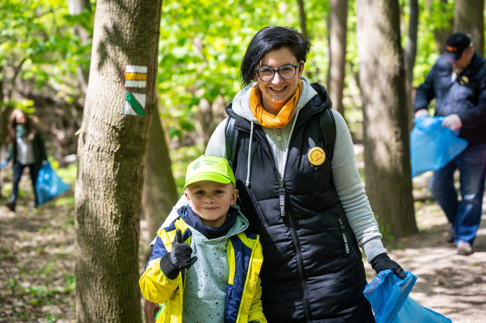
Tisková zpráva
Dny dobrovolnictví 2026: 502 akcí v 11 krajích, 4 377 dobrovolníků a přes 25
tisíc hodin pomoci zdarma pro druhé
Dny dobrovolnictví 2026 potvrdily, že dobrovolnictví má v Česku pevné místo a dál roste. Do
letošního ročníku celorepublikové kampaně se zapojilo 11 krajů, v nichž se uskutečnilo 502 akcí. Na
jejich realizaci se podílelo 471 organizací a 4 377 dobrovolníků, kteří společně odpracovali 25 225,5
hodin pomoci zdarma pro druhé.
Spolupráce více organizací na jedné akci
Výrazným trendem letošního ročníku byla spolupráce více organizací na jedné akci. „Tento model
vedl nejen k vyššímu počtu aktivit, ale také k širšímu zásahu publika a efektivnější spolupráci. Ukazuje
se, že když se spojí dva až tři partneři, dopad akce je znatelně silnější,“ uvedla ředitelka Regionálního
dobrovolnického centra hlavního města Prahy Kateřina Karbanová.
Silně se rozvíjela také regionální spolupráce. Například V Karlovarském kraji se do kampaně zapojily
organizace napříč celým regionem a vznikla tak stabilnější síť partnerství. V Praze se vedle
osvědčených neziskových organizací přidaly také městské části, školy i soukromé firmy, což potvrzuje,
že dobrovolnictví oslovuje stále širší spektrum společnosti.
Důležitou roli sehrála rovněž osobní iniciativa jednotlivců. Právě díky ní vznikaly nové akce a hlásily se
další skupiny dobrovolníků. „Například v Ústí nad Labem se díky jedné iniciativní pracovnici podařilo
zapojit zaměstnance magistrátu do dobrovolnické aktivity v domově pro seniory,“ řekla Jiřina
Gasserová z Regionálního dobrovolnického centra pro Ústecký kraj.
Vstupní brána k dobrovolnictví
Výrazným počinem letošního ročníku byla kampaň „Nechej rozkvést dobro“ ve Zlínském kraji. Ta
prostřednictvím rozdávání semínek přirozeně otevírala rozhovory o dobrovolnictví a pomáhala
přibližovat smysl akce.
„Smysl Dnů dobrovolnictví se v letošním ročníku naplno projevil v praxi. Akce propojovaly veřejnost s
organizacemi nejen jednorázově, ale vytvářely prostor pro osobní zkušenost, poznání fungování
organizací zevnitř a přímý kontakt s lidmi, kteří v nich působí. Ukazuje se, že tato zkušenost velmi
často vede k pokračování dobrovolnických aktivit. Lidé se vracejí, zapojují se opakovaně nebo navazují
dlouhodobou spolupráci. Dny dobrovolnictví tak fungují jako vstupní brána k dobrovolnictví, která
umožňuje vyzkoušet si pomoc v praxi a případně na ni navázat i po skončení kampaně,“ konstatovala
ředitelka Jihomoravského dobrovolnického centra Kateřina Petrášová.
Ročník plný silných lidských momentů
Dny dobrovolnictví 2026 přinesly především silné lidské momenty. Převažovala radost, nadšení a
pocit smysluplné aktivity, a to jak ze strany klientů, tak dobrovolníků. Významnou roli hrála také
mezigenerační setkání, která přirozeně propojovala mladé lidi se seniory a podporovala sdílení
zkušeností. „Těší nás, že mladí lidé často uvádí, že je zkušenost s dobrovolnictvím motivuje k dalšímu
studiu nebo zapojení do pomáhajících profesí,“ podotkla ředitelka Regionálního dobrovolnického
centra Plzeňského kraje Vlastimila Faiferlíková.
„Potěšil nás takový zájem, že lidé prostě přišli a pomohli. A přes 500 akcí po celé republice ukázalo, že
když se Česko spojí, dokáže opravdu hodně. To byla pro nás nejsilnější zpráva Dnů dobrovolnictví,“
uzavřela Kateřina Mužíková z Regionálního dobrovolnického centra Pardubického kraje.
Přehled 11 zapojených krajů:
Hlavní město Praha, Středočeský kraj, Plzeňský kraj, Jihomoravský kraj, Liberecký kraj,
Moravskoslezský kraj, Olomoucký kraj, Pardubický kraj, Ústecký kraj, Karlovarský kraj a Zlínský
kraj.
Pro další informace kontaktujte:
Kraj Organizace Koordinátor Email Telefon
Hlavní město Praha
Regionální dobrovolnické
centrum hl. města Prahy
Letokruh
Kateřina
Karbanová katka@letokruh.eu 603 483 487
Středočeský kraj Regionální dobrovolnické
centrum Středočeského kraje
Kamila
Horálková info@rdcstc.cz 774 376 826
Plzeňský kraj
Regionální dobrovolnické
centrum Plzeňského kraje
TOTEM
Vlastimila
Faiferlíková faiferlikova@totemplzen.cz 736 489 755
Jihomoravský kraj
Regionální dobrovolnické
centrum Jihomoravského
kraje
Tereza
Homolová ddjmk@dobrovolnickecentrum.cz 727 966 873
Liberecký kraj Regionální dobrovolnické
centrum Libereckého kraje Lucie Nováková lucie.novakova@adra.cz 736 411 807
Moravskoslezský
kraj
Regionální dobrovolnické
centrum Moravskoslezského
kraje
Lucie Křivánková lucie.krivankova@adra.cz 607 047 332
Olomoucký kraj Maltézská pomoc Karel Čapka karel.capka@maltezskapomoc.cz 605 228 161
Pardubický kraj Regionální dobrovolnické
centrum Pardubického kraje
Kateřina
Mužíková muzikova@konep.cz 608 236 547
Ústecký kraj Regionální dobrovolnické
centrum pro Ústecký kraj Jiřina Gasserová jirina.gasserova@dcul.eu 774 422 562
Karlovarský kraj Regionální dobrovolnické
centrum Karlovarského kraje Eliška Volfová dobrovolnictvi@instand.cz 605 001 950
Zlínský kraj Dobrodění Jana Haluzová dobrodeni@seznam.cz 775 620 063
Kontakt pro média: Kateřina Petrášová, regionální koordinátorka Dnů dobrovolnictví,
tel.: +420 774 628 627, e-mail: katerina.petrasova@dobrovolnickecentrum.cz
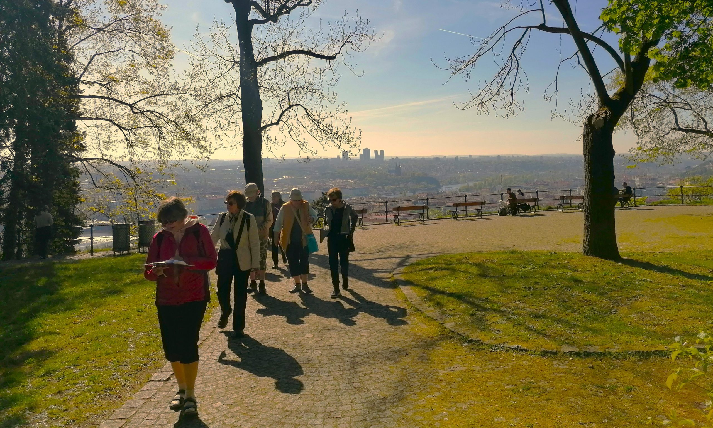
V rámci dnů dobrovolnictví vyrazila zvídavá skupina seniorů s dobrovolnickým průvodcem Petrem do severní části Smíchova a Kinských zahrad. Nádherný a prosluněný den si užili všichni na maximum.
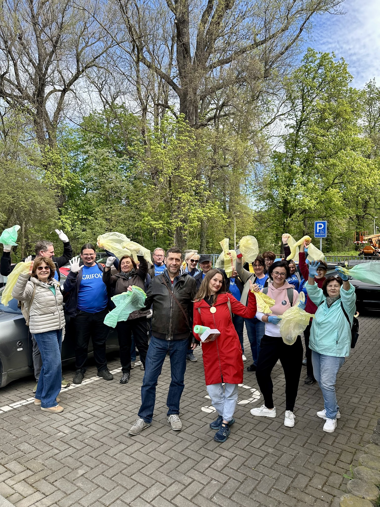
Jaký byl úklid Krčského lesa s Letokruh.eu?
Prádní! V rámci akce Dny dobrovolnictví se sešla spousta nadšenců rozhodnutých pomoci se sběrem odpadků v okolí Thomayerovy nemocnice.
Mezi dobrovolníky byl i letos Ing. Radek Lacko – radní MČ Praha 4 a přidali se také zaměstnanci firmy Grifols sro.
Perfektní parta, milá nálada a nádherné počasí vykouzlily krásný dobrovolnický zážitek.
Děkujeme a těšíme se zase příště!
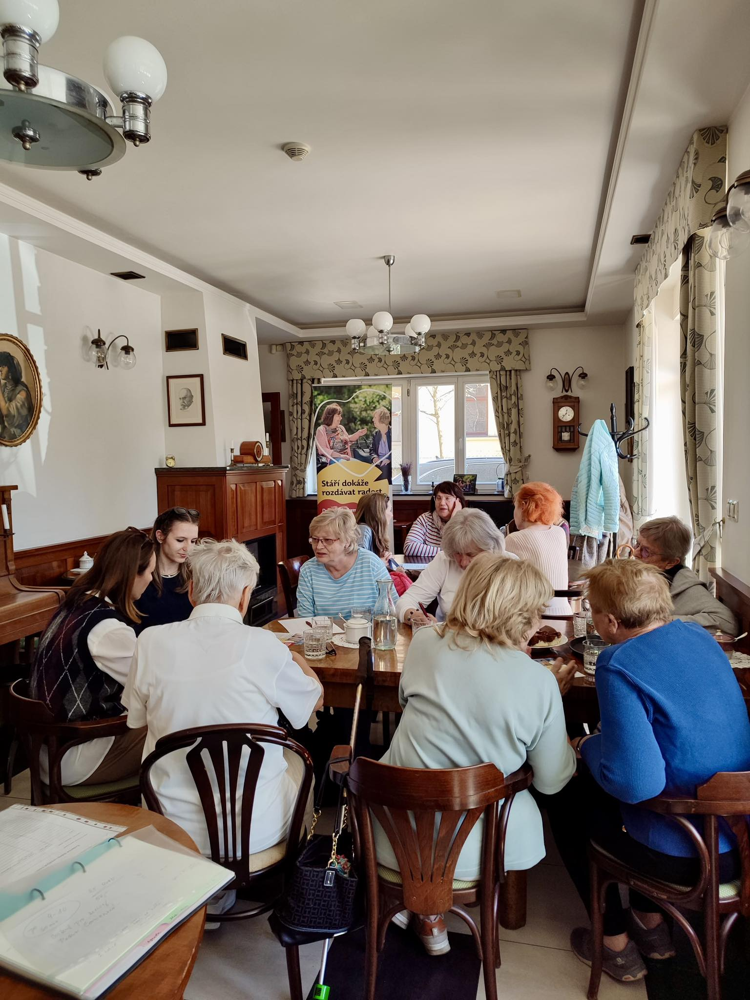
Dny dobrovolnictví 2026 a Den otevřených dveří v Letokruh.eu na pobočce Bořislavka. Máme radost, že dobrovolnictví vzbuzuje zájem všech věkových kategorií
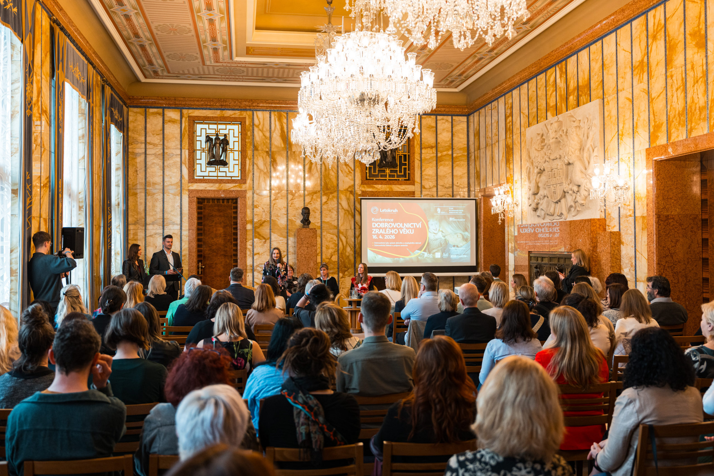
Letošní ročník celorepublikové akce Dny dobrovolnictví jsme slavnostně zahájili konferencí Dobrovolnictví zralého věku, kterou otevřela naše ředitelka Kateřina Karbanová s tím, že jejím cílem je upozornit na obrovský potenciál lidí ve zralém věku a jejich nezastupitelnou roli ve společnosti. Zároveň zdůraznila, že dobrovolnictví se svým „dvojím efektem dopadu“ může být účinným a unikátním nástrojem při zvládání výzev spojených se stárnutím populace.
Setkání odborníků, zástupců veřejné správy, organizací i samotných dobrovolníků nabídlo inspiraci, sdílení dobré praxe i konkrétní pohledy na to, jak může dobrovolnictví přispívat ke kvalitě života ve vyšším věku.
Z příspěvků odborníků zaznělo, že zdravé a aktivní stárnutí je celoživotní proces, který souvisí nejen se zdravotním stavem, ale i s mírou sociálního zapojení, udržováním vztahů a aktivním přístupem k životu. Dobrovolnictví v tomto kontextu představuje důležitý nástroj, který pomáhá seniorům zůstávat soběstačnými, posiluje jejich psychickou pohodu a zároveň přispívá k prevenci osamělosti a závislosti na péči.
Pozornost byla věnována také aktuálním datům, která ukazují, že se do dobrovolnických aktivit zapojuje významná část seniorů, a to často v neformální podobě. Právě tato každodenní solidarita tvoří důležitý základ fungující společnosti.
Konference zároveň nabídla řadu inspirativních příkladů z praxe, od mezigeneračních programů přes dobrovolnictví ve zdravotnictví až po projekty zaměřené na snižování osamělosti seniorů. Ukázalo se, že dobrovolnictví může mít mnoho podob, ale společným jmenovatelem zůstává budování vztahů, sdílení zkušeností a posilování komunit.
Děkujeme všem, kteří se na organizaci akce podíleli, a především našim dobrovolníkům, kteří byli po celý den její nedílnou součástí. Pomáhali s organizací, vytvářeli příjemnou atmosféru a opět potvrdili, jak důležitou roli ve společnosti mají.
Reprezentativní prostory rezidence primátora hl. m. Prahy dodaly celé akci jedinečnou a důstojnou atmosféru, která krásně podtrhla význam tématu, jemuž byla konference věnována.
Velké poděkování za podporu při akci patří Magistrátu hl. města Prahy, Ministerstvu vnitra a společnostem Green decor a Mojeluha.
Přejeme všem, aby inspirace a dobrá praxe, které během konference zazněly, nezůstaly jen v sále, ale promítly se do každodenní práce i přístupu k lidem. A samozřejmě přejeme, a aby si letošní Dny dobrovolnictví všichni užili naplno.
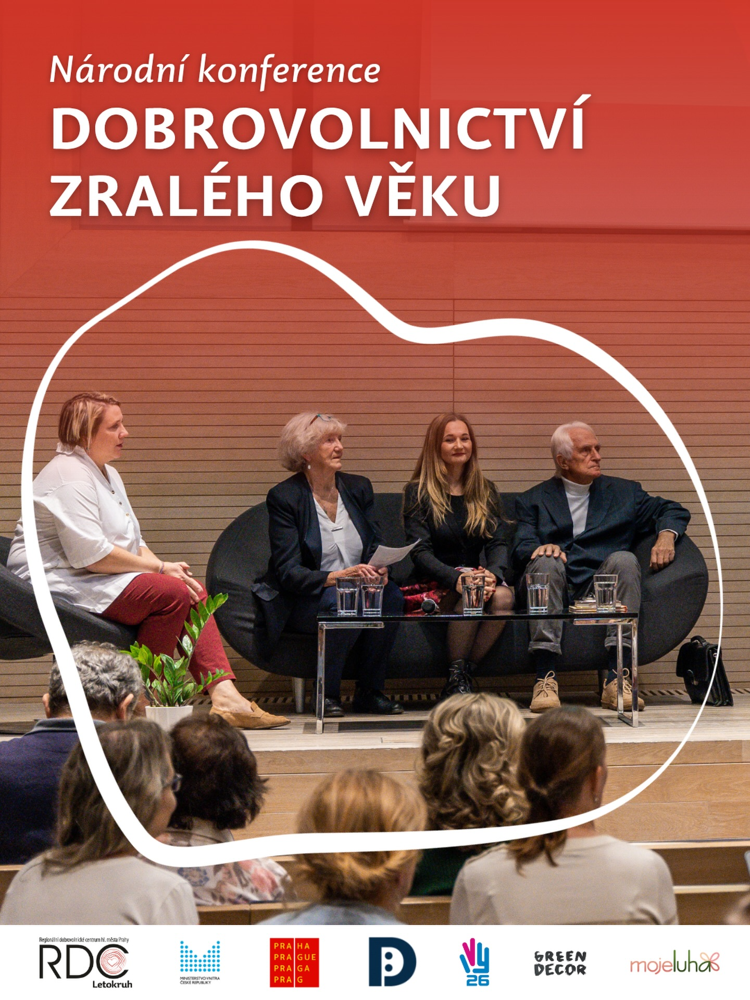
Už tento čtvrtek (16. dubna) pořádáme jako Regionální dobrovolnické centrum Hl. m. Prahy

Národní konferenci Dobrovolnictví zralého věku.


Zaměříme se na dvě oblasti: dobrovolnictví jako způsob aktivního a smysluplného stárnutí a dobrovolnická blízkost a podpora seniorům.

Konference i letos zahájí krásnou iniciativu

DNY DOBROVOLNICTVÍ
po celé České republice, tak se nezapomeňte podívat na webové stránky, co můžete podniknout ve svém okolí!
A my máme obrovskou radost, jaký zájem o konferenci je, protože místa byla ihned obsazená!

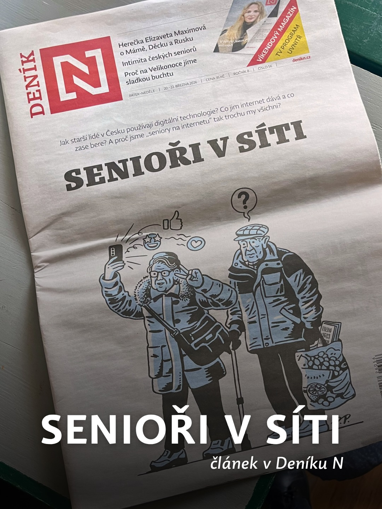
 V březnu vyšel v @enkocz článek Senioři v síti, kde najdete i rozhovor s naší Katkou, Eliškou a několika dobrovolníky na téma sociální sítě, internet a senioři.
V březnu vyšel v @enkocz článek Senioři v síti, kde najdete i rozhovor s naší Katkou, Eliškou a několika dobrovolníky na téma sociální sítě, internet a senioři.  Článek najdete i v online verzi na webu Deníku N!
Článek najdete i v online verzi na webu Deníku N!
Už jste si článek přečetli? A jak s internetem a sociálními sítěmi „bojujete“ vy? 
Děkujeme za moc příjemný rozhovor a otvírání tohoto téma! 
Autorky článku: Karolina Klinková a Marie Dámková

Byli jsme pozváni pohovořit v ranním vysílání CNN Prima News, jakou radost může dobrovolnictví ve zralém věku přinášet. Naše úžasná dobrovolnice Matička a koordinátorka dobrovolníků Eliška sdílely, co vše se pod pojmem dobrovolnictví zralého věku skrývá a jaké benefity do života seniorů vnáší.
Pokud jste vysílání nestihli sledovat, můžete se na něj od 35.35 min. mrknout zde: https://cnn.iprima.cz/porady/novy-den/novy-den-28-2-v-07-00
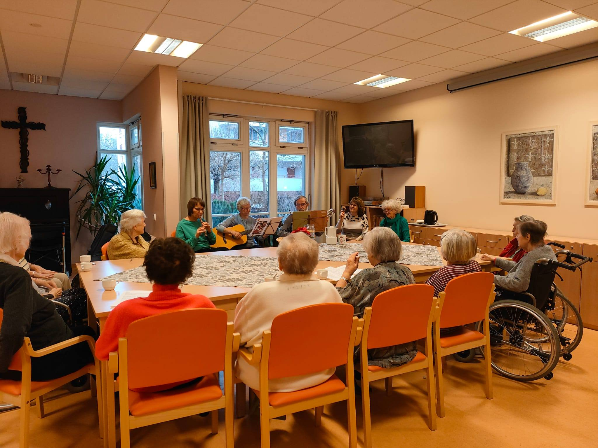
Naše milé Collegium 314 v akci pro Centrum sociální a ošetřovatelské pomoci v Praze 10.
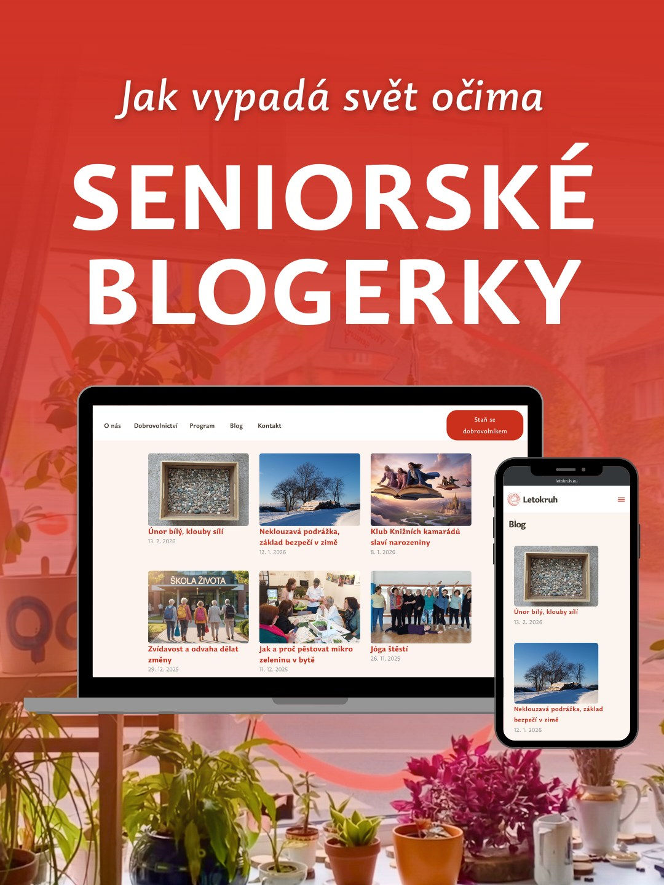
 Že blogerkou můžete být v jakémkoliv věku, dokazuje naše Danka!
Že blogerkou můžete být v jakémkoliv věku, dokazuje naše Danka!
Je jí 60 a rozhodně nepatří k těm, kdo by se nudili. Baví ji všechno možné… od výchovy pejsků přes focení, přírodní medicínu a psychologii až po umění, kulturu nebo ekologii. Prostě taková renesanční duše.
Pro Letokruh už tři roky spolumoderuje Knižní kamarády a poctivě z každého setkání píše zápisy (už je jich 60 stran!). Blog píše zhruba půl roku a od prvního článku je radost ji číst.
Blog najdete na našem webu  letokruh.eu/blog
letokruh.eu/blog
Jaký článek vás zaujal nejvíce?
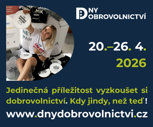
Dny dobrovolnictví 2026 se nezadržitelně blíží. Náš Letokruh se svým Regionálním dobrovolnickým centrem je i tento rok pražským koordinátorem této celorepublikové akce.
Dny dobrovolnictví 2026 propojí organizace, jednotlivce i celé komunity napříč regiony. Zájemci se mohou zapojit do široké škály aktivit. Bližší informace o této iniciativě naleznete zde:
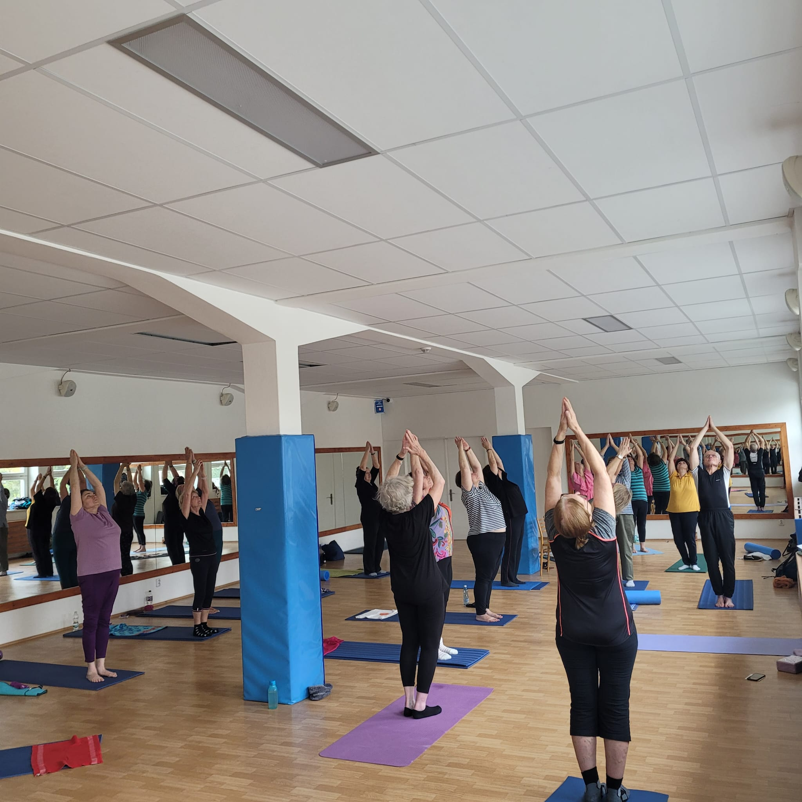
 Navazující kurz cvičení s prvky jógy od března 2026
Navazující kurz cvičení s prvky jógy od března 2026
Děkujeme za krásnou energii na lekcích a velký zájem o pokračování. 
Od 3. 3. do 26. 5. 2026 otevíráme navazující kurz jógy a budeme moc rádi, když se přidáte.
Důležité informace
Termíny: Každé úterý od 3. 3. 2026 do 26. 5. 2026
Čas: vždy od 10:00 do 11:00
Místo konání: Sokol Podolí, Podolská 90, 147 00 Praha 4
Délka kurzu: 13 lekcí
Cena: 1 000 Kč za celý kurz (78 Kč / 1 lekce), 110 Kč / 1 lekce při platbě jednotlivých lekcí preferujeme registraci na celý kurz
Předcvičující: Mgr. Dagmar Křížová
Kapacita je omezená. Kurzy jsou vhodné jak pro začátečníky, tak pro pokročilé účastníky. Výjimečnou absenci bude možné si nahradit.
Přihlašování a platba
Osobně v sídle Letokruhu na adrese Michelská 21/61, Praha 4 po předchozí domluvě nebo Online prostřednictvím formuláře: https://forms.gle/5S3DKHHE2XSBr1uWA
Cvičení již není dotované MHMP, tudíž je nutné uhradit kurzovné. Těšíme se na Vás! V případě dotazů kontaktujte naší Terezku na tel.: 777 179 609 nebo e-mail: tereza@letokruh.eu.
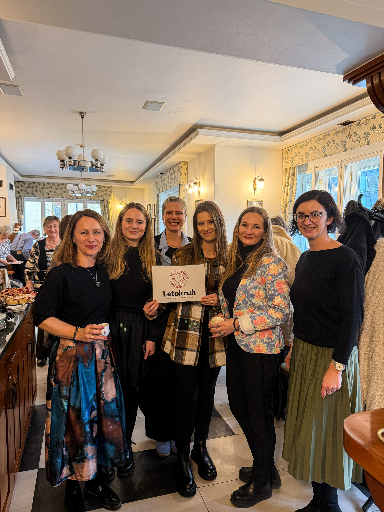
Čtvrteční otevíračka naší nové pobočky Bořislavka byla absolutní jízda plná radosti a energie. 


Od první minuty bylo jasné, že tohle místo má duši! Smích se mísil s hudbou, rozhovory, pohybem a neuvěřitelně vřelou atmosférou, která nás všechny strhla.
Naši báječní seniorští dobrovolníci připravili program, který byl senzační.  Zpívalo se, tančilo, kvízovalo, konverzovalo v angličtině, ochutnávalo, smálo… a hlavně jsme byli spolu. Byla to živá ochutnávka všeho, co naši dobrovolníci dokážou a co Letokruh dělá Letokruhem.
Zpívalo se, tančilo, kvízovalo, konverzovalo v angličtině, ochutnávalo, smálo… a hlavně jsme byli spolu. Byla to živá ochutnávka všeho, co naši dobrovolníci dokážou a co Letokruh dělá Letokruhem.
Děkujeme všem, kteří dorazili a přinesli s sebou otevřenost, radost a chuť být součástí. Dobro bylo doslova hmatatelné a Bořislavka se od prvního dne naplnila životem tak, jak jsme si přáli. Děkujeme všem dobrovolníkům za dobroty i pomoc s přípravou a realizací. 
A my už teď víme jedno: tohle je teprve začátek. Těšíme se na všechno, co tu společně rozjedeme. 
Kateřina Karbanová @bramborajda
Jak vlastně vzniklo propojení našeho Letokruhu a Café Jirásek na Bořislavce?
Katka se s Luckou Jiráskovou, majitelkou tehdejšího Café Jirásek, potkala už v roce 2017 kvůli pohádkovým babičkám, které tu četly dětem pohádky.  Hosté kavárny měli možnost ochutnat naše dobrosušenky i úžasné buchty a koláče našich babiček a nejen to. Během celosvětové pandemie naše babičky háčkovaly síťovky, ve kterých se dokonce roznášely obědy po okolí!
Hosté kavárny měli možnost ochutnat naše dobrosušenky i úžasné buchty a koláče našich babiček a nejen to. Během celosvětové pandemie naše babičky háčkovaly síťovky, ve kterých se dokonce roznášely obědy po okolí!  Letokruh tu pořádal spoustu zajímavých akcí, mezi které patřily i cestovatelské přednášky pro veřejnost.
Letokruh tu pořádal spoustu zajímavých akcí, mezi které patřily i cestovatelské přednášky pro veřejnost. 
Teď se naše cesty spojují a vydávají novým směrem. V tomto překrásném prostředí se od 22. ledna mohou potkávat všechny generace, vznikat dobrovolnické příležitosti a pořádat akce pro veřejnost. 
 Nový rok jsme nemohli začít líp, co myslíte?
Nový rok jsme nemohli začít líp, co myslíte?
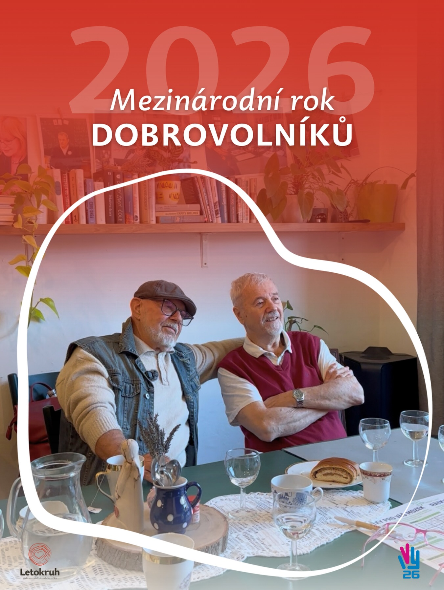
 Věděli jste, že rok 2026 byl OSN vyhlášen Mezinárodním rokem dobrovolníků?
Věděli jste, že rok 2026 byl OSN vyhlášen Mezinárodním rokem dobrovolníků? 
My v Letokruhu se na něj díváme s velkou vděčností a nadějí.  Každý den vidíme, jak obrovskou sílu mají malé činy… úsměv, přečtená pohádka, podaná ruka, společně strávený čas. Dobrovolnictví mění životy. A v Letokruhu mění i každého z nás.
Každý den vidíme, jak obrovskou sílu mají malé činy… úsměv, přečtená pohádka, podaná ruka, společně strávený čas. Dobrovolnictví mění životy. A v Letokruhu mění i každého z nás. 
Děkujeme všem, kdo je součástí naší komunity a přináší světlo tam, kde je potřeba.
Chcete to taky zažít? Přidejte se k nám  letokruh.eu/stansedobrovolnikem
letokruh.eu/stansedobrovolnikem
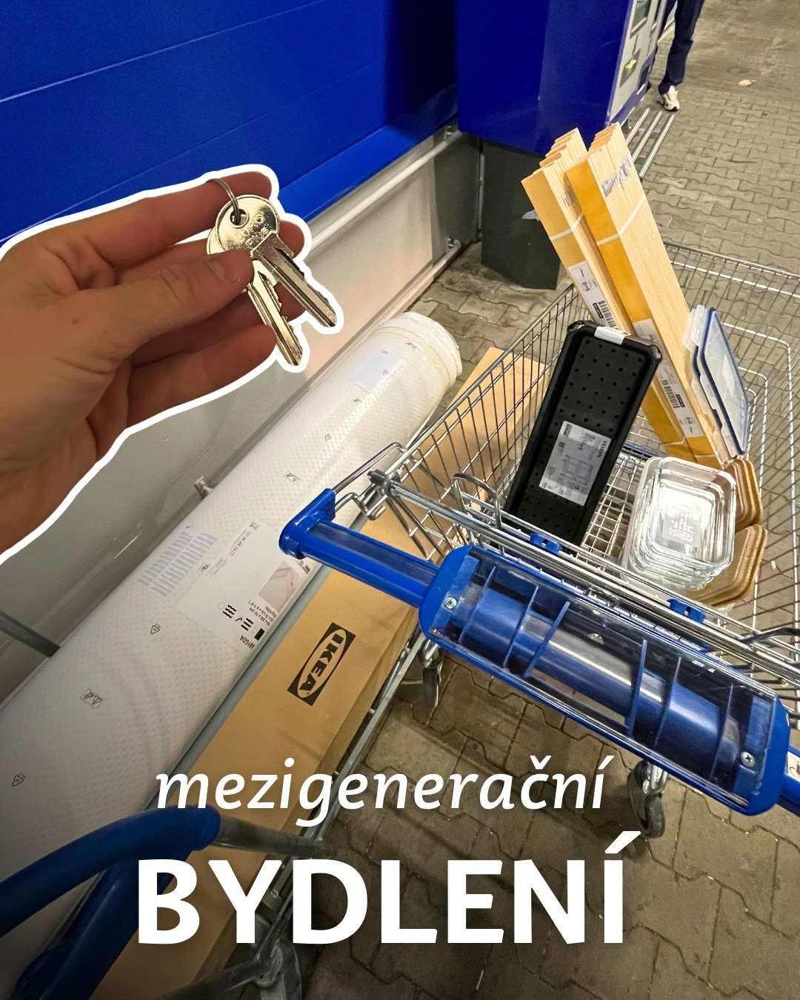
Něco jsme vám pár měsíců tajili!  Od začátku školního roku jsme spustili jeden velký projekt ve spolupráci s městskou částí Praha 4 a Ústav sociálních služeb v Praze 4, na kterém jsme pracovali už od léta a kterému předcházelo pečlivé výběrové řízení.
Od začátku školního roku jsme spustili jeden velký projekt ve spolupráci s městskou částí Praha 4 a Ústav sociálních služeb v Praze 4, na kterém jsme pracovali už od léta a kterému předcházelo pečlivé výběrové řízení.
A koho jsme vybírali? Dvě studentky (a zároveň naše dvě dobrovolnice), které už od října bydlí v Domově s pečovatelskou službou se seniory a společně tak vytvářejí krásný příklad mezigeneračního obohacení a spolupráce. Zatím se jim daří a nás to obrovsky těší.
Holky to nemají vůbec zadarmo, podmínkou výhodného bydlení je oddobrovolničit určitý počet hodin v měsíci. Jak to celé funguje? Jak spolu vycházejí? A co všechno sdílejí?
Podívejte se sami a buďte u toho s námi… 
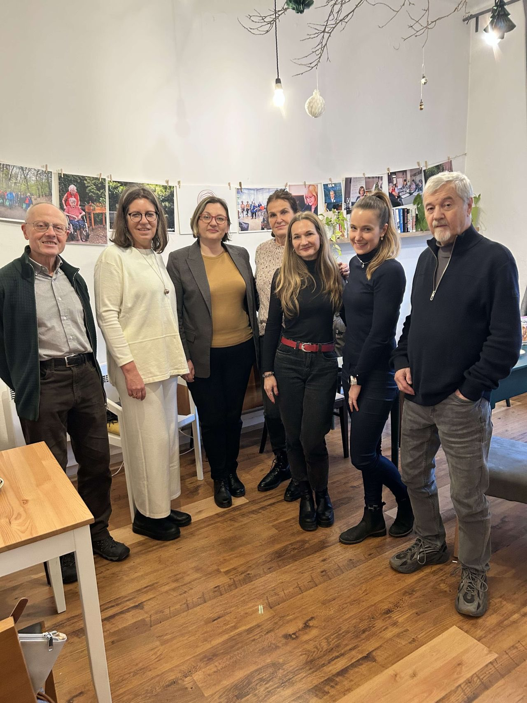
Máme za sebou první setkání projektu ACTS v Praze, které nám ukázalo, že aktivní občanství nemá věkové hranice! 
 Pod hlavičkou Erasmus+ jsme v Praze odstartovali nový dvouletý projekt ACTS - Active Citizens Through Senior Engagement.
Pod hlavičkou Erasmus+ jsme v Praze odstartovali nový dvouletý projekt ACTS - Active Citizens Through Senior Engagement.
První společné setkání bylo důležitým krokem, měli jsme možnost se s partnery osobně potkat, lépe se poznat a zároveň rozběhnout projektové aktivity a nastavit spolupráci na další období.
Našim partnerům jsme ukázali, jak v Letokruhu funguje seniorské dobrovolnictví v praxi. Společně jsme zažili cvičení jógy pro seniory vedené dobrovolnicí, procházku Prahou se seniory v roli průvodců i návštěvu domova s pečovatelskou službou a mezigeneračního bydlení, kde naši dobrovolníci působí jako společníci seniorů.
Cílem projektu ACTS je podpořit seniory v aktivním zapojení do společnosti, posilovat jejich fyzickou i psychickou pohodu prostřednictvím vzdělávání, rozvoje digitálních dovedností a mezigeneračního učení a zároveň rozvíjet seniorské dobrovolnictví tak, aby senioři nacházeli smysluplné role v komunitách, kultuře i mentorství.
Těšíme se na spolupráci i výstupy projektu. Buďte u toho s námi! 
 Letokruh (CZ) | NOWA (AT) Nowa| Dom Sofija (MK) Приватна установа за социјална заштита на стари лица ДОМ Софија Битола
Letokruh (CZ) | NOWA (AT) Nowa| Dom Sofija (MK) Приватна установа за социјална заштита на стари лица ДОМ Софија Битола
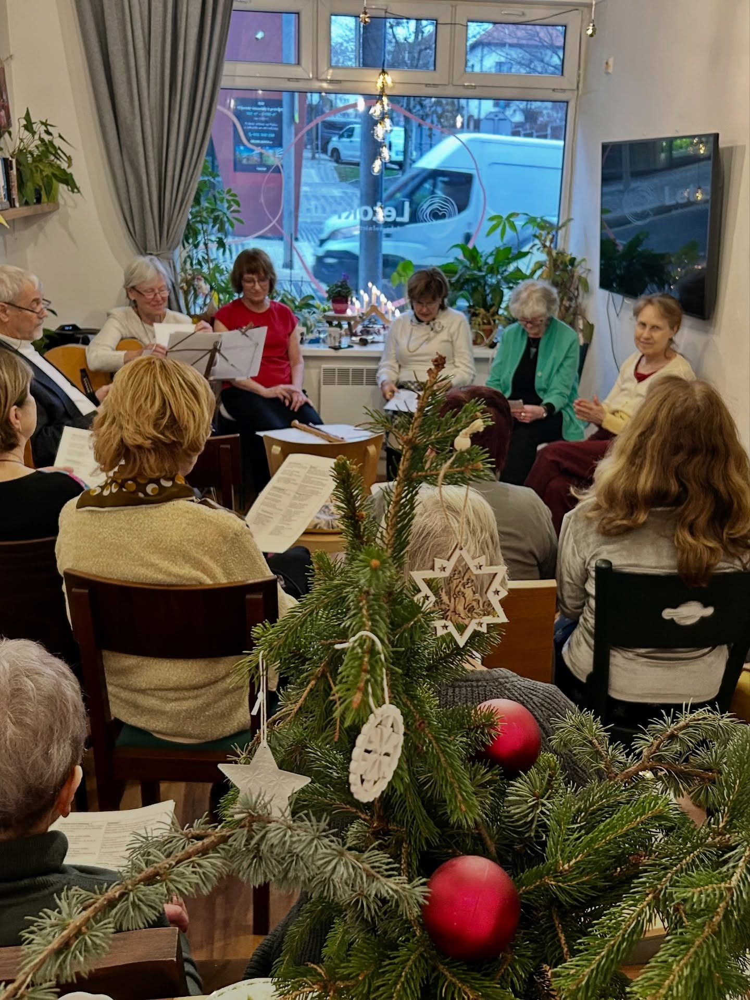
Jak u nás probíhalo vánoční setkání dobrovolníků?  Letos jsme se sešli v opravdu hojném počtu, užili si spoustu zábavy, smíchu, zpívání, dobrůtek a samozřejmě i hřejivého svařáku. A aby toho nebylo málo, zastavil se u nás už i Ježíšek.
Letos jsme se sešli v opravdu hojném počtu, užili si spoustu zábavy, smíchu, zpívání, dobrůtek a samozřejmě i hřejivého svařáku. A aby toho nebylo málo, zastavil se u nás už i Ježíšek. 

Obrovské poděkování patří našim partnerům, díky kterým jsme mohli obdarovat vánoční pozorností ty, kteří si to opravdu zaslouží, naše skvělé dobrovolníky. 
 Bohaya – klenoty delikátní chuti za delikátní Šarnutky,
Bohaya – klenoty delikátní chuti za delikátní Šarnutky,
 Fragonito za nejvoňavější levandulové letní vzpomínky,
Fragonito za nejvoňavější levandulové letní vzpomínky,
 a včelkám z BrumlovkaPasserinvest Group za zdravé slazení.
a včelkám z BrumlovkaPasserinvest Group za zdravé slazení.
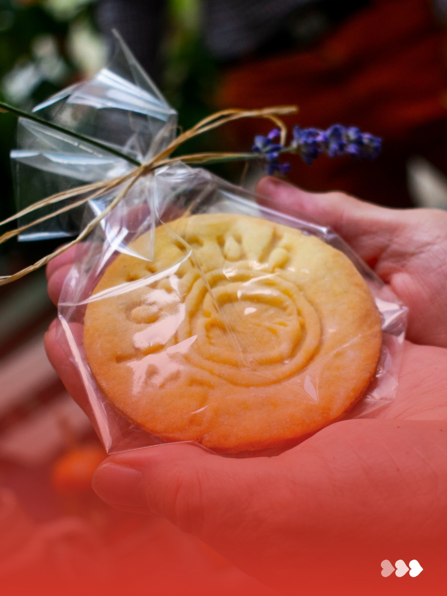
Slavíme 7. narozeniny! Pojďte se s námi podívat, co všechno jsme za tu dobu podnikli:
 vzniká náš milovaný Letokruh
vzniká náš milovaný Letokruh
2019
 naše dobrovolnice Brigitka převzala z rukou primátora hl. města Prahy ocenění Křesadlo 2018 za dobrovolnickou práci
naše dobrovolnice Brigitka převzala z rukou primátora hl. města Prahy ocenění Křesadlo 2018 za dobrovolnickou práci
 založili jsme Dobroklub a pravidelně se setkáváme s dobrovolníky na kus řeči, kafíčko a skvělou atmosféru
založili jsme Dobroklub a pravidelně se setkáváme s dobrovolníky na kus řeči, kafíčko a skvělou atmosféru
2020
 k Letokruhu se přidávají nové posily do týmu - vítáme Terezku, Janču a Vlaďku!
k Letokruhu se přidávají nové posily do týmu - vítáme Terezku, Janču a Vlaďku!
 stali jsme se provozovatelem Regionálního dobrovolnického centra hl. m. Prahy
stali jsme se provozovatelem Regionálního dobrovolnického centra hl. m. Prahy
 díky veřejné sbírce „56m“ jste nám pomohli vybavit naše nové prostory na Praze 4
díky veřejné sbírce „56m“ jste nám pomohli vybavit naše nové prostory na Praze 4
 zapojili jsme se poprvé do projektu Erasmus+ Sousedství snů
zapojili jsme se poprvé do projektu Erasmus+ Sousedství snů
 během první vlny pandemie naši dobrovolníci ušili přes 2 000 roušek a roznášeli jídlo seniorům
během první vlny pandemie naši dobrovolníci ušili přes 2 000 roušek a roznášeli jídlo seniorům
2021
 rozjeli jsme projekt Společník seniora
rozjeli jsme projekt Společník seniora
 jsme součástí výzkumné studie „Hravě spolu“ Univerzity Karlovy i s kaleidovr
jsme součástí výzkumné studie „Hravě spolu“ Univerzity Karlovy i s kaleidovr
 uspořádali jsme diskuzi s Petrem Pavlem
uspořádali jsme diskuzi s Petrem Pavlem
 další náš dobrovolník, Adam (17), získal ocenění Křesadlo 2020 za svou dobrovolnickou aktivitu jako společník seniorky
další náš dobrovolník, Adam (17), získal ocenění Křesadlo 2020 za svou dobrovolnickou aktivitu jako společník seniorky
 v rámci Erasmus+ Sousedství snů jsme jeli do Goudy v Nizozemsku
v rámci Erasmus+ Sousedství snů jsme jeli do Goudy v Nizozemsku
 díky IKEA máme novou kuchyň v Dobroklubu
díky IKEA máme novou kuchyň v Dobroklubu
2022
 zahájili jsme projekt Senioři seniorům
zahájili jsme projekt Senioři seniorům
 uspořádali jsme svojí úplně první veřejnou diskuzi! A jedním z hostů byla i Danuše Nerudová
uspořádali jsme svojí úplně první veřejnou diskuzi! A jedním z hostů byla i Danuše Nerudová
 jeli jsme navštívit další setkání projektu Erasmus+, tentokrát do Lublaně
jeli jsme navštívit další setkání projektu Erasmus+, tentokrát do Lublaně
 naše dobrovolnice Zdeňka se stala Dobrovolnicí roku 2021!
naše dobrovolnice Zdeňka se stala Dobrovolnicí roku 2021!
2023
 vymýšlíme náš vlastní merch!
vymýšlíme náš vlastní merch!
 dobrovolník Petr začal tvořit celodenní výlety po naší krásné zemi, které pořádá doteď! Jako první jsme prozkoumali Český kras
dobrovolník Petr začal tvořit celodenní výlety po naší krásné zemi, které pořádá doteď! Jako první jsme prozkoumali Český kras
 uspořádali jsme setkání s Ondřejem Kubínem, starostou MČ Praha 4
uspořádali jsme setkání s Ondřejem Kubínem, starostou MČ Praha 4
 představili jsme aktivity Letokruhu v Poslanecké sněmovně Parlamentu ČR na téma „Občanská angažovanost seniorů“
představili jsme aktivity Letokruhu v Poslanecké sněmovně Parlamentu ČR na téma „Občanská angažovanost seniorů“
2024
 uspořádali jsme Festival Letokruhu a na něm velkolepě oslavili naše 5. narozeniny
uspořádali jsme Festival Letokruhu a na něm velkolepě oslavili naše 5. narozeniny
 naše babičky a dědečkové si na festivalu střihli módní přehlídku
naše babičky a dědečkové si na festivalu střihli módní přehlídku
 v rámci projektu bilaterární spolupráce podpořeného Fondy EHP a Norska jsme se vydali do Norska
v rámci projektu bilaterární spolupráce podpořeného Fondy EHP a Norska jsme se vydali do Norska
 naši seniorští dobrovolníci nafotili oficiální olympijskou kolekci!
naši seniorští dobrovolníci nafotili oficiální olympijskou kolekci!
2025
 prezentovaly jsme, jak u nás v Letokruhu podporujeme aktivní stárnutí na LocalTrends fóru v polské Poznani
prezentovaly jsme, jak u nás v Letokruhu podporujeme aktivní stárnutí na LocalTrends fóru v polské Poznani
 zúčastnili jsme se Tiskové konference ke Světovému dni proti násilí na seniorech s Klárou Laurenčíkovou a dalšími organizacemi
zúčastnili jsme se Tiskové konference ke Světovému dni proti násilí na seniorech s Klárou Laurenčíkovou a dalšími organizacemi
 začínáme další projekt Erasmus+, tentokrát v roli koordinátora!
začínáme další projekt Erasmus+, tentokrát v roli koordinátora!
 natáčíme s dobrovolníky videa na sítě, při kterých je kopec legrace už při natáčení
natáčíme s dobrovolníky videa na sítě, při kterých je kopec legrace už při natáčení
Za krásných 7 let Letokruhu naši dobrovolníci věnovali přes 18 000 dobrohodin ve prospěch druhých, a za to jim náleží obrovský respekt a naše díky.  Velké poděkování patří všem, kteří nás jakkoliv podporují na naší Letokruhové cestě.
Velké poděkování patří všem, kteří nás jakkoliv podporují na naší Letokruhové cestě. 
Bez vás všech bychom nemohli šířit myšlenku aktivního stárnutí. 
A co nás čeká dál? 
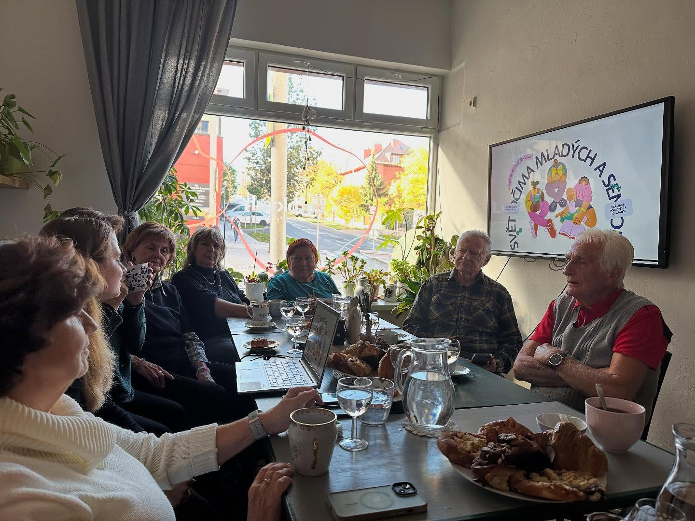
Střípky z mezigenerační diskuze aneb svět očima mladých a seniorů. 

Odpoledne plné povídání, smíchu a sdílení dvou světů, které jsou si často daleko. Senioři měli možnost nahlédnout do dnešního života mladých, do toho, jak komunikují, přemýšlejí, co je pro ně důležité a jaké mají hodnoty či sny. 
A popravdě? Nejvíc zábavy přinesl náš „slovní most“ - moderní výrazy, které dnes frčí, a jejich společné vysvětlování. 
Diskuzi jsme zakončili krásnou výměnou o tom, co by si senioři s mladými navzájem předali.  Mezigenerační setkávání nás baví, dávají nám obrovský smysl a vždy nám připomenou, jak důležitá je komunikace a vzájemná tolerance.
Mezigenerační setkávání nás baví, dávají nám obrovský smysl a vždy nám připomenou, jak důležitá je komunikace a vzájemná tolerance. 
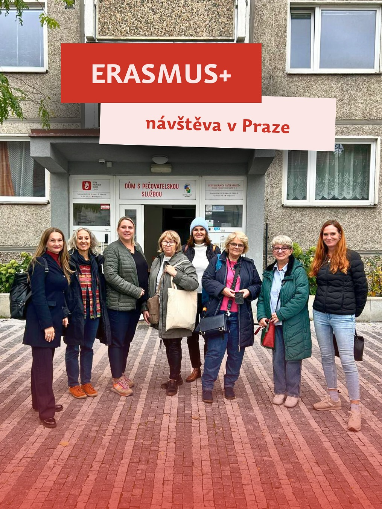
Návštěva Erasmus+ v Praze! 
Ve dnech 8.-10. října jsme přivítali naše partnery z Fundacja Activus (Polsko) a Stadtteilvernetzer Stuttgart e.V. (Německo) v rámci letošního projektu Give a Second Life to Things.
Projekt se zaměřuje na aktivizaci dospělých v místních komunitách, s důrazem na udržitelný rozvoj, snižování konzumerismu, opětovné využívání věcí a prevenci vzniku odpadu. Během návštěvy jsme pro partnery připravili pestrý program, který zahrnoval inspirativní příklady dobré praxe v České republice. Zavítali jsme do: Passerinvest Group, DPS Braník, Odbor environmentálních projektů Magistrátu hl. m. Prahy, Šatník Praha, HWPL, Domov pro seniory Chodov a Kavárna Bílá Vrána (organizace Pohoda).
Děkujeme všem hostitelům a partnerům za sdílení zkušeností, inspiraci a podporu společné vize udržitelné budoucnosti! 

@satnikpraha @hwpl.cz @dschodov @kavarnabilavrana @mcpraha4 @jsem_v.pohode
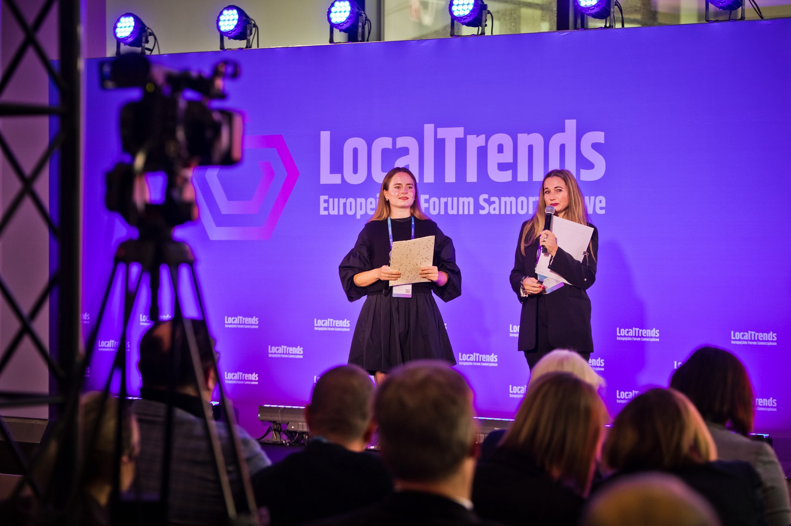
Naše Kateřina Karbanová a Eliška Schönfeldová měly příležitost podělit se o zkušenosti z naší práce se seniory a představit, jak u nás v Česku podporujeme aktivní stárnutí, mezigenerační dialog a dobrovolnictví zralého věku. 

Problematika rychle stárnoucí populace se týká všech evropských zemí a je nesmírně cenné mít možnost sdílet zkušenosti, inspirace a dobré praxe napříč hranicemi. Každá země se s tímto demografickým posunem vyrovnává po svém, ale všude platí jedno:
 společnost, která dává prostor svým seniorům, roste jako celek.
společnost, která dává prostor svým seniorům, roste jako celek.
Diskuze v Poznani byla nejen inspirativní, ale i povzbudivá a potvrzuje, že otevřený dialog a spolupráce jsou tou nejlepší cestou, jak se na změny připravit s respektem a vizí.
Děkujeme za pozvání a skvělou organizaci celého fóra! 
Głos Seniora @solidarni z seniorami Poznań Congress CenterRegionalny Ośrodek Polityki Społecznej w PoznaniuGmina ŚwięciechowaStowarzyszenie mali bracia UbogichSukces po poznańskuGrupa MTPLocal Trends
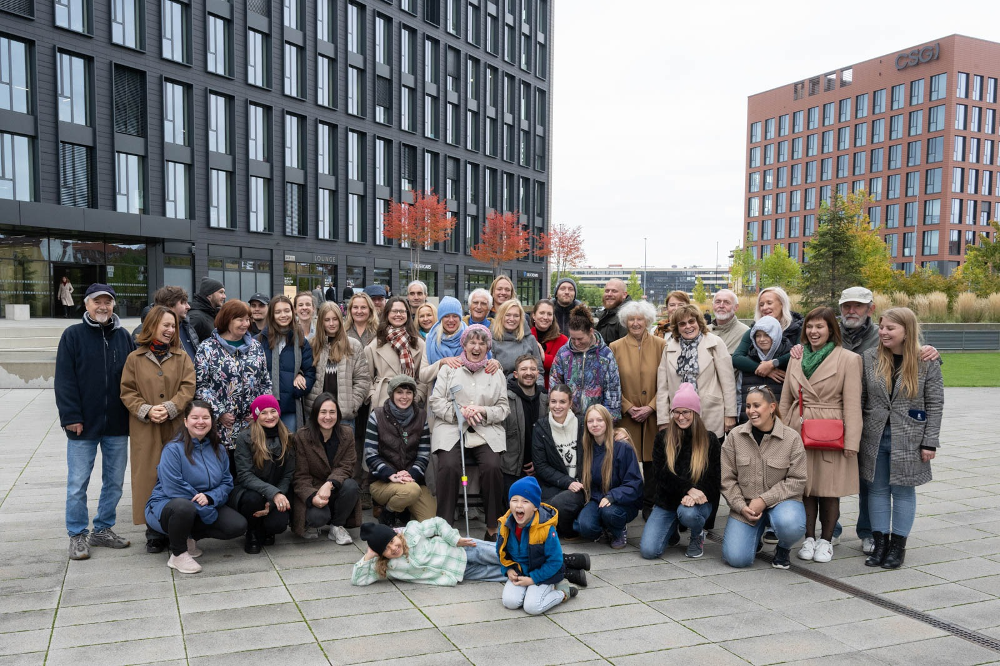
Musíme vám něco prozradit: minulý týden jsme natáčeli nový videospot k letošnímu ročníku Ježískových vnoučat a už se nemůžeme dočkat, až vám ho představíme🤩
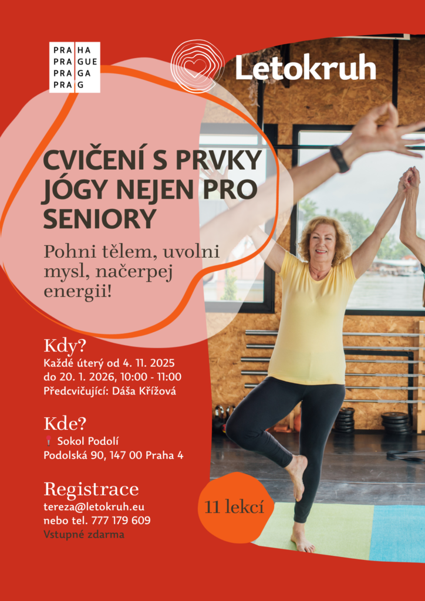
Cvičení s prvky jógy nejen pro seniory s předcvičující Dášou Křížovou
Přijďte si protáhnout tělo, uvolnit mysl a načerpat novou energii v bezpečném a přátelském prostředí. Cvičení je uzpůsobeno potřebám (nejen) seniorů. Bude jemné, pomalé a s důrazem na správné dýchání a relaxaci.
Nepotřebujete žádné zkušenosti ani speciální vybavení, stačí pohodlné oblečení a chuť udělat něco pro sebe.
Termíny: Každé úterý od 4. 11. 2025 do 27. 1. 2026 (mimo 23. 12.)
Čas: vždy od 10:00 do 11:00
Místo konání: Sokol Podolí, Podolská 90, 147 00 Praha 4
Délka kurzu: 11 lekcí
Kapacita je omezená, proto platí, kdo dřív přijde, ten cvičí! Cvičení je dotované MHMP, tudíž je vstupné zdarma.
Kontakt: Tereza Studničná, tel.: 777 179 609, e-mai: tereza@letokruh.eu
Přihlašování zde.

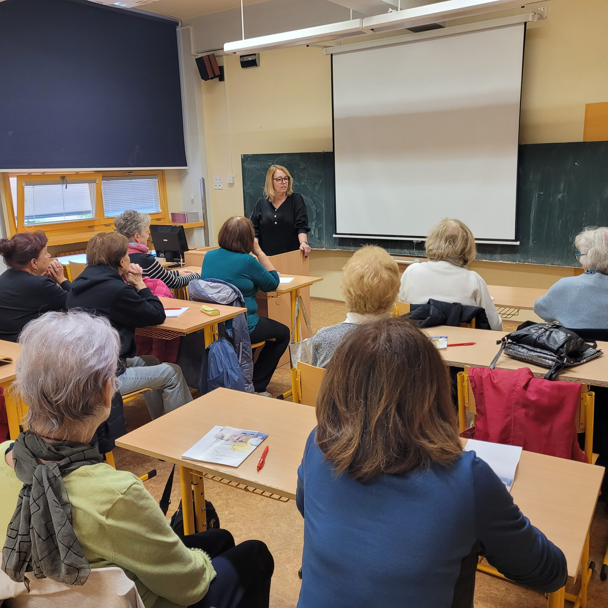
Náš nový projekt Zpátky do školy odstartován. Věříme, že přinese radost a inspiraci nejenom samotným seniorům, ale také zapojeným vyučujícím.
Děkujeme  Praha.eu a Praha 4 za podporu tohoto krásného mezigeneračního projektu
Praha.eu a Praha 4 za podporu tohoto krásného mezigeneračního projektu
#zpatkydoskoly#aktivniseniori#vzdelavanisenioru#zasevlavici#mezigeneracniuceni#spoluprace#letokruh
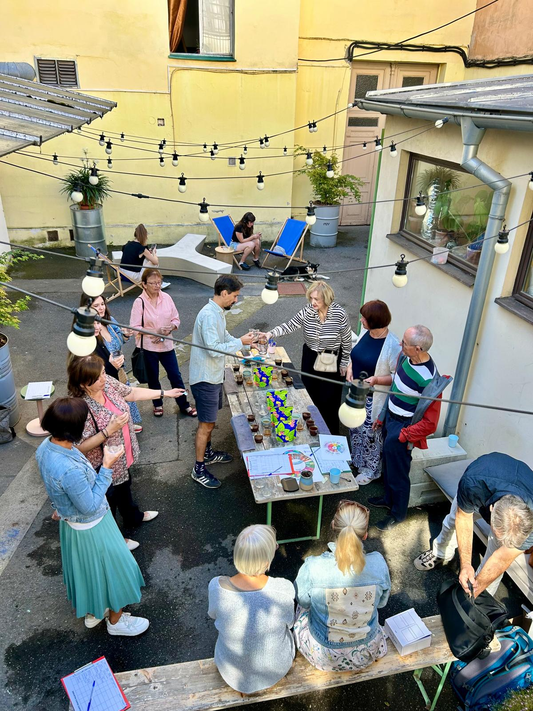
Industra coffee nás v září pozvala na kávový cupping. Nojo, ale co to ten cupping je? Degustace kávy!
Nejdříve jsme „očuchali“ několik různých vzorků, které jsme následně i ochutnali a vše pečlivě porovnali a zhodnotili. Jako správní kávoví nadšenci jsme ihned poznali různé podtóny, nadtóny, kyselosti, hořkosti, zkrátka všechno! Sice jsme se moc netrfili, ale nadšení z celého cuppingu i ze skvělého školitele, který odpověděl na všechny naše otázky, to neovlivnilo.
Věděli jste, že na ochutnávku kávy jsou speciální lžičky a dokonce je potřeba pořádně srknout?
Moc děkujeme a zase přijdeme 🙂 .
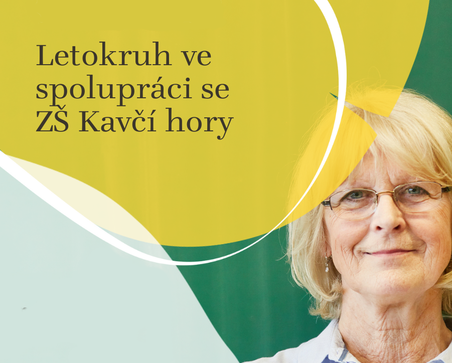
Letos na podzim navazujeme na úspěšný projekt Městské části Praha 4 a přinášíme seniorům opět možnost usednout do školních lavic, tentokrát s novými tématy, která hýbou dnešním světem a která mohou být seniorům někdy méně přístupná nebo srozumitelná. Naším cílem je přiblížit aktuální témata přívětivou a praktickou formou, rozšířit obzory a povzbudit chuť učit se novému.
Na výběr jsou dva vzdělávací kurzy:
1. Psychologie
2. Internet s umělou inteligencí
DŮLEŽITÉ INFORMACE
Termíny: Každý čtvrtek od 2. 10. do 27. 11. 2025
Čas: vždy od 14:30 do 15:30
Místo konání: ZŠ Kavčí hory, K Sídlišti, Praha 4
Délka kurzu: 9 lekcí
Kapacita je omezená, proto platí, kdo dřív přijde, ten dřív (se) učí!
Kurzy jsou vhodné jak pro začátečníky, tak pro pokročilé účastníky.
PŘIHLAŠOVÁNÍ
OSOBNĚ v sídle Letokruhu po předchozí telefonické domluvě (adresa: Michelská 21/61, Praha 4) nebo ONLINE prostřednictvím formuláře na webu: https://forms.gle/yiwayejmQCJ4YZtN9
Kurzy jsou dotované MHMP, je nutné uhradit pouze registrační poplatek 100 Kč za celý kurz.
Kontakt: Eliška Schönfeldová, tel.: 731 209 746, e-mail: eliska@letokruh.eu
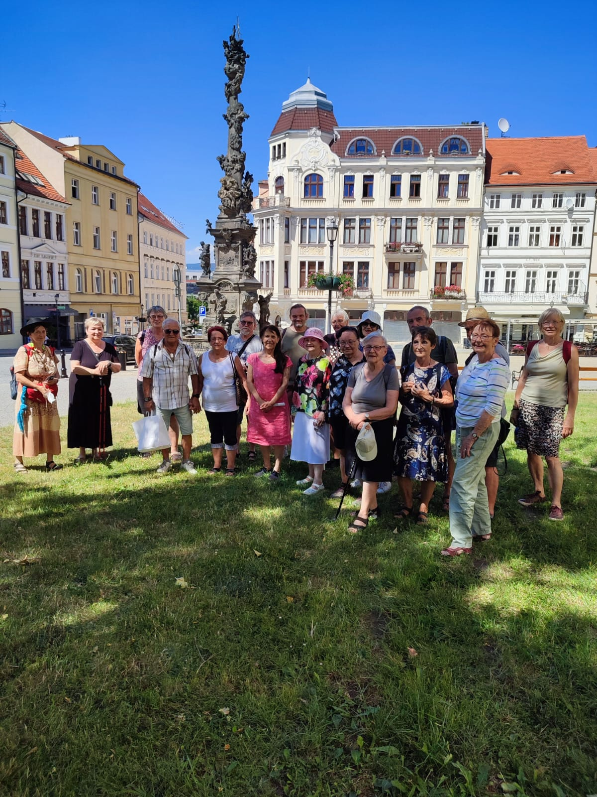
🚌 Jaký byl výlet do Teplic a okolí na začátku července? Sice jsme vychytali pořádné horko, bylo přes 30 stupňů, ale toho jsme se nezalekli ani mi, ani naši výletníci všech věkových skupin. 😎🙌🏻 Děkujeme všem účastníkům za skvělou společnost, dobrou náladu a chuť objevovat krásy okolí Teplicka. Speciální dík patří našemu dopravci, společnosti Furra Bus, za pohodlnou a bezpečnou dopravu. ❤️
A teď ta nejlepší zpráva: už teď pro vás chystáme další výlet! 🎒 V úterý 19. srpna se vydáme po stopách Casanovy… 💘 tušíte, kam to bude? Směr severní Čechy! My už se zas nemůžeme dočkat!
Sledujte novinky a již ve čtvrtek 7. srpna se uvidíme na motivační přednášce, kde si do podrobna řekneme, co všechno nás na výletě čeká a na co se můžete těšit! 😍
Zobrazovat míň
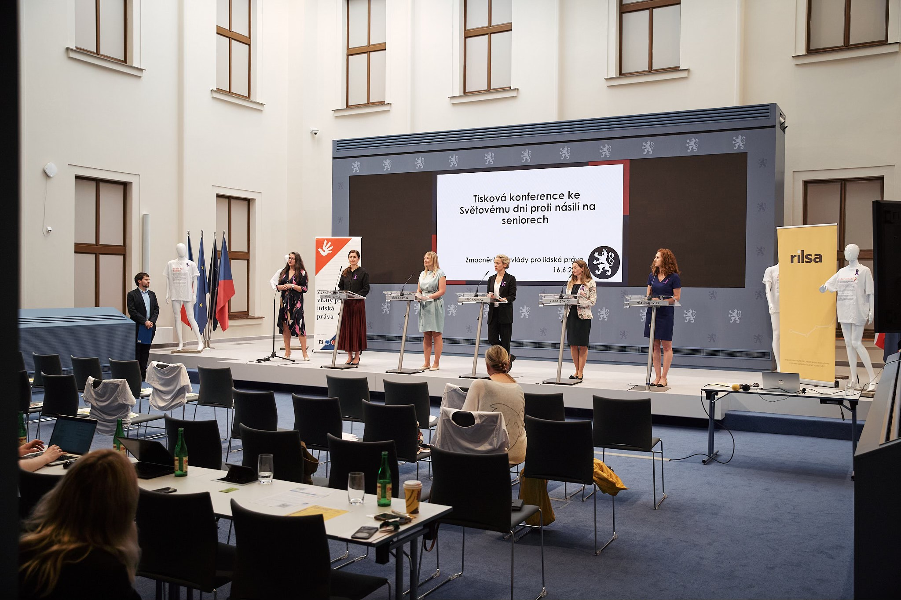
15. června si připomínáme Světový den proti násilí na seniorech. Při této příležitosti jsme dnes na tiskové konferenci, pořádané Klára Laurenčíková představili, jak může i dobrovolnictví posilovat odolnost seniorů vůči násilí, osamělosti i bezmoci.
Naše ředitelka Kateřina Karbanová mluvila o tom, že když dáme seniorům příležitost být aktivními, potřebnými a viditelnými členy společnosti, měníme nejen jejich životy, ale i to, jak i je samotné společnost vnímá. A právě to je jedna z klíčových součástí prevence znevýhodnění a násilí.
Děkujeme Klára Šimáčková Laurenčíková – zmocněnkyně vlády pro lidská práva za pozvání a kolegyním z ŽIVOT 90, Elpida, M i l a a Lucie Vidovićová z Výzkumný institut práce a sociálních věcí za jejich obrovský kus práce, kterou každý den odvádějí pro to, aby se senioři mohli cítit být vidění, slyšení a v bezpečí.
A v neposlední řadě děkujeme všem, kdo s námi sdílejí přesvědčení, že stáří může být silné, aktivní a respektované 
#Senioři#StopNásilíNaSeniorech#DůstojnéStáří#AktivníSenioři#Dobrovolnictví#DobroJe
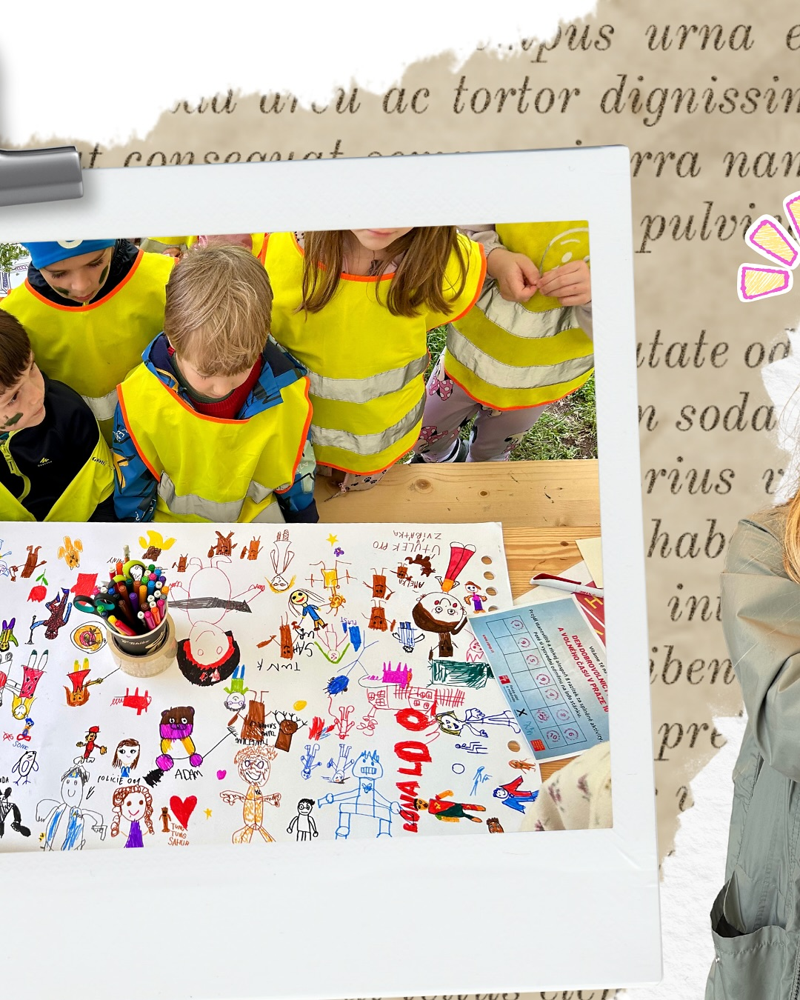


 Krásný mezinárodní den dětí všem dětem, rodičům, ale i našim skvělým dobrovolníkům, kteří dělají děti kolem sebe štastnější a veselejší.
Krásný mezinárodní den dětí všem dětem, rodičům, ale i našim skvělým dobrovolníkům, kteří dělají děti kolem sebe štastnější a veselejší.
Bez našich dobrovolníků by nebyly otázky jako „A babičko ty umíš číst?“ nebo „Dědo, přijdeš zase za týden přečíst krtečka?“ 

A pokud umíte číst a chcete to ukázat i dětem ve školce, připojte se k nám!  Pohádkových čtecích babiček a dědečků hledáme hned několik. A můžeme vám slíbit, že radost v očích těch nejmenších, když přijdete do školky, je nenahraditelná.
Pohádkových čtecích babiček a dědečků hledáme hned několik. A můžeme vám slíbit, že radost v očích těch nejmenších, když přijdete do školky, je nenahraditelná. 
 Jestli máte ve svém okolí aktivního seniora nebo jím dokonce jste, ozvěte se nám do zpráv nebo na e-mail jana@letokruh.eu.
Jestli máte ve svém okolí aktivního seniora nebo jím dokonce jste, ozvěte se nám do zpráv nebo na e-mail jana@letokruh.eu. 


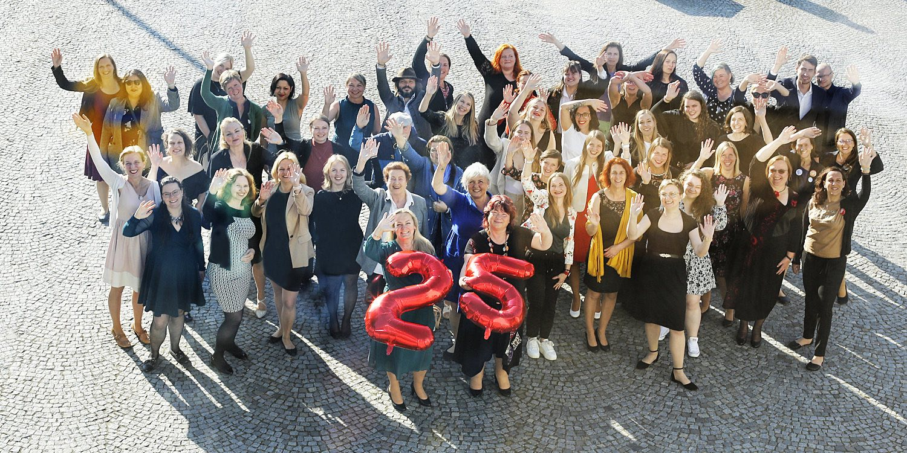
Ve dnech 15. – 17. května jsme se zúčastnili oslav 25 let Národní asociace dobrovolnictví v Kroměříži. Během workshopů jsme sdíleli zkušenosti, diskutovali např. o metodě Service learning, mentoringu nebo jsme společně plánovali PR kampaň na podporu dobrovolnictví.
Byly to inspirativní dny plné sdílení a milých setkání.
Díky, že jsme mohli být u toho! Národní asociace dobrovolnictví, z.s.
 Robert Zauer
Robert Zauer
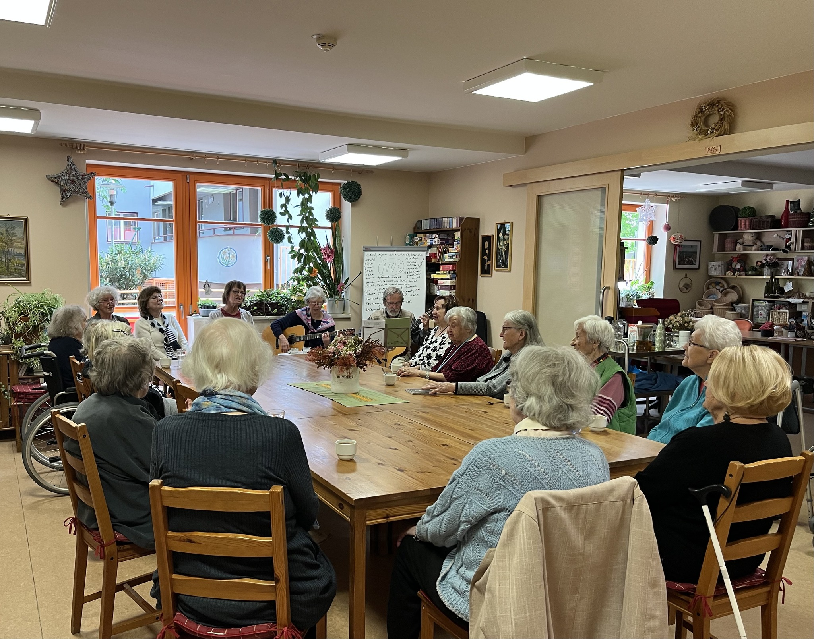
Dne 6.5. vystoupilo naše kvarteto dobrovolníků v DS U Vršovického nádraží. Tito senioři vystupují pod názvem Collegium 314, přičemž číslo označuje součet jejich věku v době založení sdružení. 
Ačkoli se každým rokem úměrně zvyšuje, v názvu zůstává stále stejné.  Tentokrát je navíc doprovodila dobrovolnice Marta s píšťalkou.
Tentokrát je navíc doprovodila dobrovolnice Marta s píšťalkou.
Připravili si plejádu písní a mnohé z nich si uživatelé domova s chutí zazpívali s nimi.
Závěrečná píseň sklidila dlouhý potlesk a už nyní se těšíme na další setkání.
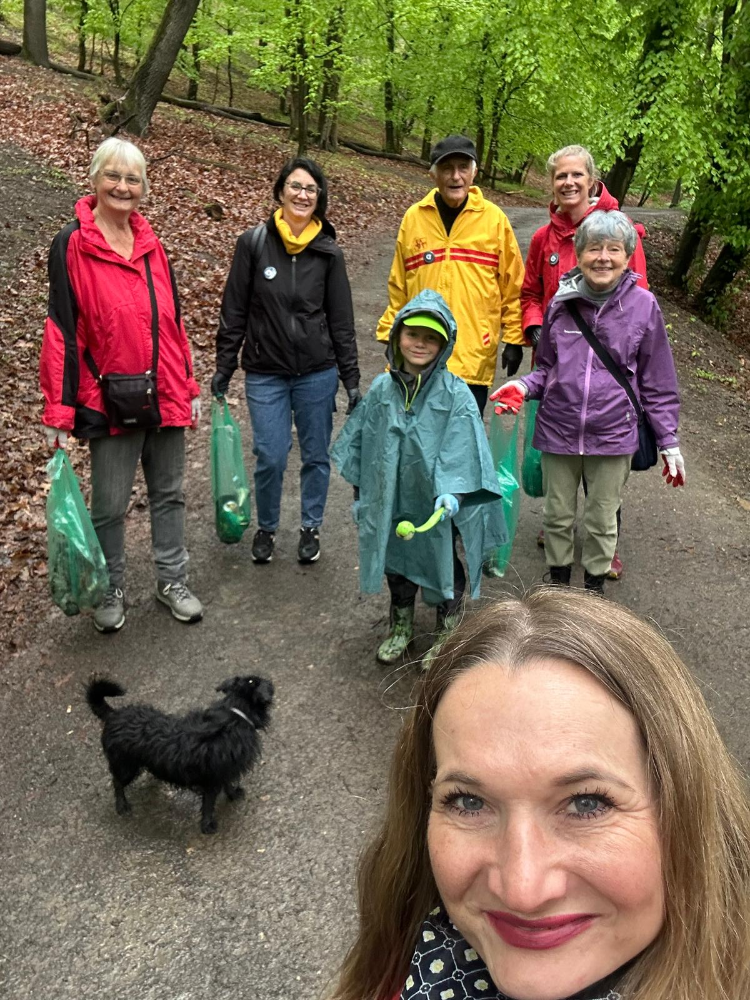
 Ohlédnutí za Dny dobrovolnictví 2025 v rámci Regionálního dobrovolnického centra hl. města Prahy
Ohlédnutí za Dny dobrovolnictví 2025 v rámci Regionálního dobrovolnického centra hl. města Prahy 
Týden plný radosti, setkávání, tvoření a pomoci je za námi!
Celý týden jsme akce pořádali v rámci Regionálního dobrovolnického centra hl. města Prahy - a bylo to skutečně pestré. Vyrobili jsme si krásné brože, povídali si v knihovně o knížkách, otevřeli dveře všem, kdo chtěli nahlédnout do světa dobrovolnictví, a společně uklidili okolí Krčského lesa.

Děkujeme všem, kdo byli u toho - dobrovolníkům, návštěvníkům i podporovatelům.


Byl to týden plný úsměvů, přátelství, malých i velkých činů a skvělých zážitků.
Zapojilo se 23 členských organizací a v Praze proběhlo celkem 34 akcí!
Dny dobrovolnictví jsme organizovali s nadšením - a pokud jste někdy přemýšleli, že byste dobrovolnictví chtěli vyzkoušet… tak vážně: kdy jindy, když ne teď?
#dnydobrovolnictví2025 #vyrobabrozi #knizniklub #denotevrenychdveri #uklidlesa #oslavadnezeme #letokruh #dobrovolnictvi #dobrovolnik #pomahatjeradost #kdyjindykdyžneteď #neziskovaorganizace #neziskovka #pridejseknam #senioriseniorum
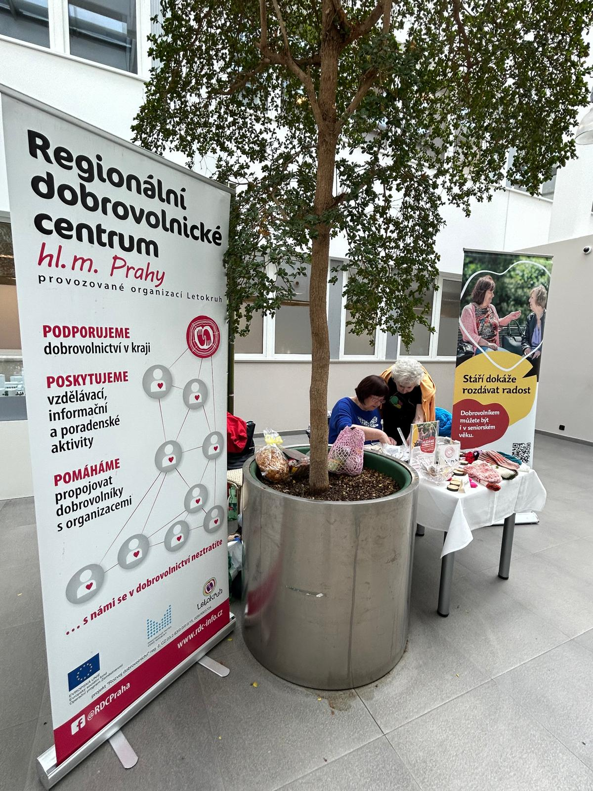
V pondělí 14.4. se opět konal ve vestibulu úřadu @mcpraha4 jarmark, tentokrát velikonoční! 
Naše babičky napekly dobroty a děti z mateřských a základních Prahy 4 vytvořily spousty krásných výrobků, které si mohli koupit návštěvníci jarrmarku a tím opět podpořit náš Letokruh. 
Moc děkujeme všem, co si něco koupili, Praze 4 za pořádání jarmarku, dětem, že vytvořily tolik krásných věcí, a panu starostovi @ondrakubin, že takové akce pořádá.
Zúčastněné školy a školky: ZŠ Bítovská, ZŠ Filosofská, ZŠ Horáčkova, ZŠ U Krčského lesa, ZŠ Jeremenkova, zsjilovska, ZŠ Jižní, ZŠ Křesomyslova, ZŠ Kavčí hory, ZŠ a MŠ Mendíků, ZŠ Na Chodovci, ZŠ Na Líše, ZŠ Nedvědovo náměstí, ZŠ Plamínkové, ZŠ Poláčkova, ZŠ a MŠ Sdružení, ZŠ Školní, ZŠ Táborská, MŠ Alšovy sady, MŠ Trojlístek, MŠ BoTa, MŠ Spořilovská, MŠ Jílovská, MŠ Jitřní, MŠ K Podjezdu, MŠ Ryšánka, MŠ Mezivrší, MŠ Na Chodovci, MŠ Na Zvoničce, MŠ Němčická, MŠ Přímětická, MŠ 4 Pastelky, MŠ Svojšovická, MŠ Krčská, MŠ V Zápolí, MŠ Voráčovská.
#velikonoce#jarmark#dobrovolnik#skola#skolka#pomahatjeradost#neziskovaorganizace#neziskovka#praha#senioriseniorum
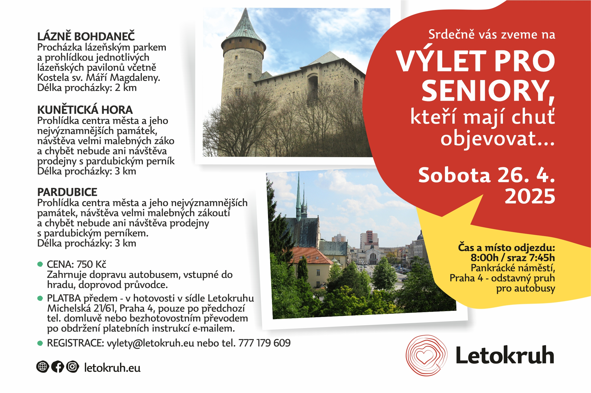
Přidejte se k nám 26.4. na organizovaný výlet autobusem. Tentokrát se vydáme objevit krásy Lázní Bohdaneč, Kunětické hory a Pardubic.
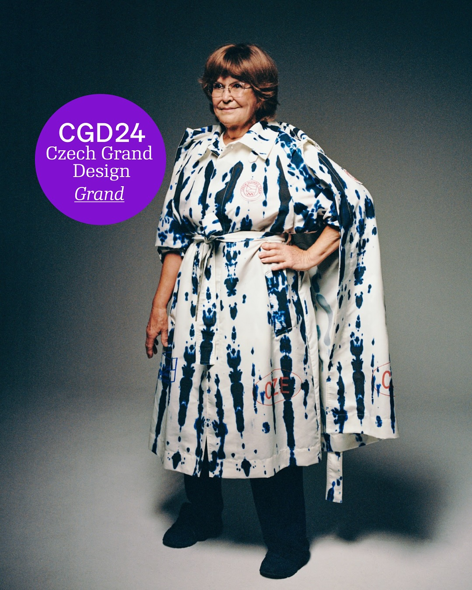
Gratulujeme Janu Černému, že získal titul absolutního vítěze Grand designér roku 2024 cen od Czech Grand Design a jsme moc potěšeni, že naši seniorští dobrovolníci mohli být v rolích modelů součástí olympijské kolekce!

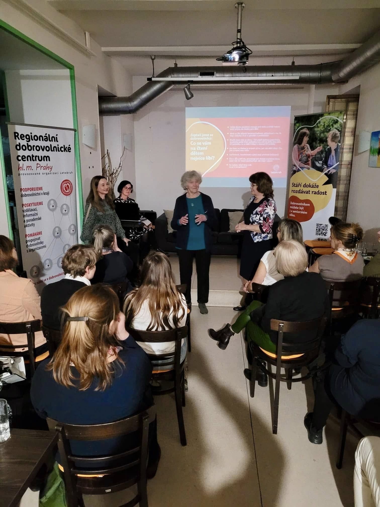

 Co si představíte pod pojmem kvalitní dobrovolnický program?
Co si představíte pod pojmem kvalitní dobrovolnický program?
Opečované, spokojené a motivované dobrovolníky?
Spokojená místa, kde se dobrovolnictví odehrává?
Dlouhodobou spolupráci?
A my přidáváme ještě garance péče o přijímající organizace.
Náš dobrovolnický program Pohádková babička a dědeček patří k těm nejoblíbenějším a nás nesmírně těší zájem dětských zařízení o jeho rozvoj.
Naše včerejší setkání zapojených organizací je jasným důkazem, že vzájemná komunikace, sdílení i práce dokáže generovat spoustu nových námětů a posílit naši spolupráci.
Děkujeme zúčastněným za příjemnou inspiraci a za vstřícné podmínky, které pro naše dobrovolníky po celý rok vytváříte
Našemu seniorskému hudebnímu uskupení Kolegium 314 děkujeme  za okouzlující atmosféru a Kavárna Bílá vrána i organizaci POHODA za vynikající občerstvení a milé klima
za okouzlující atmosféru a Kavárna Bílá vrána i organizaci POHODA za vynikající občerstvení a milé klima

#pecujeme#sdilenimotivuje#seniori#senioridetem#propojujeme#spoluprace#dobrovolnictvi#aktivniseniori#dobrovolnickyprogram#dobroje#letokruh
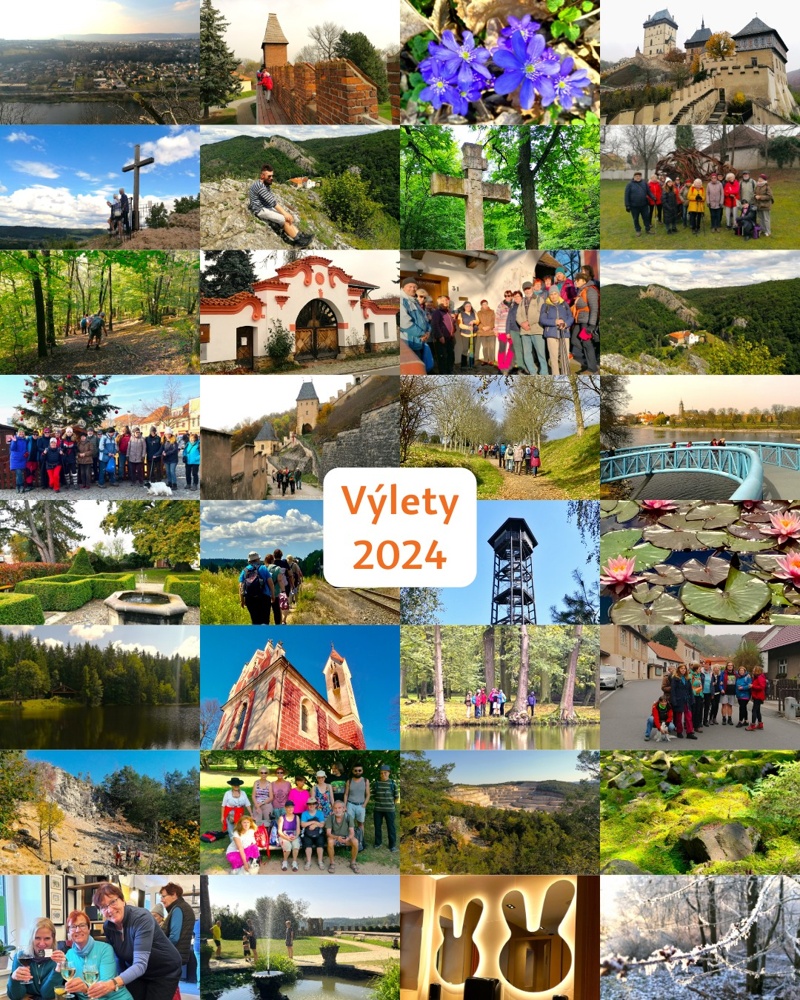
 Díky našemu aktivnímu dobrovolníkovi Petrovi Koubovi se vydáváme každoročně na nespočet zajímavých výletů po celé České republice. Koukněte se, jak vypadal minulý rok!
Díky našemu aktivnímu dobrovolníkovi Petrovi Koubovi se vydáváme každoročně na nespočet zajímavých výletů po celé České republice. Koukněte se, jak vypadal minulý rok! 
 Nachodili jsme v roce 2024 celkem 321 kilometrů během 18 výletů. To znamená, že jedna trasa měla v průměru něco málo přes 17 kilometrů!
Nachodili jsme v roce 2024 celkem 321 kilometrů během 18 výletů. To znamená, že jedna trasa měla v průměru něco málo přes 17 kilometrů!  Celkem nachozených 321 kilometrů je jako přejít 428 krát Václavské náměstí!
Celkem nachozených 321 kilometrů je jako přejít 428 krát Václavské náměstí!
 Viděli jsme nespočet kostelů, hradů, zámků, zahrad, rybníků, měst, parků, hor, hřbitovů, soch, lesů a památek. A jednu kuličkovou dráhu.
Viděli jsme nespočet kostelů, hradů, zámků, zahrad, rybníků, měst, parků, hor, hřbitovů, soch, lesů a památek. A jednu kuličkovou dráhu.
 Navštívili jsme 3 CHKO: Křivoklátsko, Český kras a Brdy. Viděli jsme dokonce nedávno objevenou jeskyni Arniku v Českém krasu.
Navštívili jsme 3 CHKO: Křivoklátsko, Český kras a Brdy. Viděli jsme dokonce nedávno objevenou jeskyni Arniku v Českém krasu.
 Pokořili jsme 7 rozhleden a 5 vyhlídek.
Pokořili jsme 7 rozhleden a 5 vyhlídek.
 Sestoupali jsme dohromady 5 131 km, to je jako kdybychom seběhli Petřínský kopec 89 krát!
Sestoupali jsme dohromady 5 131 km, to je jako kdybychom seběhli Petřínský kopec 89 krát!
 Pád jsme zažili jen jeden. A to ještě podezříváme Katku, že to udělala jen pro naše pobavení.
Pád jsme zažili jen jeden. A to ještě podezříváme Katku, že to udělala jen pro naše pobavení. 
 Zažili jsme také jednu policejní výtku
Zažili jsme také jednu policejní výtku  za založený oheň v přírodě u Babky. U rozhledny! Aby nedošlo k nějaké mýlce…
za založený oheň v přírodě u Babky. U rozhledny! Aby nedošlo k nějaké mýlce… 
🏃🏻♂️➡️ Pokud bychom šli své nachozené kilometry jako štafetu, dostali bychom se z Prahy až na izraelskou hranici. Ušli bychom totiž 3 289 kilometrů!
 Děkujeme, Petře, že pro nás pořádáš naprosto skvělé výlety, které jsou nabité spoustou zajímavostí, dobrou náladou, krásnou přírodou a všemi aktivními výletníky. Už teď se těšíme, co všechno podnikneme v tomto roce, a že už jsme viděli ten nabitý itinerář!
Děkujeme, Petře, že pro nás pořádáš naprosto skvělé výlety, které jsou nabité spoustou zajímavostí, dobrou náladou, krásnou přírodou a všemi aktivními výletníky. Už teď se těšíme, co všechno podnikneme v tomto roce, a že už jsme viděli ten nabitý itinerář! 


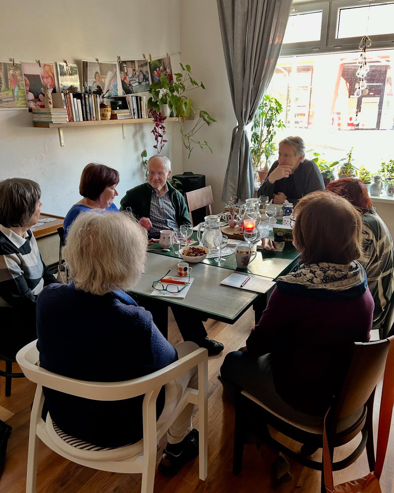
Hau dů jů dů?
Začátečník nebo pokročilý? U nás se cítí všichni stejně dobře…
A jakou středu máte vy?
#konverzace#aktivnisenior#akademiezdravehostarnuti#letokruh

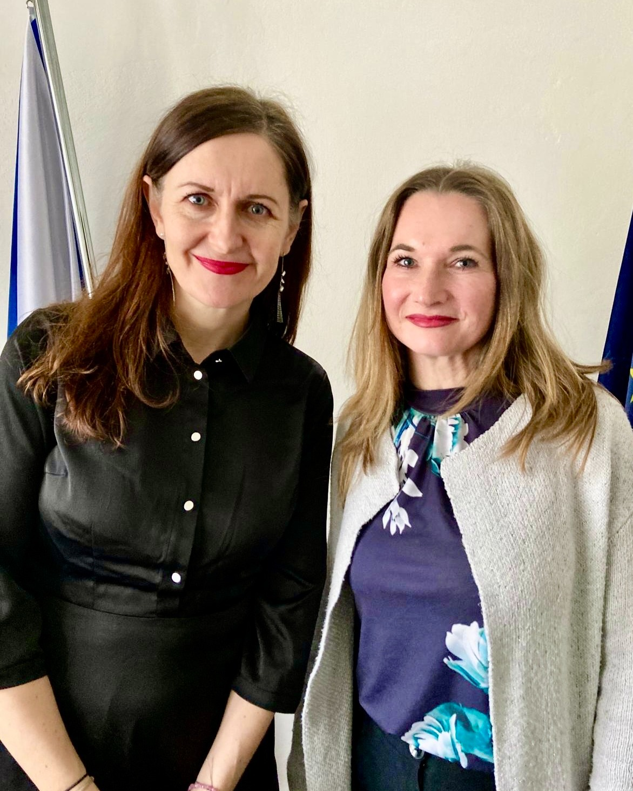
S Klára Šimáčková Laurenčíková – zmocněnkyně vlády pro lidská práva máme zaděláno na spolupráci v tématu podpory lidí zralého věku a jejich aktivním přístupu k životu. A vy se už nyní můžete těšit na to, co vám společně upečeme.
Děkujeme

za inspirativní setkání!
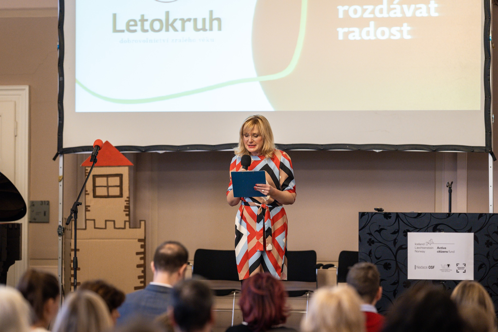
Máme velkou radost

Naše ambasadorka @stepankaduchkova, která nás dlouhodobě podporuje, se zúčastnila speciálního charitativního vydání pořadu „Hvězdná 7“ na @barrandovtv.
S přehledem porazila další soutěžící a svým vítězstvím zajistila Letokruhu 25 000 Kč, které využijeme na podporu našich projektů pro seniory.
Tento úspěch je nejen skvělou propagací naší organizace, ale především motivací pokračovat v našich dobrovolnických aktivitách, které seniorům přinášejí radost a pocit sounáležitosti.
Děkujeme
Štěpánce za její neuvěřitelné nasazení a všem, kteří nás podporují!
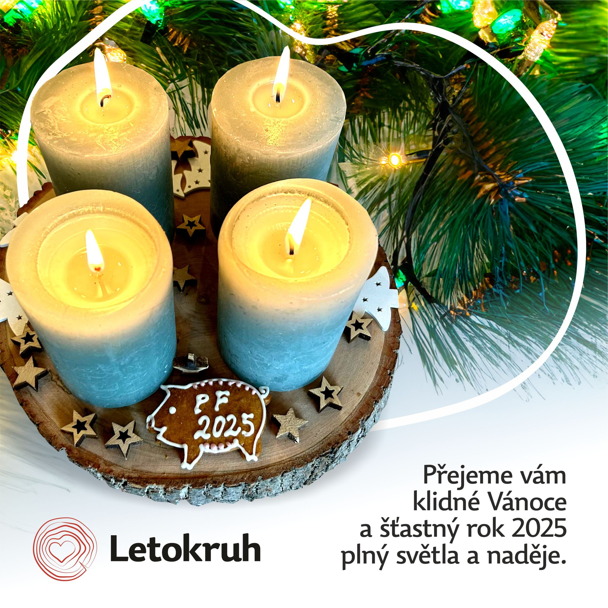
Děkujeme, že tu s námi jste a podporujete Letokruh 
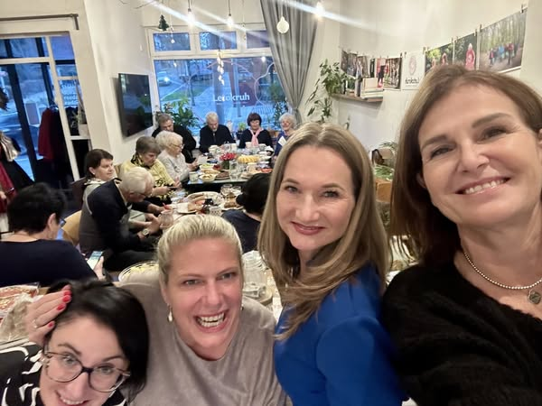
Jaké to je, když na štědrý den bouchnou kamna plná sazí, nebo když přes noc kapr doskáče až do sklepa?
Tomu a spoustě dalších veselých historek našich seniorských dobrovolníků jsme měli možnost se zasmát při našem vánočním posezení.
Za doprovodu našeho hudebního dobrovolnického kvarteta jsme se všichni nádherně naladili na Vánoce.
A ačkoliv Ježíšek přijde až za týden, u nás se již nadělovalo
Překrásné Andělky z DobroDílo, které k našim dobrovolníkům sedí jak ulité, přinesly velkou radost a jak věříme, přinesou i štěstí.
Poukázky od @Dr. Max Lékárna se zase postarají o pevné zdraví těch, kteří konají celý rok nezištně dobro.
A my moc děkujeme za tak nádherné vánoční dárky, které jsme mohli našim dobrovolníkům zprostředkovat
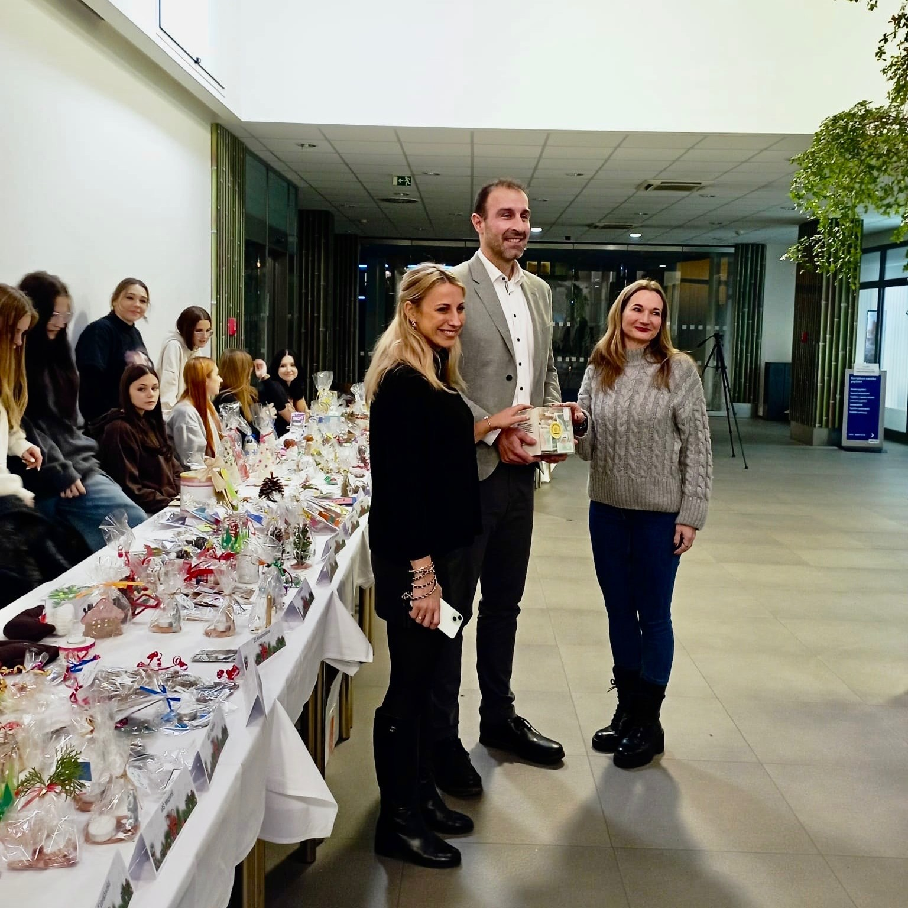
Ve středu 4.12. 2024 se konal ve vestibulu úřadu Praha 4 Vánoční jarmark, na něhož vyrobily děti z mateřských a základních škol na Praze 4 překrásné výrobky, které si mohli koupit návštěvníci jarmarku a tím podpořit náš Letokruh 
Lidé si mohli ve vestibulu úřadu koupit například svícny, ozdoby na vánoční stromky nebo obrázky či další výrobky ze dřeva i papíru. Jejich prodej zajistily žákyně SŠ Kavčí hory. Nakonec se díky překrásným výrobkům a nakupujícím vybralo přes 20 000 Kč a my vám všem z celého srdce moc a moc děkujeme! Ať už dětem, které vyrobily krásné věci, kolemjdoucím, kteří si něco koupili, a hlavně Praze 4 v čele s panem starostou Ondřej Kubín 
Zúčastněné školy a školky: ZŠ Bítovská, ZŠ Filosofská, ZŠ Horáčkova, ZŠ U Krčského lesa, ZŠ Jeremenkova, ZŠ Jílovská, ZŠ Jižní, ZŠ Křesomyslova, ZŠ a MŠ Kavčí hory, ZŠ a MŠ Mendíků, ZŠ Na Chodovci, ZŠ Na Líše, ZŠ Nedvědovo nám., ZŠ Plamínkové, ZŠ Poláčkova, ZŠ a MŠ Sdružení, ZŠ Školní, ZŠ Táborská, MŠ Alšovy sady, MŠ Trojlístek, MŠ BoTa, MŠ Spořilovská, MŠ Jílovská, MŠ Jitřní, MŠ K Podjezdu, MŠ Ryšánka, MŠ Mezivrší, MŠ Na Chodovci, MŠ Na Zvoničce, MŠ Němčická, MŠ Přímětická, MŠ 4 Pastelky, MŠ Svojšovická, MŠ Krčská, MŠ V Zápolí, MŠ Voráčovská.


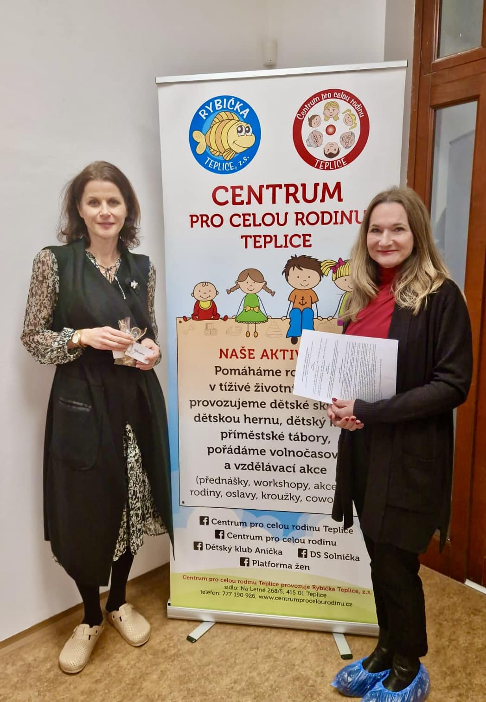
Včera jsme slavili Mezinárodní den dobrovolníků, a jak lépe ho oslavit než smysluplnou prací…. Naše Kateřina Karbanová navštívila Centrum pro celou rodinu v Teplicích, které vede obdivuhodná Petra Hessová. Společně tak odstartovaly první krok, který povede k rozvoji seniorského dobrovolnictví v této lokalitě, a který přinese příležitosti seniorům čerpat pocity radosti a užitečnosti prostřednictvím dětí v dětských skupinách.
Moc děkujeme za vřelé dopoledne v Teplicích a už teď se moc těšíme, kolik krásného toto propojení přinese
Tímto také srdečně zdravíme Spiralis, díky jehož Leadership Academy se obě akční ženy měly možnost poznat
#spoluprace#seniori#dobrovolnictvi#seniordobrovolnikem#deti#detskeskupiny#pohadkoviseniori#pohadkovababicka#pohadkovydedecek#rozvojdobrovolnictvi#dobroje#letokruh
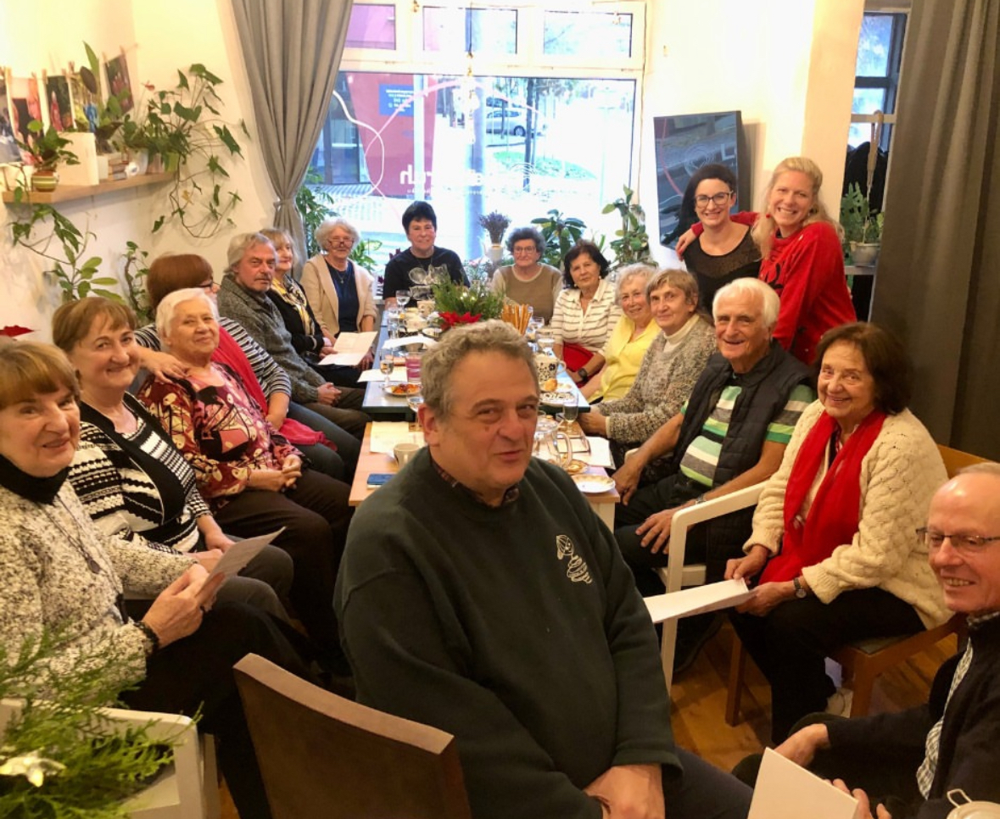
Dnes chodí Mikuláš, ale také se slaví významný den - Mezinárodní den všech dobrovolníků
V Letokruhu jsme neskutečně rádi, že máme naše skvělé dobrovolníky. Máme velkou radost, že tolik lidí neváhá pomáhat druhým. Jen tak, nezištně, protože chtějí a můžou. Jsme moc rádi, že vás všechny máme a že společně můžeme měnit svět k lepšímu

#senioriseniorum#dobrovolnictvi#dobrovolnici#dobrovolnik#pomahatjeradost#praha#neziskovka#NadaceOSF#praha4#internationalvolunteerday#mezinarodnidendobrovolniku#oslava#dekujeme
I letos naši seniorští dobrovolníci stáli u zrodu spotu pro Ježíškova vnoučata. Hřeje nás na  jak krásná tato spolupráce je!
jak krásná tato spolupráce je!
Letos ve spotu můžete vidět naší Emilku, Václava a Martiču a my jim děkujeme  , že pomáhají podpořit ty, kteří si svá přání již sami plnit nemohou.
, že pomáhají podpořit ty, kteří si svá přání již sami plnit nemohou.
Přidejte se i vy, staňte se Ježíškovými vnoučaty


Děkujeme
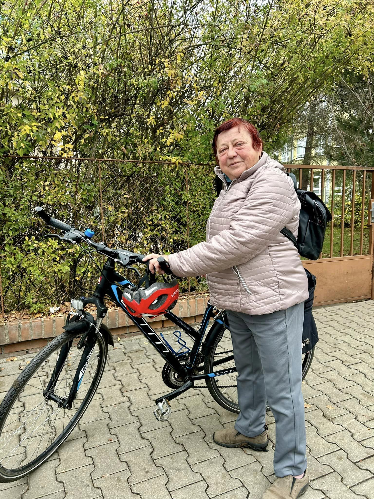
No uznejte, není to pecka mít pro děti multifunkční babičku, která si za nimi přijede i v zimě ze sousední obce na  ?!?Z tohoto propojení máme obrovskou radost
?!?Z tohoto propojení máme obrovskou radost  Ať se společně daří
Ať se společně daří
Centrum D8 – Kralupy nad Vltavou
#aktivnisenior#pohadkovababicka#dobrovolnictvi#dobrovolnik#seniordobrovolnik#mezigeneracne#spoluprace#deti#prodeti#dobroje#letokruh
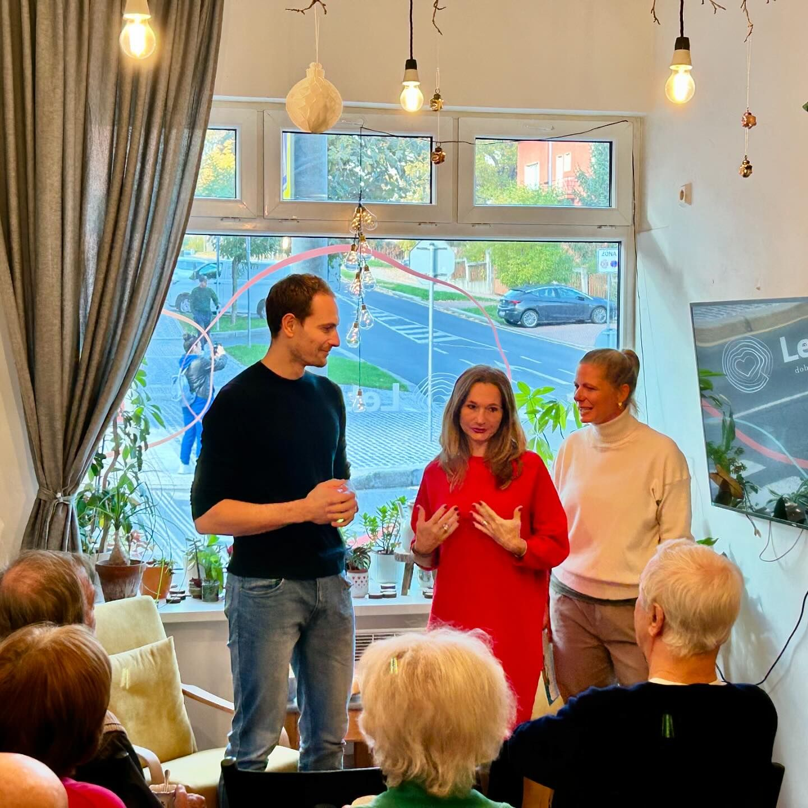
Včera se naší kolegyni @terka_studna podařil pořádný majstrštyk. V rámci programu Setkání s osobností nám přivedla na besedu mistra světa a olympionika, hráče beachvolejbalu, Ondřeje Perušiče. Ten si během chviličky získal 

 nás všech díky svému entuziasmu, své bezprostřednosti, pokoře a humoru. Naši seniorští dobrovolníci byli dychtiví otázek a lační po Ondrových odpovědích, že nám téměř tři hodiny povídání nestačily. Děkujeme
nás všech díky svému entuziasmu, své bezprostřednosti, pokoře a humoru. Naši seniorští dobrovolníci byli dychtiví otázek a lační po Ondrových odpovědích, že nám téměř tři hodiny povídání nestačily. Děkujeme za překrásné dopoledne, za energii i naději a @perusicschweiner přejeme mnoho úspěchů na písku i mimo něj
za překrásné dopoledne, za energii i naději a @perusicschweiner přejeme mnoho úspěchů na písku i mimo něj

 #czechbeachvolleyball#sport#beachvolleyball#champion#beseda#seniori#aktivniseniori#seniorstidobrovolnici#dobrovolnictvi#motivacniakce#dobroje#letokruh
#czechbeachvolleyball#sport#beachvolleyball#champion#beseda#seniori#aktivniseniori#seniorstidobrovolnici#dobrovolnictvi#motivacniakce#dobroje#letokruh
Předvánoční spoty projektu Ježíškova vnoučata vždy budí emoce a ukazují na něco, nad čím je dobré se pozastavit a zamyslet. Ani letos tomu nebude jinak… aaa víc nemůžeme prozradit…  Už se na výsledek úsilí filmařského týmu moc těšíme!
Už se na výsledek úsilí filmařského týmu moc těšíme! 
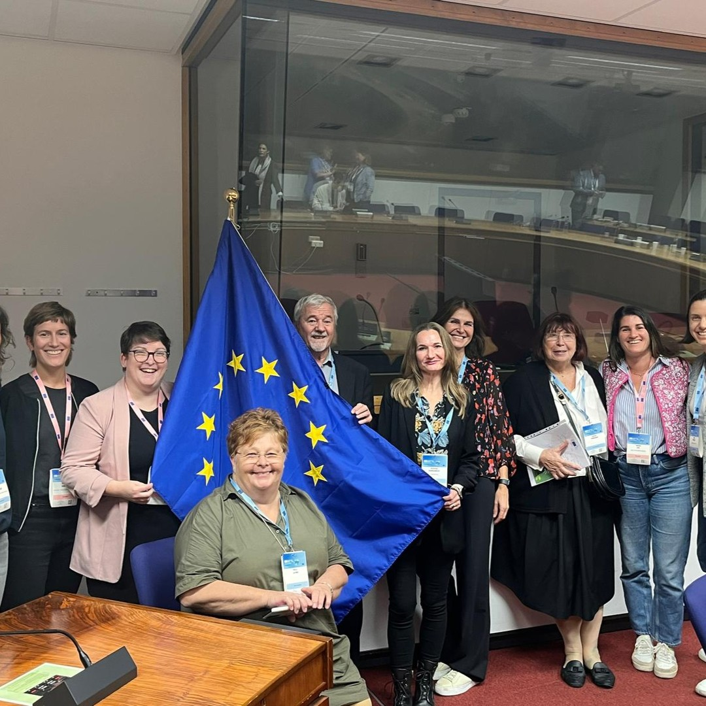
To tedy bylo něco! Projekt Erasmus plus s názvem SEE U, kterého je Letokruh součástí to dotáhl až do Bruselu
 V rámci EURegionsWeek jsme se mohli pochlubit výsledky tohoto projektu, které zaznamenávají velký ohlas! Na tvorbě tras pro aplikaci Actionbound, která umožňuje objevovat známá i méně známá místa se aktivně podílel i náš dobrovolník Jiří, který byl součástí naší bruselské výpravy. Excelentně a s grácií sobě vlastní reprezentoval naše aktivní seniorské dobrovolníky a dokázal, že mít osmdesát let rozhodně není překážkou pro aktivity na mezinárodní úrovni. Těší nás hřejivý pocit z dobře odvedené práce a jsme hrdí na to, že se o nás už i tady ví. Děkujeme partnerům projektu z Rakouska, Slovinska, Švýcarska a Belgie za velkou dávku inspirace, sdílení zkušeností, týmové sounáležitosti a mnoha zajímavých zážitků a setkání během bruselské návštěvy, ale i po celou dobu projektu.
V rámci EURegionsWeek jsme se mohli pochlubit výsledky tohoto projektu, které zaznamenávají velký ohlas! Na tvorbě tras pro aplikaci Actionbound, která umožňuje objevovat známá i méně známá místa se aktivně podílel i náš dobrovolník Jiří, který byl součástí naší bruselské výpravy. Excelentně a s grácií sobě vlastní reprezentoval naše aktivní seniorské dobrovolníky a dokázal, že mít osmdesát let rozhodně není překážkou pro aktivity na mezinárodní úrovni. Těší nás hřejivý pocit z dobře odvedené práce a jsme hrdí na to, že se o nás už i tady ví. Děkujeme partnerům projektu z Rakouska, Slovinska, Švýcarska a Belgie za velkou dávku inspirace, sdílení zkušeností, týmové sounáležitosti a mnoha zajímavých zážitků a setkání během bruselské návštěvy, ale i po celou dobu projektu.
#euregionsweek#erasmusplus#projektseeu#actionbound#cooperation#dobrovolnik#volunteer#senior#dobroje#letokruh

My příležitosti k potkávání, síťování a navazování možných spoluprací prostě milujeme. Proto jsme si opět užili další z Dnů otevřených dveří našeho Regionální dobrovolnické centrum Hl. m. Prahy, kde se setkali nejen zástupci rozmanitých organizací, ale i městských částí.Bylo nám potěšením se potkat a také představit výstupy našeho projektu Erasmus+ s názvem SEE U, na kterém s našimi zahraničními partnery usilovně pracujeme, a který má obrovský potenciál (nejen pro seniory) v možnosti poznávání okolí prostřednictvím digitálních technologií. Více o projektu zde: https://www.see-u-project.eu/…Děkujeme za návštěvu a těšíme se na příště!
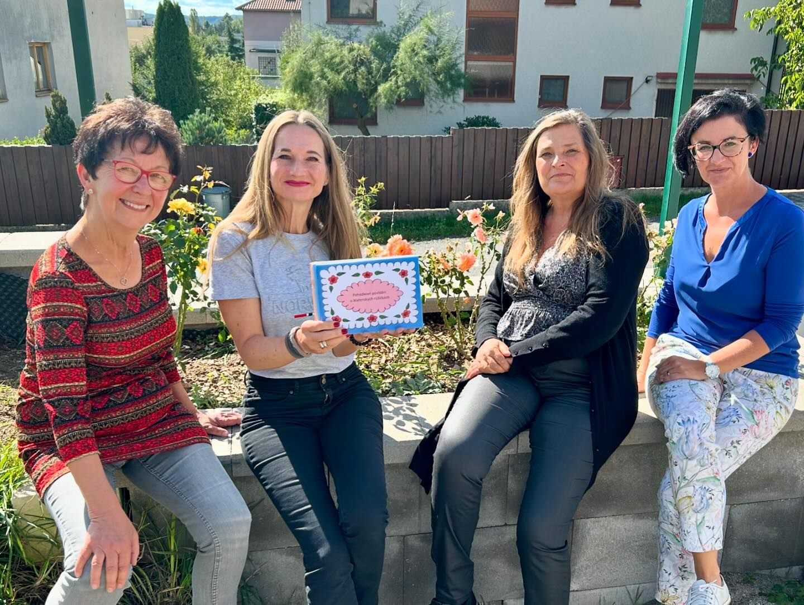
My víme, že používat příspěvky s “něco se chystá” je out, ale ono se vážně něco chystá s Růže Blatná a bude to strašně krásný a voňavý a my se prostě nemůžeme dočkat…#dobrovkraji#spoluprace#senioridobrovolnici#aktivnisenior#multigeneracne#dobroje#letokruh
Dnes jsme u nás přivítali polskou návštěvu z organizace Fundacja Activus – Akademia Seniora a měli jsme možnost vzájemně se inspirovat v podpoře seniorů. Navštívili jsme společně i naši seniorskou dobrovolnici, paní Jiřinu v akci při aktivizaci seniorů v odlehčovacím zařízení Ústav sociálních služeb v Praze 4, kde jsme si společně zacvičili. Kolegové z Polska byli nadšení z úrovně seniorského dobrovolnictví i z kvality poskytovaných sociálních služeb v odlehčovacím zařízení. Těšíme se na další spolupráci!#cooperation#dobrovpraze#letokruh
minulý týden jsme ve spolupráci s Ústav sociálních služeb v Praze 4 pořádali pro seniorskou veřejnost besedu na téma dobrovolnictví zralého věku. O čem to vlastně je, jaké jsou možnosti a naši seniorští dobrovolníci se podělili o benefity, které jim jejich občanská angažovanost přináší.A dnes naše koordinátorka Janička dostala z této besedy nádhernou zpětnou vazbu o kterou se s vámi chceme podělit:“Milá Jano, chci Vám všem poděkovat za včerejší, krásné setkání. Vy všichni, děláte pro staré lidi opravdu hodně. A krásné na tom všem je, že obohacení je vzájemné, na obou stranách Laskavost a ochota Vás všech je dojemná. Když by byla v budoucnu potřeba pomoct v botanické zahradě, moc ráda se zúčastním
Laskavost a ochota Vás všech je dojemná. Když by byla v budoucnu potřeba pomoct v botanické zahradě, moc ráda se zúčastním 
 Hezký víkend, Vlaďka.“Máme radost! Krásné inspirativní setkání z kterého nám vzešli noví motivovaní zájemci o dobrovolnictví
Hezký víkend, Vlaďka.“Máme radost! Krásné inspirativní setkání z kterého nám vzešli noví motivovaní zájemci o dobrovolnictví #seniori#dobrovolnici#senioridobrovolniky#angazovanostsenioru#dobrovolnictvi#dobrovpraze#aktivnisenior#beseda#chtejipomahat#nechtejisedetdoma#starivakci#dobroje#letokruh
#seniori#dobrovolnici#senioridobrovolniky#angazovanostsenioru#dobrovolnictvi#dobrovpraze#aktivnisenior#beseda#chtejipomahat#nechtejisedetdoma#starivakci#dobroje#letokruh
Všechny reakce:20Kateřina Karbanová, Jana Drozdová a 18 dalším
„Dobrovolnictví v Letokruh.eu mi dalo nový smysl života. Už nejsem jenom babička, ale i pohádková babička, která dělá radost dětem. A to je pro mě to nejdůležitější,” říká seniorská dobrovolnice Janka Fuhrerrová. Zapojila se do aktivit organizace Letokruh, která se věnuje dobrovolnictví zralého věku. Jak takové dobrovolnictví funguje? Jaké benefity přináší seniorům, seniorkám a organizacím, které dobrovolnické aktivity nabízejí? A jak se mění pohled společnosti na stáří? O tom si povídala moderátorka Petra Květová Pšeničná se zakladatelkou a ředitelkou organizace Letokruh Kateřina Karbanová . A věděli jste, že je prý dokázáno, že dobrovolníci žijí spokojenější a bohatší život?  Poslechněte si další díl podcastu Dobro skladem na @https://talk.youradio.cz/porady/dobro-skladem a dalších oblíbených podcastových platformách.
Poslechněte si další díl podcastu Dobro skladem na @https://talk.youradio.cz/porady/dobro-skladem a dalších oblíbených podcastových platformách.  #dobrovolnictví#senioři#letokruh#dobroskladem#empatie#podcast
#dobrovolnictví#senioři#letokruh#dobroskladem#empatie#podcast
V sobotu se na Wannado Festival – Sporťáček po dobrotách od našich seniorských dobrovolníků jen zaprášilo  Velký úspěch měl u velkých i malých návštěvníků gerontooblek, se kterým v mžiku zestárli o několik (desítek) let a mohli tak na vlastní kůži zkusit, jaké to je být seniorem
Velký úspěch měl u velkých i malých návštěvníků gerontooblek, se kterým v mžiku zestárli o několik (desítek) let a mohli tak na vlastní kůži zkusit, jaké to je být seniorem  Za zapůjčený gerontooblek děkujeme Dobrovolnické centrum ADRA Praha
Za zapůjčený gerontooblek děkujeme Dobrovolnické centrum ADRA Praha  Zkoušeli jste někdy gerontooblek?
Zkoušeli jste někdy gerontooblek?
I pracovní cesta může snoubit příjemné s užitečným. Děkujeme @olympijskytym za pozvání a za to, že jsme mohli šířit myšlenku seniorského dobrovolnictví na tak krásném místě.
#dobrovolníci#senioři#olympijskýfestival#most#
Nová olympijská kolekce našim dobrovolníkům Daniele a Jiřímu vážně sluší, co myslíte?
Děkujeme @olympijskytym, že jsme mohli být součástí.
@paris2024#olympiada#novakolekce#seniorskymolympionikum#olympionik#sportovec#olympijskytym#paris2024#parisolympies2024#neziskovaorganizace#neziskovka#praha#praha4#ceskarepublika
Jak se do lesa volá, tak se z lesa ozývá, aneb na oplátku zavítal náš norský partner Prios International k nám. 2 dny plné sdílení zkušeností na téma podpory a péče o seniory v Praze. Naši seniorští dobrovolníci nám byli po celou dobu opět skvělými průvodci a společníky. Zavítali jsme do DPS Braník i do Denního stacionáře pro seniory v Praze 4. Stihli jsme i ranní rozcvičku v Odlehčovacím zařízení Jílovská, kterou vedla, jak jinak, než opět naše úžasná dobrovolnice. Spousta společných zážitků, sdílení dobré praxe a zajímavých setkání. Ukázali jsme dvě roviny péče o seniory. Podporu aktivního stárnutí a péči o ty, kteří už být aktivní nemohou. Děkujeme naší spřátelené organizaci Ústav sociálních služeb v Praze 4 za ochutnávku jejích služeb a především za skvělou péči o seniory, o které se bude v Norsku jistě hovořit  A my se těšíme na další česko-norskou spolupráci. Děkujeme za podporu Fondy EHP a Norska, díky níž jsme tuto výměnu zkušeností a čerpání inspirace mohli uskutečnit.
A my se těšíme na další česko-norskou spolupráci. Děkujeme za podporu Fondy EHP a Norska, díky níž jsme tuto výměnu zkušeností a čerpání inspirace mohli uskutečnit.
#studyvisit#bilateralcooperation#Prague
Před časem jsme tu na profilu ukazovali, jak připravujeme v našem Dobroklubu pod vedením dobrovolníka Jirky trasu po Národní třídě pro aplikaci Actionbound. A tento týden jsme si ji konečně prošlápli naživo. Bylo to zajímavé a pestré dopoledne, kdy objekty historické i moderní, umělecká díla, skrytá místa i zákoutí z obrázků v appce, která nám v mobilu určovala směr a dávala informace, ožívaly do reálné podoby. Navíc skvěle doplněné i o osobní komentář velmi fundovaného průvodce Jiřího. Co dodat krásně, užitečně a společně strávené dvě hodiny. Díky projektu SEEU za inspiraci. Protože se spolu s našimi seniorskými dobrovolníky učíme více pracovat s digitálními technologiemi a zažívat jejich přínos v praxi. Tady se to fakt daří.
#ErasmusPlus#ProjektSEEU#senioři#digitálnítechnologie #Actiounbound#AplikaceActiounbound#PoNárodníTřídě#Letokruh#SeniorDobrovolník#dobroje
Městská část Praha 10 jako jedna z mála pravidelně oceňuje své dobrovolníky. Letošní ocenění získala naše úžasná dobrovolnice paní Alena, která již 3 roky s naprostou pravidelností dochází do Domova pro seniory Zvonková Centrum sociální a ošetřovatelské pomoci v Praze 10. Příspěvková organizace, kde se pomáhá seniorům přinášet radost a rozptýlení. Děkujeme Alence za její věnované dobro a Praze 10 za uznání dobrovolnické práce .
.

V pátek jsme se účastnili akce Dny dobrovolnictví a volného času v Praze 10. Naši seniorští dobrovolníci byli v neustálém obležení šikovných dětí a užívali si kouzlo společného mezigeneračního tvoření.Děkujeme Rada dětí a mládeže hlavního města Prahy za pozvání na tuto milou akci #praha10#dobrovolnici#senioridobrovolniky#prodeti
#praha10#dobrovolnici#senioridobrovolniky#prodeti
Ve čtvrtek 30.5. jsme slavili Den dětí na Brumlovka, a jak to vypadalo? I přes trochu nepříznivé počasí jsme rozdávali veselou náladu, spousty dobrot, a naše babičky tvořily s dětmi krásné papírové kytičky  Bylo to bezvadné jako každý rok, děkujeme
Bylo to bezvadné jako každý rok, děkujeme 
Právě vyšla nová epizoda našeho podcastu Aloisovy otázky.
Tentokrát odpovídala zakladatelka a ředitelka neziskové organizace Letokruh Letokruh.eu paní Kateřina Karbanová. O tom, jak smysluplně zapojují lidi ve zralém věku do dobrovolnických aktivit. A jak dobrovolnictví např. může člověka obohacovat. Čemu všemu se věnují a jak se můžete do jejich aktivit zapojit třeba vy nebo vaši blízcí.
 Přejeme hezký poslech: https://open.spotify.com/episode/7sqsWAkYXy8JZdjd6TNhZj…
Přejeme hezký poslech: https://open.spotify.com/episode/7sqsWAkYXy8JZdjd6TNhZj…

Letokruh má za sebou náročný, ale inspirativní norský  týden!
týden!  Zaletěl si sbírat podněty o dobrovolnictví, o tom, jak aktivně zde senioři žijí a jak je tu o ně pečováno. Dobrovolnictví má v norské populaci oblibu a silné zakořenění. Nějakým způsobem se dotýká 51,6% obyvatel. 21,7% jsou dobrovolníci 67+, kteří se angažují v místní komunitě nebo v sociálních službách. Měli jsme to štěstí navštívit multikulturní komunitní centrum Aktivitetssentret Steinkjer a setkat se s milými seniorskými dobrovolníky i spokojenými klienty tohoto krásného centra. Inspiraci v péči o seniory jsme nasbírali v NOEN AS a nechali se vtáhnout do bohatého programu Steinkjer seniorforum. Informace, které si přivážíme, jsou pro nás cenné a pomohou nám v naší další práci směřované k seniorům a ke komunitě. Děkujeme Prios Kompetanse za bohatý program a skvělou péči.
Zaletěl si sbírat podněty o dobrovolnictví, o tom, jak aktivně zde senioři žijí a jak je tu o ně pečováno. Dobrovolnictví má v norské populaci oblibu a silné zakořenění. Nějakým způsobem se dotýká 51,6% obyvatel. 21,7% jsou dobrovolníci 67+, kteří se angažují v místní komunitě nebo v sociálních službách. Měli jsme to štěstí navštívit multikulturní komunitní centrum Aktivitetssentret Steinkjer a setkat se s milými seniorskými dobrovolníky i spokojenými klienty tohoto krásného centra. Inspiraci v péči o seniory jsme nasbírali v NOEN AS a nechali se vtáhnout do bohatého programu Steinkjer seniorforum. Informace, které si přivážíme, jsou pro nás cenné a pomohou nám v naší další práci směřované k seniorům a ke komunitě. Děkujeme Prios Kompetanse za bohatý program a skvělou péči.  Zažít norský státní svátek při naší zpáteční cestě bylo pomyslnou
Zažít norský státní svátek při naší zpáteční cestě bylo pomyslnou  na
na  . Cestu jsme uskutečnili v rámci projektu bilaterální spolupráce, podpořeném Fondy EHP a Norska.
. Cestu jsme uskutečnili v rámci projektu bilaterální spolupráce, podpořeném Fondy EHP a Norska.
Děkujeme

#studyvisit#cooperation#volunteering#letokruh
Veřejná diskuze projektu Senioři seniorům Nadace OSF se nesla v duchu sdílení zkušeností organizací, které zapojují seniorské dobrovolníky nebo se zaměřují na aktivity pro/se seniory, popřípadě pracují s dobrovolníky. Nejdříve jsme v prostorách Dobroklubu sdíleli know-how Letokruhu a zkušenosti z projektu Senioři seniorům, naši hosté se podělili o své příběhy ze své práce a co aktuálně s dobrovolníky řeší. Jsme vděční, že otevřeně sdíleli nápady na to, jaké další aktivity bychom mohli s dobrovolníky realizovat, zaujalo nás třeba vaření seniorů pro místní komunitu na Praze 6, nebo možnost docházky za dětmi z dětských domovů. Myslím, že nejen my jsme posbírali užitečné tipy, co funguje jinde, to potvrdila živá diskuze. Díky tomuto pracovnímu setkání jsme získali ověření, že nás projekt posouvá správným směrem a že seniorské dobrovolnictví se propisuje do společnosti. A že jí máme co nabídnout. Bylo to inspirativní setkání  Diakonie PrahaCentrum SeňorinaŽIVOT 90Nadace Krása pomociDobré víly dětemNaděje pro rodinu Praha – Via Cordis, z.ú.Nesedím, sousedímDomov pro seniory Chodov
Diakonie PrahaCentrum SeňorinaŽIVOT 90Nadace Krása pomociDobré víly dětemNaděje pro rodinu Praha – Via Cordis, z.ú.Nesedím, sousedímDomov pro seniory Chodov

Přijďte na 


 Dny Dobrovolnictví
Dny Dobrovolnictví 


 v Praha.eu třeba na Úklid Krčského lesa s Letokruh.eu!Více se dozvíte níže, nebo si vyberte jinou akci v ČR na www.dnydobrovolnictvi.cz:Ve čtvrtek 25. dubna 2024 nás čeká každoroční procházka, při které posbíráme odpadky a zkrášlíme tak kousek lesa v okolí Thomayerovy nemocnice. Sraz je ve 13:00 na parkovišti před restaurací U Labutě. Ochranné prostředky jako rukavice a odpadkové pytle budou připraveny na místě. Kontakt na pořádající organizaci: Jana Drozdová, e-mail: jana@letokruh.eu, tel.: 723 629 904 Těšíme se na vás!
v Praha.eu třeba na Úklid Krčského lesa s Letokruh.eu!Více se dozvíte níže, nebo si vyberte jinou akci v ČR na www.dnydobrovolnictvi.cz:Ve čtvrtek 25. dubna 2024 nás čeká každoroční procházka, při které posbíráme odpadky a zkrášlíme tak kousek lesa v okolí Thomayerovy nemocnice. Sraz je ve 13:00 na parkovišti před restaurací U Labutě. Ochranné prostředky jako rukavice a odpadkové pytle budou připraveny na místě. Kontakt na pořádající organizaci: Jana Drozdová, e-mail: jana@letokruh.eu, tel.: 723 629 904 Těšíme se na vás!
#dnydobrovolnictvi#sodvahou
Filmový festival Jeden svět / One World patří k našim oblíbeným, proto je nám velkou ctí být jeho součástí. Těšíme se na výlet do Tábora a na možnost šířit povědomí o dobrovolnictví zralého věku.
Dny dobrovolnictví v České republice se nezadržitelně blíží. DNY DOBROVOLNICTVÍ V PRAZE koordinuje Letokruh a jeho Regionální dobrovolnické centrum Hl. m. Prahy. S kolegy z ostatních krajů právě pilně pracujeme na tom, aby se tato celorepubliková akce vydařila, propojila organizace s dobrovolníky a namotivovala veřejnost k dobrovolnictví Kdy jindy než teď! #dnydobrovolnictvi#rdcRegionální dobrovolnické centrum Zlínského krajeRegionální dobrovolnické centrum MSKRegionální dobrovolnické centrum LKRegionální dobrovolnické centrum Plzeňského krajeDobrovolnické centrum, z.s.KreBul PrachaticeInstand Dobrovolnické CentrumKOUS VysočinaRegionální dobrovolnické centrum Královehradeckého kraje
Kdy jindy než teď! #dnydobrovolnictvi#rdcRegionální dobrovolnické centrum Zlínského krajeRegionální dobrovolnické centrum MSKRegionální dobrovolnické centrum LKRegionální dobrovolnické centrum Plzeňského krajeDobrovolnické centrum, z.s.KreBul PrachaticeInstand Dobrovolnické CentrumKOUS VysočinaRegionální dobrovolnické centrum Královehradeckého kraje
Letokruh jako provozovatel RDC Praha vás zve na Dny dobrovolnictví v Praze ! Ve dnech 25. - 28.4.2024 proběhne v ČR další ročník akce Dny dobrovolnictví. V tomto roce se díky našemu Regionálnímu dobrovolnickému centru připojí i hlavní město Praha.Zapojit se do akce může kdokoliv. Organizace, spolky, neformální skupiny i fyzické osoby. Pokud máte nápad, chuť a energii vymyslet DOBROakci ve vaší organizaci, škole nebo ve vašem okolí v tomto termínu, vyplňte, prosím dotazník zde: https://forms.gle/ocfDL5HV9jM9Kxb48Pojďme prostřednictvím této celorepublikové kampaně ukázat světu, že dobrovolnictví má smysl, a že dobrovolníci jsou COOL!Při přípravě akce si prosím dobře promyslete podrobnosti o akci. Bližší informace na jana@letokruh.eu nebo tel. 723 629 904
#rdcpraha#dnydobrovolnictvi#kdyjindynezted#sodvahou#letokruh
V Praze působí 68 000 dobrovolníků. Každý dvacátý Pražan má v současné době osobní zkušenost s dobrovolnictvím. Zpráva o dobrovolnictví na území hlavního města Prahy za rok 2023 uvádí, že ochotu zapojit se do dobrovolnické činnosti má až 14 % celkové populace. V případě, že by měli dobrovolníci v Praze vhodné podmínky, mohl by se jejich počet až ztrojnásobit.
Tyto a mnoho dalších zajímavých informací najdete ve Zprávě o dobrovolnictví na území hlavního města Prahy za rok 2023, kterou připravila Rada dětí a mládeže hlavního města Prahy společně s Regionálním dobrovolnickým centrem hlavního města Prahy (provozovaným Letokruhem) a Skautským institutem.
Přejeme příjemné čtení!
S Letokruhem jsme vstoupili do nového roku 2024 pěkně z vesela. Prostřednictvím Festivalu jsme 16.1. oslavili v prostorách Nuselské radnice naše 5. narozeniny.
Myšlenku dobrovolnictví zralého věku, jehož je Letokruh průkopníkem, jsme slavili s těmi, kteří nás na naší úspěšné cestě provázejí – s více než stovkou pražských seniorských dobrovolníků, které jsme pro myšlenku nadchli, se zástupci různých organizací, kde senioři pomáhají, s podporovateli, bez nichž by to nešlo, s fanoušky i se širokou veřejností.
Program byl, jak se na správný fesťák patří, pěkně rozmanitý. Měli jsme možnost vyslechnout příběhy dobrovolníků, kteří celý sál svým osobním příkladem přesvědčili, že jsou nejen užiteční a prospěšní, ale hlavně, že je díky dobrovolnictví jejich život pestřejší a zábavnější. Zástupci organizací, kde naši dobrovolníci pomáhají, publiku představili, jak moc pro jejich organizace dobrovolníci znamenají.
V programu, který moderovala naše ambasadorka Štěpánka Duchková, kromě dětí z mateřských škol vystoupili i naši seniorští dobrovolníci. Se svou vlastní tvorbou ukázali, že i ve zralém věku jim nechybí odvaha a smysl pro humor. Nejen hranou pohádku s prvky černého humoru, pěvecké a hudební vystoupení, ale i módní přehlídku publikum několikrát odměnilo mohutným aplausem. A jak by také ne, když se vše tak excelentně vyvedlo!
Festival svým dobrovolnickým vystoupením podpořila i známá zpěvačka Heidi Janků a herec Roman Říčař, jehož maminka je naší skvělou dobrovolnicí.
Záštitu nad akcí nám poskytl starosta městské části Praha 4, pan Ondřej Kubín, který vyjádřil poděkování nejen samotným dobrovolníkům, ale i vedení naší organizace.
Radost nám udělala i slova uznání zástupkyně Ministerstva vnitra, paní Natašy Diatkové.
Děkujeme našim dobrovolníkům a všem, kdo se na tak krásné a neopakovatelné atmosféře podíleli a všem, kdo jste nám drželi palce.
Děkujeme, že nám do naší další pětky pomáháte šířít myšlenku dobrovolnictví zralého věku spolu s námi!


V úterý 16.1. proběhl Festival Letokruhu jako oslava našich pátých narozenin a my doufáme, že jste si to užili, tak jako my!  Celý Festival byl ještě lepší a krásnější, než jsme si mysleli nebo vysnili, a my bychom vám chtěli za to moc poděkovat
Celý Festival byl ještě lepší a krásnější, než jsme si mysleli nebo vysnili, a my bychom vám chtěli za to moc poděkovat  Především pak starostovi měststké části Praha 4, Ondřeji Kubínovi, který nad celou akcí převzal záštitu, městské části Praha 4, Ing Radek Lacko – zastupitel Praha 4, Irena Michalcová, 1. místostarostka Prahy 4. Také Nataše Diatkové z Ministerstvo vnitra, Linda Obrtelová z Ústav sociálních služeb v Praze 4, Lence del Maschio z domova U Vršovického nádraží, Karla Šponarová z Montessori centrum 4 medvědi a Ireně Tomáškové z Městská knihovna v Praze na Novodvorské. Za naprosto parádní moderování celého festivalu děkujeme naší milé ambasadorce Štěpánka Duchková. Za hudební vystoupení moc děkujeme Heidi Janků, Roman Říčař, MŠ Mezivrší a MŠ Hvězdička, a všem našim dobrovolníkům, kteří vystoupili na pódiu
Především pak starostovi měststké části Praha 4, Ondřeji Kubínovi, který nad celou akcí převzal záštitu, městské části Praha 4, Ing Radek Lacko – zastupitel Praha 4, Irena Michalcová, 1. místostarostka Prahy 4. Také Nataše Diatkové z Ministerstvo vnitra, Linda Obrtelová z Ústav sociálních služeb v Praze 4, Lence del Maschio z domova U Vršovického nádraží, Karla Šponarová z Montessori centrum 4 medvědi a Ireně Tomáškové z Městská knihovna v Praze na Novodvorské. Za naprosto parádní moderování celého festivalu děkujeme naší milé ambasadorce Štěpánka Duchková. Za hudební vystoupení moc děkujeme Heidi Janků, Roman Říčař, MŠ Mezivrší a MŠ Hvězdička, a všem našim dobrovolníkům, kteří vystoupili na pódiu  Díky modelce Kristýně Svobodové a týmu vizážistů Michaela Ohemová MAKE-UP ARTIST, Ester Tesaříková a Adamovi Stybnarovi se naše dobrovolnice mohly cítit ještě krásnější a užít si módní přehlídku.Moc děkujeme za vynikající dort a krásné přání naší spřátelené organizaci POHODA, a za občerstvení Ovocný Světozor.A v neposlední řadě moc děkujeme fotografce Veronice Rose, která nafotila tyto překrásné fotky, které naprosto skvěle zachycují atmosféru našeho Festivalu. Děkujeme vám všem, kteří jste s námi naše narozeniny oslavili, ať už přímo na akci nebo v myšlenkách
Díky modelce Kristýně Svobodové a týmu vizážistů Michaela Ohemová MAKE-UP ARTIST, Ester Tesaříková a Adamovi Stybnarovi se naše dobrovolnice mohly cítit ještě krásnější a užít si módní přehlídku.Moc děkujeme za vynikající dort a krásné přání naší spřátelené organizaci POHODA, a za občerstvení Ovocný Světozor.A v neposlední řadě moc děkujeme fotografce Veronice Rose, která nafotila tyto překrásné fotky, které naprosto skvěle zachycují atmosféru našeho Festivalu. Děkujeme vám všem, kteří jste s námi naše narozeniny oslavili, ať už přímo na akci nebo v myšlenkách  Děkujeme!
Děkujeme!
Nadace OSFRegionální dobrovolnické centrum Hl. m. Prahy#FestivalLetokruhu+ 6
 Ještě před Vánoci jsme se s naším vrchním výletním specialistou a dobrovolníkem Petrem vydali na výlet do zasněžených Hrusic. Vydali jsme se po stopách Josefa Lady a počasí nám vyšlo nejlépe, jak vůbec mohlo! Sněhová čepice pokryla všechno jako z Ladovy pohádky
Ještě před Vánoci jsme se s naším vrchním výletním specialistou a dobrovolníkem Petrem vydali na výlet do zasněžených Hrusic. Vydali jsme se po stopách Josefa Lady a počasí nám vyšlo nejlépe, jak vůbec mohlo! Sněhová čepice pokryla všechno jako z Ladovy pohádky  a na cestu nám krásně svítilo sluníčko
a na cestu nám krásně svítilo sluníčko  Výlety s Petrem jsou vždycky skvělé, tak se k nám příště určitě přidejte, nebudete litovat
Výlety s Petrem jsou vždycky skvělé, tak se k nám příště určitě přidejte, nebudete litovat 
Poslední přednáška v naší klubovně loňského roku byla pomyslnou třešničkou na dortu. Téma AI, tedy umělé inteligence hýbe světem a naše seniorské dobrovolníky velice zajímá. O tom na jakém principu umělá inteligence funguje, jak získává informace i o jejím využití v praxi nás seznámil odborník na slovo vzatý Ing. Luboš Král, Ph.D. z České vysoké učení technické v Praze.Dotazů z přednášky vyplynulo mnoho, a proto se už teď těšíme na další pokračování.#prednaska#ai#jdemesdobou#seniori#dobrovolnici
O víkendech před vánocemi jste mohli potkat naše pohádkové babičky v @galerie_harfa, které vás a vaše děti provedly říší Disney pohádek.

V polovině prosince jsme si užily pracovní den tak trochu jinak. Nechaly jsme se odreagovat a řemeslně obohatit v @studiohand_prague A opět se potvrdilo, že Letokruh má ten nejúžasnější tým  pod sluncem, ale to už jistě všichni víte… Jste zvědaví co jsme pod vedením zkušených výtvarnic vytvořily? Nechte se překvapit…#teambuilding#tym#dreamteam#tvoreni#spolu#keramika#relax#workshop#odpocinek#predvanocnipohoda
pod sluncem, ale to už jistě všichni víte… Jste zvědaví co jsme pod vedením zkušených výtvarnic vytvořily? Nechte se překvapit…#teambuilding#tym#dreamteam#tvoreni#spolu#keramika#relax#workshop#odpocinek#predvanocnipohoda
 Natáčení reportáže o Letokruhu a našich dobrovolnících do Událostí České televize byl parádní začátek týdne
Natáčení reportáže o Letokruhu a našich dobrovolnících do Událostí České televize byl parádní začátek týdne  A my jsme rádi, že @ceskatelevize šíří seniorské dobrovolnictví s námi dál
A my jsme rádi, že @ceskatelevize šíří seniorské dobrovolnictví s námi dál  Pokud byste si reportáž chtěli pustit, najdete odkaz ve výběrech „viděli jste nás“.
Pokud byste si reportáž chtěli pustit, najdete odkaz ve výběrech „viděli jste nás“.
5. prosince chodí Mikuláš, ale také se slaví významný den - Mezinárodní den všech dobrovolníků  . V Letokruhu se snažíme, aby každý den byl menší oslavou našich dobrovolníků, protože jsme neskutečně rádi, že je máme. Máme velkou radost, že tolik lidí neváhá pomáhat druhým. Jen tak, nezištně, protože chtějí a můžou. Jsme moc rádi, že vás všechny máme a že společně můžeme měnit svět k lepšímu
. V Letokruhu se snažíme, aby každý den byl menší oslavou našich dobrovolníků, protože jsme neskutečně rádi, že je máme. Máme velkou radost, že tolik lidí neváhá pomáhat druhým. Jen tak, nezištně, protože chtějí a můžou. Jsme moc rádi, že vás všechny máme a že společně můžeme měnit svět k lepšímu  Náš velký dík patří všem dobrovolníkům na celém světě. Děkujeme za to, co děláte pro ostatní lidi, zvířátka, přírodu a pro nás všechny
Náš velký dík patří všem dobrovolníkům na celém světě. Děkujeme za to, co děláte pro ostatní lidi, zvířátka, přírodu a pro nás všechny 
 Co pro vás znamená být dobrovolníkem? Co vám přináší v dobrovolnictví největší radost? Podělte se s námi o své dojmy v komentářích
Co pro vás znamená být dobrovolníkem? Co vám přináší v dobrovolnictví největší radost? Podělte se s námi o své dojmy v komentářích  a oslavme tento den jaksepatří!
a oslavme tento den jaksepatří! 
Těší nás být u toho! Ocenění dobrovolníků a organizací v rámci národní Ceny DOBROvolnictví Ministerstva vnitra za rok 2023.Jsme rádi, že prostřednictvím našeho Regionální dobrovolnické centrum Hl. m. Prahy můžeme být organizacím i dobrovolníkům podporou.
Našim nominantům srdečně gratulujeme!
 Narozeninový týden zakončíme příspěvkem z Poslanecká sněmovna Parlamentu České republiky, ve které naše Kateřina Karbanová vystoupila na téma „Občanská angažovanost seniorů“ a představila náš milovaný Letokruh a všechny naše činnosti
Narozeninový týden zakončíme příspěvkem z Poslanecká sněmovna Parlamentu České republiky, ve které naše Kateřina Karbanová vystoupila na téma „Občanská angažovanost seniorů“ a představila náš milovaný Letokruh a všechny naše činnosti 
 Jsme moc rádi, že jsme na takové workshopy a semináře zvaní (děkujeme Rodinný svaz ČR za pozvání) - víme, jak je totiž důležité budovat dál osvětu o seniorech, kteří chtějí a mohou být aktivní. A že to pomáhá úplně všem
Jsme moc rádi, že jsme na takové workshopy a semináře zvaní (děkujeme Rodinný svaz ČR za pozvání) - víme, jak je totiž důležité budovat dál osvětu o seniorech, kteří chtějí a mohou být aktivní. A že to pomáhá úplně všem  A to je to nejlepší, jak jsme mohli naše narozeniny v úterý oslavit. Prací a šířením naší mise dál
A to je to nejlepší, jak jsme mohli naše narozeniny v úterý oslavit. Prací a šířením naší mise dál  A pokud se vám líbí, co děláme, pošlete příspěvek přátelům, přesdílejte ho, napište nám komentář… Budeme rádi za jakoukoliv interakci, abychom byli o kousek víc vidět i na sítích
A pokud se vám líbí, co děláme, pošlete příspěvek přátelům, přesdílejte ho, napište nám komentář… Budeme rádi za jakoukoliv interakci, abychom byli o kousek víc vidět i na sítích  Děkujeme.
Děkujeme.
Dne 21. 11., slavíme krásné půlkulaté narozeniny  Je to krásný pocit, vědět, že už 5 let můžeme pomáhat (nejen) seniorům. Víme, že to má smysl a nesmírně si vážíme všech našich dobrovolníků, podporovatelů, organizací, úřadů, Prahy 4 a spousty dalších, bez kterých bychom nemohli fungovat
Je to krásný pocit, vědět, že už 5 let můžeme pomáhat (nejen) seniorům. Víme, že to má smysl a nesmírně si vážíme všech našich dobrovolníků, podporovatelů, organizací, úřadů, Prahy 4 a spousty dalších, bez kterých bychom nemohli fungovat  Děkujeme vám všem, že jste tu s námi. A velký dík patří naší Kateřině, bez které by to vůbec nebylo možné
Děkujeme vám všem, že jste tu s námi. A velký dík patří naší Kateřině, bez které by to vůbec nebylo možné  A co jsme vlastně během těch 5 let stihli?
A co jsme vlastně během těch 5 let stihli? 9 204 hodin, které věnovali naši dobrovolníci
9 204 hodin, které věnovali naši dobrovolníci 1 500 šťastných dětí ve školkách díky našim pohádkovým babičkám a dědečkům
1 500 šťastných dětí ve školkách díky našim pohádkovým babičkám a dědečkům 685 seniorů už díky nám není osamocených
685 seniorů už díky nám není osamocených 302 dobrovolníků, kteří prošli Letokruhem
302 dobrovolníků, kteří prošli Letokruhem 218 seniorských dobrovolníků z celkových 302
218 seniorských dobrovolníků z celkových 302 nekonečno setkání, workshopů, úsměvů a spokojených dobrovolníků i seniorů. Tak na dalších aspoň 555 let Letokruhu!
nekonečno setkání, workshopů, úsměvů a spokojených dobrovolníků i seniorů. Tak na dalších aspoň 555 let Letokruhu! 

Naši dobrovolníci dnes měli příležitost zopakovat si zásady v poskytování první pomoci, které se prostě hodí kdykoliv. Díky Český červený kříž a skvělému lektorovi Hubertovi jsme si přiblížili principy volání na tísňové linky, jak poznat život ohrožující stav, jak správně provést první pomoc nebo jak použít AED. Po dnešku jsme bohatší o spoustu užitečných rad a tipů a naše mobily nadupanější o perfektní praktickou apku Aplikace Záchranka.  Ačkoliv jsme figurínu při nácviku vůbec nešetřili, věříme, že neutrpěla sebemenší újmu. Děkujeme, bylo to super!
Ačkoliv jsme figurínu při nácviku vůbec nešetřili, věříme, že neutrpěla sebemenší újmu. Děkujeme, bylo to super!
Minulý víkend jsme vyrazili společně na výlet do Dobříše s naším dvorním výletním mistrem Petrem. Dokonce i počasí vyšlo poměrně fajn, takže nám vysvitlo i sluníčko a hned se nám procházelo ještě o fous líp.  Přidejte se k dalšímu výletu s námi.
Přidejte se k dalšímu výletu s námi. 
Dělá nám velkou radost diskutovat, síťovat a vzájemně se inspirovat. O dobrovolnictví, podpoře seniorů, projektech, komunitě a tak vůbec…Těšíme se na příště!
 „Inspirace na každém kroku!
„Inspirace na každém kroku! 
Na našem prvním Erasmus+ workshopu v projektu „Starší lidé objevují své okolí prostřednictvím digitálních technologií“ jsme společně s dobrovolníky z Letokruhu odstartovali naši cestu za digitálním dobrodružstvím. Budeme navrhovat a pak si užívat vycházkové a výletové trasy spojené s poznàním a zábavou. Seznámili jsme se s aplikací Actionbound a inspirovali se již hotovými trasami a možnostmi jejich designu.  A protože jsme navázali spolupráci s organizaci Kaleido VR a Marek Hasa, máme exkluzivní možnost zkombinovat tyto trasy s prvky virtuální reality!
A protože jsme navázali spolupráci s organizaci Kaleido VR a Marek Hasa, máme exkluzivní možnost zkombinovat tyto trasy s prvky virtuální reality! 
A co nás nejvíce potěšilo? Že naši seniorští dobrovolníci již ovládají technologie, vytvořili jsme si pro projekt dokonce WhatsApp skupinu pro další sdílení nápadů!  Následující sezení bude plné tvůrčího vývoje, budeme tvořit vlastní trasy pro další (nejen) seniory. Nápadů už máme teď na stole hodně, tak jen si správně vybrat.
Následující sezení bude plné tvůrčího vývoje, budeme tvořit vlastní trasy pro další (nejen) seniory. Nápadů už máme teď na stole hodně, tak jen si správně vybrat.
Připojte se k nám na cestě objevování digitálního světa pro generaci seniorů!  #ErasmusPlus #SEEU #Projekt #DigitálníDobrodružství #Procházky #Výlety #Senioři #SeniořiSeniorům #KaleidoVR #DobroJe #Letokruh
#ErasmusPlus #SEEU #Projekt #DigitálníDobrodružství #Procházky #Výlety #Senioři #SeniořiSeniorům #KaleidoVR #DobroJe #Letokruh
O tom, jak podporuje Letokruh seniory v jejich aktivním způsobu stárnutí, o dobrovolnictví zralého věku a o benefitech, které seniorům přináší, jsme dnes měli možnost vystoupit s naší ředitelkou Kateřina Karbanová a skvělou dobrovolnicí Marta Ernyeiova v dnešním ranním  vysílání Studia 6 na ČT24.
vysílání Studia 6 na ČT24.  Děkujeme Česká televize a Jolka Krásná za příležitost být před
Děkujeme Česká televize a Jolka Krásná za příležitost být před  a seznámit diváky se seniorským dobrovolnictvím.
a seznámit diváky se seniorským dobrovolnictvím.  Pokud vás náš rozhovor zaujal, neváhejte se nám ozvat.
Pokud vás náš rozhovor zaujal, neváhejte se nám ozvat.  #tv#ceskatelevize#rozhovor#vestudiu#studio6#seniori#podporasenioru#dobrovolnictvi#osveta#pocitpotrebnosti#novemoznosti#dobroje#letokruhNadace OSF
#tv#ceskatelevize#rozhovor#vestudiu#studio6#seniori#podporasenioru#dobrovolnictvi#osveta#pocitpotrebnosti#novemoznosti#dobroje#letokruhNadace OSF
Projekt SEE U zahájen, packu na to!
Psí slečna Borůvka potvrdí, že projekt Erasmus+ SEE U začíná nabývat konkrétních obrysů.
Před pár dny jsme mu na terase krásného malostranského domu položili dobré základy. Už se moc těšíme na spolupráci s Marek Hasa a jeho firma Kaleido, který využívá virtuální realitu ve prospěch bohatších zážitků a kvalitnějšího života lidí ve starším věku.
Nejen s pomocí kouzelných brýlí, ale i s podporou aplikace Actionbound pro designování tras, chceme nabídnout seniorům inspiraci a možnost poznávat své okolí formou výletů, procházek, i cestování na vzdálená místa, a dát jim šanci se více seznámit nejen s krásami a zajímavostmi kolem nás, ale i s přínosem technologií. Počítáme v projektu i s aktivní účasti seniorů na vymýšlení a tvorbě vlastních itinerářů. První workshop je už na spadnutí.
Těšíme se moc, a kdoví, možná dojde i na vhodné trasy pro vycházky se psem . Packu na to
. Packu na to .
.
Více o projektu zde: https://www.see-u-project.eu/

Máme za sebou hodně nadupaný víkend, u kterého jsme se pořádně zapotili. 

V sobotu jsme šířili myšlenku seniorského dobrovolnictví na Festival BRANÍK Sobě a v neděli na Festival Podolí. Děkujeme, že jste se zastavili u našeho stanu plného dobra a charitativní módy, která přináší radost zas a znova. 
Velkou radost nám udělala návštěva naší ambasadorky Štěpánka Duchková, která nás přijela podpořit na kole.  Naše velké díky patří všem dobrovolnicím a dobrovolníkům za pomoc při pečení úžasných dobrot i pomoc se sbírkou parádních kousků ošacení.
Naše velké díky patří všem dobrovolnicím a dobrovolníkům za pomoc při pečení úžasných dobrot i pomoc se sbírkou parádních kousků ošacení.
Michaela Spurná, Linda Obrtelová, Míša Pourová, Magdaléna Deiml, Jaroslav Míth, Vlaďka Dvořáková, Kateřina Karbanová, Andulka Bizková, Tereza Studničná Jana Drozdová a mnoho dalších…
Loučíme se s létem ve stylu. 

Sešli jsme se u naší skvělé dobrovolnice Simonky a opekli buřtíky, poklábosili o všem, co šlo a užili si krásného počasí  .
.
Takovéhle společné akce jsou balzámem na duši  .
.
Další pozdrav z prázdnin patří rovnou několika našim dobrovolnicím, které si vyšly společně na výstavu.  A protože jim skvěle vyšlo počasí, užily si krásný výhled z kopule, a pak vyrazily do kavárny, aby probraly všechny dojmy a zážitky z léta. A my jsme rádi, že Letokruh spojuje seniory po všech stránkách a z našich dobrovolníků se stávají přátelé, kteří společně tráví čas, vyrážejí na výlety nebo dovolené.
A protože jim skvěle vyšlo počasí, užily si krásný výhled z kopule, a pak vyrazily do kavárny, aby probraly všechny dojmy a zážitky z léta. A my jsme rádi, že Letokruh spojuje seniory po všech stránkách a z našich dobrovolníků se stávají přátelé, kteří společně tráví čas, vyrážejí na výlety nebo dovolené.  „Obě výstavy byly zajímavé, výhled z kopule byl plnobarevný a obzor daleký… A k tomu radost ze vzájemného setkání ve volném prázdninovém meziokénku. V kavárně tak běžel rušný hovor s nejrůznějšími tématy, který zastavila až zavírací doba kavárny.“
„Obě výstavy byly zajímavé, výhled z kopule byl plnobarevný a obzor daleký… A k tomu radost ze vzájemného setkání ve volném prázdninovém meziokénku. V kavárně tak běžel rušný hovor s nejrůznějšími tématy, který zastavila až zavírací doba kavárny.“ 
Pro dnešní den tu máme pozdrav od Evy, velké cestovatelky, milovnice všech čtyřnohých stvoření i knih a ke všemu úžasné společnice osamělé paní Marie, pro kterou se jako dobrovolnice stala nepostradatelnou přítelkyní 
„Pozdrav všem ze severu v České Kamenici, kde na náměstí mají mapové stoly.“ Děkujeme za zajímavý tip na výlet!
Další důkaz, že máme ty nejlepší dobrovolníky a dobrovolnice pod Sluncem! 
Naše milovaná dobrovolnice Irenka nám včera donesla plný pekáč vynikajících palačinek s borůvkovou marmeládou 
 Zaprášilo se po nich dřív, než jsme se stihly s Irenkou vyfotit a ještě teď se oblizujeme až za ušima
Zaprášilo se po nich dřív, než jsme se stihly s Irenkou vyfotit a ještě teď se oblizujeme až za ušima  Ještě jednou děkujeme!
Ještě jednou děkujeme!
Určitě s vynikajícími koláči a s perfektně spočítanými kilometry tráví prázdniny společně náš nejaktivnější pár dobrovolníků. 
„Nejkrásnější pohledy na slovenské hory je z houpačky – tedy z hojdačky!“ zdraví dobrovolníci Brigita a Jirka. A my zdravíme na Slovensko!
 Prázdniny jsou v plném proudu a naši dobrovolníci posílají pozdravy, o které se s vámi moc rádi podělíme v sérii Pozdravy z prázdnin.
Prázdniny jsou v plném proudu a naši dobrovolníci posílají pozdravy, o které se s vámi moc rádi podělíme v sérii Pozdravy z prázdnin. 
Začneme naší pohádkovou babičkou Jitkou - ta si užívá aktivní odpočinek na své milované chaloupce v Suchdole nad Lužnicí.
„Zdravím z chaloupky! Rajčata se nepovedla, ale růžičky, ty se vydařily!“ A my nemůžeme jinak, než souhlasit, podívejte se na tu nádheru sami.  Pohádková babička Jitka prostě umí kouzlit!
Pohádková babička Jitka prostě umí kouzlit!
Co pěstujete vy? Podělte se s námi do komentářů. 

Takový krásný červencový čtvrtek. Nejprve naše ředitelka Kateřina Karbanová absolvovala milou a podnětnou schůzku na radnici Praha 4 s Ing Radek Lacko – zastupitel Praha 4 a vzápětí jsme si užili s našimi seniorskými dobrovolníky letní „pokec“. Tentokrát šlo o vyloženě dámskou jízdu plnou holčičích témat a velké legrace. A teď už zase šup do práce na rozvoji dobrovolnictví v seniorském věku…Hezké letní  dny všem, ať už jste u
dny všem, ať už jste u  , cestujete
, cestujete , anebo pracujete!#dobrovolnictvi#seniori#aktivniseniori#leto#sodvahouNadace OSF, Active Citizens Fund ČR
, anebo pracujete!#dobrovolnictvi#seniori#aktivniseniori#leto#sodvahouNadace OSF, Active Citizens Fund ČR
Setkání Letokruhu s Ondřej Kubín, starostou Praha 4, přineslo mnoho pozitivních momentů 
 Když seniorští dobrovolníci Eva, Ota a Jiří představovali se zápalem své dobroaktivity jako společnost jinému seniorovi, čtení pohádek v MŠ, hraní na hudební nástroj, vedení kurzů, pečení na komunitní akce, zaslouženě se jim dostalo pochvaly, respektu a obdivu
Když seniorští dobrovolníci Eva, Ota a Jiří představovali se zápalem své dobroaktivity jako společnost jinému seniorovi, čtení pohádek v MŠ, hraní na hudební nástroj, vedení kurzů, pečení na komunitní akce, zaslouženě se jim dostalo pochvaly, respektu a obdivu 
 Když se senioři radostně podělili o to, co je k Letokruhu přivedlo a proč je dobrovolnictví pro jejich život důležité, naplnili vzduch radní místnosti energií a inspirací.
Když se senioři radostně podělili o to, co je k Letokruhu přivedlo a proč je dobrovolnictví pro jejich život důležité, naplnili vzduch radní místnosti energií a inspirací.
 Když pan starosta nabídl Letokruhu pomoc, teď konkrétně při přípravě nové činnosti, převádění dětí přes přechod pod dohledem seniora, nebo možnost využití komunikačních nástrojů radnice pro nábor nových dobrovolníků, cítili jsme opravdový zájem a ochotu nás podpořit
Když pan starosta nabídl Letokruhu pomoc, teď konkrétně při přípravě nové činnosti, převádění dětí přes přechod pod dohledem seniora, nebo možnost využití komunikačních nástrojů radnice pro nábor nových dobrovolníků, cítili jsme opravdový zájem a ochotu nás podpořit 
 Když od Kateřina Karbanová dostal bábovku od našich babiček, byl upřímně potěšen. A když jsme se na závěr příjemného setkání dohodli na dalším, měli jsme velkou radost. Moc se na spolupráci s panem starostou a MČ Praha 4 těšíme
Když od Kateřina Karbanová dostal bábovku od našich babiček, byl upřímně potěšen. A když jsme se na závěr příjemného setkání dohodli na dalším, měli jsme velkou radost. Moc se na spolupráci s panem starostou a MČ Praha 4 těšíme 

Active Citizens Fund ČRNadace OSF#pomahatmasmysl #seniori #dobrovolnik #dobrovolnictvi #dobrovolnici #pomoclidem #neziskovka #praha #praha4
Věděli jste, že se naši dobrovolníci stále vzdělávají a školí? 
 Nejen noví začátečníci, ale i ti, co už s dobrovolničením zkušenosti mají, se sejdou a předávají si zkušenosti a dál se vzdělávají. Nezáleží, jestli se jedná o dobrovolníka společníka, čtecí babičky a dědečky ve školkách, dobrovolníky v knihovnách anebo úplně z jiných oblastí
Nejen noví začátečníci, ale i ti, co už s dobrovolničením zkušenosti mají, se sejdou a předávají si zkušenosti a dál se vzdělávají. Nezáleží, jestli se jedná o dobrovolníka společníka, čtecí babičky a dědečky ve školkách, dobrovolníky v knihovnách anebo úplně z jiných oblastí  A samozřejmě nesmí chybět naše Katka!
A samozřejmě nesmí chybět naše Katka!

 Nedávno jsme doprovodili naši dobrovolnici Marušku na první čtení ve školce Duha. A protože do této školky chodila i její vnoučata, byla volba naší Marie úplně jasná - bude pohádkovou čtecí babičkou právě v košířské školce.
Nedávno jsme doprovodili naši dobrovolnici Marušku na první čtení ve školce Duha. A protože do této školky chodila i její vnoučata, byla volba naší Marie úplně jasná - bude pohádkovou čtecí babičkou právě v košířské školce. 
 A jak takové čtení našich dobrovolníků ve školce probíhá? Maruška přinesla na první čtení na výběr několik svých oblíbených pohádek a děti si odhlasovaly Princeznu Zlatovlásku.
A jak takové čtení našich dobrovolníků ve školce probíhá? Maruška přinesla na první čtení na výběr několik svých oblíbených pohádek a děti si odhlasovaly Princeznu Zlatovlásku.  Pak už se hezky usadí a poslouchají. Nejedná se ale o poobědové čtení pohádek, Maruška bude chodit dětem číst vždy ve středu dopoledne. A my už teď máme tušení, že děti budou nadšené, ostatně tak, jako jsou u všech pohádkových
Pak už se hezky usadí a poslouchají. Nejedná se ale o poobědové čtení pohádek, Maruška bude chodit dětem číst vždy ve středu dopoledne. A my už teď máme tušení, že děti budou nadšené, ostatně tak, jako jsou u všech pohádkových  babiček a
babiček a  dědečků, kteří do školek chodí.
dědečků, kteří do školek chodí. 
Sobotní výlet do Průhonic pod vedením dobrovolníka Petra se opět vydařil.  Počasí přálo a Petr proložil procházku zajímavým výkladem a kvízovými otázkami. Podívejte se sami, jak krásné to bylo.
Počasí přálo a Petr proložil procházku zajímavým výkladem a kvízovými otázkami. Podívejte se sami, jak krásné to bylo.  A pokud se k nám chcete přidat na jakoukoliv akci, podívejte se na náš web: http://letokruh.eu/dobroklub a napište nám mail na tereza@letokruh.eu
A pokud se k nám chcete přidat na jakoukoliv akci, podívejte se na náš web: http://letokruh.eu/dobroklub a napište nám mail na tereza@letokruh.eu 
 Jak vypadala slavnostní závěrečná prezentace projektu Příběhy našich sousedů - Post Bellum? Naše dobrovolnice Marta Ernyeiová a Januše Schmidová byly pro projekt velkým přínosem a studentům poutavě vyprávěly skutečně podstatné příběhy.
Jak vypadala slavnostní závěrečná prezentace projektu Příběhy našich sousedů - Post Bellum? Naše dobrovolnice Marta Ernyeiová a Januše Schmidová byly pro projekt velkým přínosem a studentům poutavě vyprávěly skutečně podstatné příběhy.
#pribehy#dobrovolnik#dobrovolnici#dobrovolnictvi#pomahatjeradost#praha#senioriseniorum
Ve středu 19. dubna jsme společně uklízeli Michelský les. A jak to vypadalo? Ani letos jsme se nebáli skočit do vody nebo šplhat do kopce.  Doprovodili nás i psí společníci, i když ti toho moc neuklidili.
Doprovodili nás i psí společníci, i když ti toho moc neuklidili. 
Chtěli jste se k nám přidat, ale nestihli jste to? Nezapomeňte, že uklízet naši přírodu můžeme na jakékoliv procházce. I jedna sebraná láhev nebo jeden obal od žvýkačky se počítá a pomáhá naší přírodě se nadechnout. 

Načerpejte atmosféru výletu do Nelahozevsi s naším dobrovolníkem Petrem Koubou minulou sobotu  Nejdříve jsme se vlakem svezli do Kralup nad Vltavou, okoukli zajímavou sochu Jiřího Karse s múzou, pak jsme se vydali na vrch Hostibejk
Nejdříve jsme se vlakem svezli do Kralup nad Vltavou, okoukli zajímavou sochu Jiřího Karse s múzou, pak jsme se vydali na vrch Hostibejk 
 , ze kterého byl překrásný výhled, a nakonec Dvořákovou stezkou podél vody
, ze kterého byl překrásný výhled, a nakonec Dvořákovou stezkou podél vody  a voštin až do Nelahozevsi. Navštívili jsme i kostelík, kde Antonín Dvořák poprvé hrál pro veřejnost (už v 6 letech!
a voštin až do Nelahozevsi. Navštívili jsme i kostelík, kde Antonín Dvořák poprvé hrál pro veřejnost (už v 6 letech!  ) i jeho rodný dům a sochu. Výlet jsme zakončili vtipným kvízem a vynikajícími výhrami z domácí výroby našeho průvodce Petra
) i jeho rodný dům a sochu. Výlet jsme zakončili vtipným kvízem a vynikajícími výhrami z domácí výroby našeho průvodce Petra  A pokud byste příště chtěli jít s námi, plánujeme výlet do Průhonic už v sobotu 6. května
A pokud byste příště chtěli jít s námi, plánujeme výlet do Průhonic už v sobotu 6. května  Stačí napsat Petrovi na koubapardubice@seznam.cz.Active Citizens Fund ČRNadace OSF#sodvahou
Stačí napsat Petrovi na koubapardubice@seznam.cz.Active Citizens Fund ČRNadace OSF#sodvahou
 Slyšeli jste někdy o pojmu „zdravotní gramotnost“? My a naši senioři díky Ústavu pro zdravotní gramotnost už víme, že jde o schopnost porozumět lékařům, jejich pokynům, pozvánkám na vyšetření, anebo znalost příznaků některých nemocí. Po semináři s UZG jsme se pak zapojili do výzkumu studentek z Univerzita Karlova na téma Vliv bulváru na seniory.
Slyšeli jste někdy o pojmu „zdravotní gramotnost“? My a naši senioři díky Ústavu pro zdravotní gramotnost už víme, že jde o schopnost porozumět lékařům, jejich pokynům, pozvánkám na vyšetření, anebo znalost příznaků některých nemocí. Po semináři s UZG jsme se pak zapojili do výzkumu studentek z Univerzita Karlova na téma Vliv bulváru na seniory. 

 Jsme moc rádi, že takové akce můžeme u nás v Dobroklubu pořádat a že se naši senioři i my stále dozvídáme něco nového.
Jsme moc rádi, že takové akce můžeme u nás v Dobroklubu pořádat a že se naši senioři i my stále dozvídáme něco nového. 
Dne 28.3. jsme u nás v Dobroklubu opět otevřeli dveře kolegům z dalších organizací a úřadů. Pro Letokruh jako provozovatele Regionální dobrovolnické centrum Hl. m. Prahy a Regionální dobrovolnické centrum SčK to byla skvělá příležitost k potkání se a navázání nových kontaktů a spolupráce 
 Děkujeme moc za návštěvu starostovi Praha 4 Ondřej Kubín, radnímu z Magistrát hl. m. PrahyMichal Hroza
Děkujeme moc za návštěvu starostovi Praha 4 Ondřej Kubín, radnímu z Magistrát hl. m. PrahyMichal Hroza A jsme rádi, že se za námi stavili zástupci z Klaudianova nemocnice Mlada Boleslav, Diakonie Praha, Ústav sociálních služeb v Praze 4, Dobré víly dětem, Nadace Krása pomoci, Domov pro osoby se zdravotním postižením Sulická, Dobrovolnické centrum ADRA Praha, Letní dům, Všeobecná Fakultní Nemocnice V Praze a ALSA z.s. a samozřejmě naši dobrovolníci. Moc jsme vás všechny rádi viděli! Už teď se těšíme na další setkání
A jsme rádi, že se za námi stavili zástupci z Klaudianova nemocnice Mlada Boleslav, Diakonie Praha, Ústav sociálních služeb v Praze 4, Dobré víly dětem, Nadace Krása pomoci, Domov pro osoby se zdravotním postižením Sulická, Dobrovolnické centrum ADRA Praha, Letní dům, Všeobecná Fakultní Nemocnice V Praze a ALSA z.s. a samozřejmě naši dobrovolníci. Moc jsme vás všechny rádi viděli! Už teď se těšíme na další setkání  #sodvahouNadace OSF
#sodvahouNadace OSF
V sobotu jsme se s Letokruhem parádně prošli. Dobrovolník Petr pro nás přichystal báječný celodenní výlet Českým krasem. Do kopců, z kopců, blátem, lesem, nádhernou přírodou a s famózním výkladem. Dozvěděli jsme se spoustu zajímavostí o národní přírodní rezervaci Koda a jejím okolí. Obzvlášť Kodská vyvěračka a pěnovce zaujaly nejen nás, ale i tři naše čtyřnohé společníky. Těšíme se na příští společný výlet! A jakou jste měli sobotu vy?
K únoru neodmyslitelně patří masopustní veselice a karnevaly. Jednoho takového veselí se zúčastnil i Letokruh. V mateřské škole Hvězdička doplnil rej masek svým živým hudebním vystoupením i náš známý dobrovolník, skvělý pan Jiří (85). Zábava tu byla perfektní, jaká ke správnému karnevalu patří! #karneval#masky#veselice#deti#skolka#legrace#vicegeneracni#senior#dobrovolnik#seniordobrovolnik#dobroje#letokruh
První setkání dětí s naším dobrovolníkem panem Jiřím v Městská knihovna v Praze, pobočka Smíchov, bylo moc fajn.
Už teď se těšíme, jak se budou vyvíjet další pravidelná potkávaní nad dětskými pohádkami.
#spoluprace#knihovna#cteni#ctenidetem#pohadky#dobrovolnici#senioridobrovolniky#dobroje#letokruh- v Náměstí 14. října 83/15 Praha 5.
Týmová supervize. A jaký je 14. únor u vás?#valentynvkanclu#pece#peceonas#peceotym#tym#supervize#dreamteam#mameserady#dobroje #letokruh
Jsou aktivity, které nás obzvlášť baví a těší.
Paní Marie letos oslaví 80. narozeniny.
S přibývajícím věkem jí ubývají přátelé
a rodinní příslušníci a naopak přibývají zdravotní neduhy.
Aby nebyla na všechno sama, podařilo se nám pro ni najít skvělou dobrovolnici, paní Zuzanu (71), která hýří optimismem a elánem.
Věříme, že společně zažijí spoustu zajímavých zážitků a hezkých chvil.
#dobrovolnici#senioridobrovolniky#pratele#spolecnikseniora#spolu#protisamote#seniori#senioriseniorum#dobroje#letokruh
Třída Ježků v MŠ Na Vrcholu má už také svoji pohádkovou babičku, naši paní Jarušku (75). Vzájemně si budou každou středu přinášet radost. 
#dobrovolnik#dobrovolnictvi#seniori#senioridobrovolniky#deti#materskaskola#cteni#pohadky#ctenidetem#pohadkovababicka#dobrovpraze#dobroje#letokruhvPraha 3.
Lednové toulky Prahou, které pro nás přichystaly naše dobrovolnice, nás zavedly tentokrát na Staré Město. Podrobněji jsme se mohli seznámit nejen s historií Starého židovského města, vyslechnout velice zajímavé historky, ale především jsme měli příležitost detailně obdivovat krásu tamních synagog a zákoutí. Už teď se těšíme na naši další poznávací výpravu Prahou.
#prochazka#praha#prague#oldtown#staremesto#synagoga#seniori#dobrovolnici#pruvodci#poznavamenasemesto#dobroje#letokruh
Foto: dobrovolníci Letokruhu
Na konci ledna byli naši seniorští dobrovolníci pozváni zúčastnit se mezigeneračního turnaje v šachu, který hostila ZŠ Jílovská v Praha 4. Partie rozehrávali mladí i starší hráči a chvílemi se i pořádně zapotili. Na stupních vítězů tentokrát stanuli mládežníci, senioři se však nenechali zahanbit a byli v těsném závěsu. Klání si užili všichni, bez ohledu na věk. Děkujeme za pozvání. #turnaj#sachy#sachysdedou#sachysbabi#spolu#skola#deti#seniori#dobroje#letokruh
foto zdroj: MČ Praha 4
První v historii Letokruhu. Akcelerátor nápadů. Dovedl nás k němu projekt Senioři seniorům, který realizujeme díky Active Citizens Fund ČR. Hledáme spolu s organizacemi, dobrovolníky, partnery a fanoušky inspiraci na nové dobrovolnické aktivity. Chceme popularizovat seniorské dobrovolnictví a přivést k němu co nejvíce lidí. A včera to byl rychlý a úspěšný start, díky všem za účast – Jan Schneider z .Jihoměstská sociální a.s., Zuzana Kovaříková a Iveta Mauelová z Domov Pro Seniory Ďáblice, Jakub Santarius z Městská knihovna v Praze, Tereza Kazan z Ústav sociálních služeb v Praze 4, Marika Duchoňová z PASSERINVEST GROUP, a.s.. Čekají nás ještě dvě setkání, pro další zájemce zde termíny – 21. února a 21. března. #akcelerator #dobroaktivity #projektsenioriseniorum #acf #activecitizensfund #sodvahou #seniorskedobrovolnictvi #seniorivakci #dobroje #letokruh
Přejeme všem spokojenou poslední adventní neděli v kruhu svých blízkých.
Napadá Vás, jak by senior mohl pomoci jiným ve svém okolí? Jaké aktivity by mohl vykonávat?
Pro Vás, kteří byste se chtěli zapojit do vymýšlení a inspirovat nás, otevíráme platformu s názvem AKCELERÁTOR NÁPADŮ na dobroaktivity.
Ozvěte se na vladka@letokruh.eu, dáme hlavy dohromady na workshopech 24.1., 21.2., 21.3. 2023.
English translation – see below

Can you think of ways that seniors could help others in their community? What activities could they do?
For those of you who would like to get involved in inventing and inspiring us, we are opening a platform called the IDEA ACCELERATOR for charity activities.
Write to vladka@letokruh.eu, we’ll put our heads together at the workshops on Jan 24, Feb 21, Mar 21, 2023.
Projekt pomáhá šířit myšlenku seniorského dobrovolnictví a inspirovat zájemce vyššího věku o zapojení do pomoci ve svém okolí.
První metry jsme ušli na podzim, otvírákem byla 1. veřejná diskuze na téma Seniorské dobrovolnictví dává stáří smysl. Proběhla pod moderací Štěpánky Duchkové s ředitelkou Katkou Karbanovou, dobrovolníky a hosty – ekonomkou, bývalou rektorkou Mendelovy univerzity a předsedkyní Komise pro spravedlivé důchody Danuší Nerudovou a ředitelkou Ústavu sociálních služeb v Praze 4 Lindou Obrtelovou.
Díky za zapojení i zájem, jsme rádi, že tohle téma rezonuje.
Pokud jste se nemohli zúčastnit, nebo si ji chcete připomenout, záznam naleznete na YouTube kanálu Letokruhu nebo ke shlédnutí přímo zde:

Kick off nového projektu Erasmus plus SEE U máme za sebou a spoustu zajímavé práce před sebou. S jednotlivými kroky vás postupně seznámíme, určitě je na co se těšit!
Máme za sebou první veřejnou diskuzi pod záštitou Active Citizens Fund ČR v rámci projektu Senioři seniorům. Její téma bylo Seniorské dobrovolnictví dává stáří smysl. Účastníci měli příležitost vyslechnout od zakladatelky a ředitelky Kateřina Karbanová, proč byla naše organizace založena, co je seniorské dobrovolnictví a jaké přínosy má pro samotné seniory i společnost. Naši dobrovolníci a influenceři paní Marta a pan Jiří se podělili o své příběhy a vyzvali k šíření myšlenky dobrovolnictví. Ředitelka Ústav sociálních služeb v Praze 4 Linda Obrtelová přítomné seznámila s tím, jak fungují principy dobrovolnictví v zařízení sociální péče. Upřímnou radost máme z účasti paní profesorky Danuše Nerudová, která účastníky obohatila o svůj postoj k dobrovolnictví a vyjádřila poděkování naší organizaci za smysluplnou činnost. Za milé vedení diskuze děkujeme moderátorce Štěpánka Duchková a za příjemnou atmosféru všem přítomným. Byl to první krok na cestě k osvětě a chystáme se na další. Speciální poděkování patří za foto Veronika Rose a za video Remízek.
Bylo nám potěšením seznámit diváky TV Nova s tím, co naše organizace dělá. Povídání o seniorském dobrovolnictví, o našem novém projektu Senioři seniorům a také o tom, co nás v nejbližší době čeká. Pokud jste nás nestihli, můžete se na nás mrknout zde  https://tv.nova.cz/porad/snidane/epizoda/308232-10-11-2022 12. minuta.
https://tv.nova.cz/porad/snidane/epizoda/308232-10-11-2022 12. minuta.
Zajímá Vás toto téma? Potřebujete více informací? Chtěli byste si rezervovat místa? Napište na vladka@letokruh.eu nebo info@letokruh.eu.
English translation – see below

.
Are you interested in these topics? Need more information? Would you like to reserve seats? Write to vladka@letokruh.eu or info@letokruh.eu.
Letokruh invites you to a public discussion on the topic
22/11/2022, 3 – 5 p.m.
Bethany Community Center
Za Brumlovkou 1519/4, Prague 4 – Krč
You can look forward to the topics:
The introductory presentations are followed by an open discussion.
Moderator: Štěpánka Duchková
.
Jsme obrovsky hrdí na kolegyni Vlaďka a na naší dobrovolnicí, paní Martu! Obě nás perfektně reprezentovali při závěrečné mezinárodní konferenci k projektu Erasmus plus, Sousedství snů. Naše prezentace přiblížila aktivity a výstupy, které jsou v rámci tohoto projektu za námi. Aktivity které nás těší a které především inspirují. Díky Vlaďka za excelentní přípravu a realizaci. Pokud i vás zajímají výstupy z tohoto projektu, brzy budete mít možnost shlédnout záznam dnešní konference. Děkujeme i kolegům z queraum. kultur- und sozialforschung, AGE Platform Europe, AFEdemy, Slovenska univerza za tretje življenjsko obdobje.
2. setkání dobrých lidí, dárců a podporovatelů bylo opět parádní a dnes navíc i slavnostní. Dobroklub zase praskal ve švech. Linula se zde vůně dobrot, hudba a zpěv a především skvělá nálada. Mezinárodní den seniorů jsme oslavili jak se sluší a patří, skvělou náladou.Máme radost, že náš Dobroklub je místem, kde to žije a kde je i díky vám stále milo a vlídno. Díky za návštěvu a podporu Nadace ČEZ, Rossmann Praha 4, Ústav sociálních služeb v Praze 4 a dalším hostům.


English version – see below
1. října 2022 jsme zahájili realizaci projektu Senioři seniorům, jímž chceme podpořit princip rovnosti a nediskriminace seniorů ve společnosti, posílit jejich sebevědomí a prestiž, vytvořit podmínky pro aktivní stárnutí, hledat formy participace seniorů na dění v občanské společnosti s využitím příkladů dobré praxe seniorských dobrovolníků Letokruhu.
Projekt podpořila Nadace OSF v rámci programu Active Citizens Fund, jehož cílem je podpora občanské společnosti a posílení kapacit neziskových organizací. Program je financován z Fondů EHP a Norska. Bližší informace naleznete zde.
.
.
Pokud máte zájem se do našich aktivit zapojit nebo byste chtěli více informací, napište nám na info@letokruh.eu.
.


.
On October 1, 2022, we started the implementation of the Seniors to Seniors project, with which we want to support the principle of equality and non-discrimination of seniors in society, strengthen their self-confidence and prestige, create conditions for active aging, and look for forms of participation of seniors in events in civil society using examples of good practice of senior volunteers of Letokruh.
The project was supported by the OSF Foundation as part of the Active Citizens Fund program, the aim of which is to support civil society and strengthen the capacities of non-profit organizations. The program is financed from the EEA and Norway Funds. More information here.
.
.
If you are interested in participating in our activities or would like more information, write to us at info@letokruh.eu.
.
Festival BRANÍK Sobě, Nuselské pivní slavnosti a Festival Podolí. Dva víkendové dny, tři akce. Ano, je to tak, Letokruh dokázal, že zvládne s pomocí dobrovolníků velké věci! Máme radost, že myšlenku dobrovolnictví seniorského věku můžeme šířit na veřejných akcích a že se vám v našem stanu plném dobra líbí! Děkujeme pořadatelům za pozvání, návštěvníkům za podporu a dobrovolníkům za obětavou pomoc. 
Tradice u nás v Letokruhu ctíme. Jednou takovou naší oblíbenou je loučení s prázdninami u táboráku na zahradě dobrovolnice Simona. A jako vždy byla nálada na této garden párty perfektní. S našimi dobrovolníky je totiž velká legrace!
Jsme pyšní na naši pohádkovou babičku a skvělou dobrovolnici paní Martu (78), která perfektně reprezentovala naši organizaci na sobotním Branickém knižním malotrhu. A zdalipak víte, jakou knížku publiku Marta představila? Příběhy čerta z uhláku, kterou napsala Danielka, vnučka naší další skvělé dobrovolnice, paní Evy. Máme velkou radost, že měla úspěch!
Tento týden jsme přivítali naše zahraniční partnery z projektu Erasmus+, Sousedství snů. Dva dny jsme měli příležitost seznamovat hosty nejen s naší činností, ale i s partnerskými organizacemi. Zavítali jsme do Ústav sociálních služeb v Praze 4, kde paní ředitelka představila působení našich dobrovolníků v praxi. Zároveň přítomné doslova nadchla metodou biografické péče, kterou svým klientům poskytují. Obrovskou roli během této návštěvy sehráli naši seniorští dobrovolníci. Paní Marta, Zdena a Jiří se podělili o to, co jim dobrovolnictví s Letokruhem přináší. Především se předvedli jako úžasní průvodci, kteří návštěvě ukázali krásy Prahy, včetně perfektního výkladu. Dva dny plné vzájemných inspirací, práce a krásných zážitků utekly jako voda a posunuly nás blíže závěrečné části projektu. Těšíme se na další společné setkání!
10 tipů ke zdraví. To se může náramně hodit.
Proto jsme poslední akci před začátkem léta pojali velice zodpovědně k našemu zdraví. V rámci projektu Erasmus+ Sousedství snů jsme se s našimi seniorskými dobrovolníky zúčastnili přednášky o zdravém životním stylu.
Dozvěděli jsme se spoustu tipů, jak podpořit svoji imunitu a zdravého ducha v těle. Paní doktorka Olga Libotovská nám jednoduše vysvětlila, co bychom měli jíst a čeho bychom se měli naopak vyvarovat, pokud chceme být zdraví a odolní vůči nemocem. Těšíme se na další setkání, při kterém nám slíbila praktickou ukázku ze svého jednoduchého a zdravého vaření přímo u nás v klubovně.
Děkujeme Společenské centrum Bethany za pozvání.
Máme obrovskou radost! Naše úžasná dobrovolnice paní Zdeňka (82) včera převzala z rukou místostarostky MČ Praha 10 ocenění Dobrovolník roku 2021. Paní Zdeňka vede pravidelné kurzy Tréninku paměti pro seniory v Městská knihovna v Praze v Domě čtení a stejně skvěle vede kurzy i na Praze 4. A jak ocenění vnímá sama paní Zdeňka? “Pokud jste aktivní a k tomu ještě dobrovolničíte, je stáří krásnou a plnohodnotnou etapou vašeho života.”A my samozřejmě souhlasíme a ze  gratulujeme!
gratulujeme!
Pomohli jsme zprostředkovat studentům z American Academy in Prague jejich Den dobrovolnictví. Propojili jsme je se zařízeními sociální péče Domov pro seniory Chodov, Domov Pro Seniory Háje – Praha 11 a Ústav sociálních služeb v Praze 4. Bylo dojemné pozorovat, s jakým zaujetím a nadšením studenti věnují seniorům péči při společné procházce, jak si vyprávějí a jak pečují o okolí jejich zařízení.Studentům moc děkujeme za pomoc a za krásné zážitky seniorům.  A skvělá zpráva navíc, tento den nadchl zájemce k pravidelnému dobrovolnictví. Děkujeme vedení školy, že se tomuto tématu věnují.
A skvělá zpráva navíc, tento den nadchl zájemce k pravidelnému dobrovolnictví. Děkujeme vedení školy, že se tomuto tématu věnují.
Dnešním školením v Ústav sociálních služeb v Praze 4 na téma Dobrovolníci v sociálních službách jsme uzavřeli akcemi nabitý týden. Tato usměvavá parta je část týmu pečovatelek z Odlehčovacího zařízení Jílovská. O tamní seniory se starají s mimořádnou péčí a my jsme moc rádi, že jim můžeme být nápomocni. 
Pohyb na čerstvém vzduchu je radost a když se k němu přidá i prospěšná aktivita, jakou je sběr odpadků, je to radost dvojnásobná. Jelikož naši senioři nejsou lhostejní vůči svému okolí a přírodě, vydali se letos opět do Michelského lesa a pomohli s jarním úklidem. Užili si legraci, krásné počasí a radost z odvedené práce.A jak jste oslavili Mezinárodní den Země vy?

Počáteční nejistotu velice rychle vystřídala zvědavost a chuť vyzkoušet nepoznané! Přiblížení vymožeností moderních technologií seniorům a především fůra nových zážitků, to byl náš cíl, který se naplnil na 100%. Cool senioři!Děkujeme Avatar VR herna za milé přijetí a předvedení možností jiné reality.
V aprílový podvečer se v Knihovna Václava Havla uskutečnilo setkání plné dobra. Ředitelka Kateřina Karbanová pozvala dobrovolníky, aby jim poděkovala za jejich nezištnou činnost.Setkání bylo o to víc slavnostní, jelikož se dobrovolníci, spolupracující organizace, podporovatelé a tým Letokruhu viděli v této velké sestavě poprvé po dvouleté pauze, zapříčiněné kovidem. Pozvání přijala i slavná jazzová zpěvačka Petra Ernyeiova, která se svým doprovodem vykouzlila pro všechny nezapomenutelný zážitek. Petra je s Letokruhem spjatá nejenom tímto vystoupením, ale i tím, že její maminka, paní Marta, patří k jedné z nejaktivnějších seniorských dobrovolnic Letokruhu.Velkou radost přineslo i vzájemné setkání seniorů s jejich dobrovolnickými společníky, kteří si zde mohli pospolu užít velmi nevšední večer.V této velice příjemné a přátelské atmosféře nechyběla ani okouzlující ambasadorka Letokruhu, Štěpánka Duchková. Inspirace, úsměvy, obětí a zábava byly po dvouleté pauze, navíc v tak příjemných prostorách, přímo pohlazením po duši všech přítomných.

Setkání s naší milou ambasadorkou Štěpánkou Duchkovou se neslo ve velmi příjemném duchu. Ráda se podělila s dobrovolníky o své moderátorské zkušenosti, zážitky s různými politickými a kuturními osobnostmi, které během své bohaté moderátorské pracovní kariéry zažila. Dobroklub praskal ve švech, atmosféra byla skvělá, okořeněná dotazy a salvami smíchu u vtipných historek “z natáčení”. Další akce v rámci Erasmus Plus – Sousedství snů splnila účel. Setkání. Sdílení. Poznání. Zábava

K čemu je dobrá jóga v životě, jak zvyšuje jeho kvalitu v každém věku a že nikdy není pozdě začít. To a mnoho dalších tipů na zdravý životní styl, vč. techniky správného dýchání jsme se dozvěděly v rámci dalšího setkání projektu Sousedství snů od zkušené a inspirativní cvičitelky Andrea Smékalová. Poznaly jsme i další místo v našem sousedství – krásné a moderní prostory Balance Club Brumlovka, multifunkčního sportovního zařízení, kam mohou naši dobrovolníci chodit, třeba na hodiny terapeutické jógy. Moc nás potěšilo vlídné přijetí a to, že v klubu podporují začleňování lidi zralého věku do místní komunity. Byly to krásně strávené 2 hodiny a ohlasy od našich seniorek byly skvělé.

DOBROVOLNÍCI v seniorském věku i ti mladí, všichni chtějí v této náročné době pomáhat. Dnes jsme měli s našimi seniorskými dobrovolníky brainstorming a snažili jsme se zmapovat možnosti, jak se mohou i oni aktivně podílet. Během pár hodin se nám podařilo zapojit ukrajinsky hovořící dobrovolnice do KACPU. Všem dobrovolníkům a lidem, kteří pomáhají podle svých možností, ať už jsou v kterémkoliv věku, patří náš obrovský dík. 


Pan Anatol (99, na fotce vlevo), klient DPS Šalounova z Jihoměstská sociální a.s., a náš dobrovolník pan Jiří (72) tvoří ode dneška tým. Oba spojuje láska ke sportu, životní optimismus a nadhled. Pan Anatol se celý život vzdělával, učil jazyky a ve svém úctyhodném věku perfektně ovládá chytrý telefon, internet a radost mu dělá WhatsApp i Facebook. Věříme, že pánové mají před sebou spoustu pozoruhodných zážitků a nudit se rozhodně nebudou.Co na tuto dvojici říkáte vy?
Urbanismus byl tématem dalšího setkání skupiny Sousedství snů v rámci projektu Erasmus +.
Jak se stavěla města v 10. století a jak se staví dnes?
Kdy se budovaly první kanalizace, jak to bylo se hřbitovy a jejich postupným přemisťováním na okraj obcí, jak se v čase mění způsob jejich spravování… Bylo toho spousta zajímavého, co zaznělo z úst Martina Ungera z firmy Passerinvest.
Pro seniory velmi zajímavé téma k diskuzi, umocněné krásným prostředím komunitního centra Bethany.
Těšíme se na jedno z dalších setkání v dubnu, které se bude týkat architektury domů a současných trendů výstavby.

Co se v mládí naučíš, ve stáří jako když najdeš. A proto se i naši senioři zdokonalují v práci s tablety a jde jim to skvěle!
Série tours objevování krás Prahy pokračuje.
Ani nepřízeň počasí neodradila naše dobrovolníky od pravidelné komentované vycházky, kterou si opět pro nás připravila skvělá Zdenička. Tentokrát jsme prošli křížem krážem Karlovo náměstí (dříve Dobytčí trh). Zdalipak jste věděli, že je svou rozlohou největší v České republice a jedno z největších v Evropě?
Nechybělo ani zastavení a zklidnění v krásném Kostele sv. Ignáce, které je v této nelehké době tak potřebné.
Na závěr dnešní mrazivé vycházky na nás blahodárně zapůsobila i návštěva kávárny na Novoměstské radnici. Už teď se těšíme, kam nás v únoru naše dobrovolnice Zdeňka zavede a jaké zajímavosti nám odhalí.
Máte rádi toulky Prahou? Přidejte se k nám. Pište na teteza@letokruh.eu.
Od nového roku pátkům v Dobroklubu vládne Feuersteinovo instrumentální obohacování, mezinárodní metoda podporující osobnostní rozvoj.
Pilotní kurz s tímto názvem vede naše kolegyně Andulka Bizkova, jedna ze tří certifikovaných lektorů v ČR pro cílovou skupinu seniorů.
Máme díky ní jedinečnou výhodu, že se naši dobrovolníci mohou podílet na sběru zkušeností a že mohou díky různým nástrojům rozvíjet kognitivní funkce. Přeloženo do běžné řeči, lidem ve zralém věku metoda pomůže využít vlastní potenciál, lépe se orientovat v životních situacích, překonávat myšlenkové, sociální i kulturní bariéry, posílit dovednost učit se učit.
Spousta krásných benefitů, za které jsme Andulce a FIE vděčni.
Pokud byste se chtěli dozvědět víc či se zapojit, ozvěte se nám na info@letokruh.eu.
O sváteční pohodu v Letokruhu se postaraly ručně vyrobené koupelové sady od neziskové oganizace POHODA, která dává lidem s postižením šanci na normální život.
Rádi jsme podpořili tvůrce těchto voňavých balíčků a udělali radost našim dobrovolníkům.
Do těchto lahodných perníčků pro zaměstnance firmy Rossmann naši dobrovolníci zapekli lásku a dobro. Dvě ingredience, které vkládají do pečení sladkostí i do mnoha dobrovolnických aktivit.
Jsme rádi, že chutnaly a děkujeme touto cestou za podporu naší činnosti a za to, že s námi šíříte dobro dále.
Náš Ježíšek chodil a rozdával radost v podobě přáníček od dětí. Tento originální dárek je z družiny základní školy Zs K Milicovu.
Dnes už hřejí u srdce ty, co žijí sami doma, i ty v zařízeních sociální péče.
Díky všem, co se do akce Děti přejí seniorům zapojili, včetně našich úžasných dobrovolníků v roli “pošťáků”.
Díky nim to byly krásné Vánoce.
“Nevím, kdo jste, ale myslím si, že budete moc fajn človíček, každopádně vám přeju krásné Vánoce.”
Toto a stovky dalších krásných přání od nejmenších bylo napsáno a namalováno v rámci akce Děti přejí seniorům, kterou jsme opětovně realizovali ve spolupráci s Dílnou Městská knihovna v Praze.
Děkujeme vychovatelkám, učitelkám i rodičům, kteří tak nadšeně tvůrce motivovali. Největší dík patří samozřejmě dětem, které do svých přání pro neznámé seniory vložily lásku, laskavost a um.
Určitě pohladí duši babičkám a dědečkům v seniorských zařízeních, kam nyní putují díky našim dobrovolníkům.
Věříme, že pohladí i tu vaši.
Adventní setkání v Dobroklubu dopadlo na jedničku. A vešlo se toho do jednoho odpoledne opravdu hodně. Milá návštěva naší ambasadorky Štěpánka Duchková, koledy v podání Jirky a jeho harmoniky, zpěv, krásné dárečky od Henkel, voňavé cukroví od Brigity a Irenky přímo z trouby, svařák… A hlavně kolem stolu spousta milých lidí, které pojí radost z dobrých skutků a vděk za to, že jsou součástí komunity Letokruhu. Krásná adventní setkání vám všem.
Zajímaví a inspirativní lidé jsou u nás v Dobroklubu vždy vítanou návštěvou, obzvlášť když s námi mají společné téma dobrovolnictví a pomoci druhým. Nedávným hostem byl armádní generál Armády České republiky ve výslužbě Petr Pavel, Generál Pavel, který se o tato témata zajímá. Diskuze s našimi seniorskými dobrovolníky byla živá, dvě hodiny společného povídání utekly jako voda.Jsme rádi, že tohle setkání přineslo radost a zpestřilo všem den.
Štědré dny seniorům začnou 30.11. na Giving Tuesday a poběží do 5.12., kdy slavíme Den dobrovolnictví.
Seniorští dobrovolníci Letokruhu budou v těchto dnech navštěvovat své vrstevníky, které znají, kteří žijí v blízkém okolí jejich domova nebo v seniorských zařízeních. Potěší je lahodnou dobrosušenkou, kterou jsme v Letokruhu společně napekli, nabídnou jim svou společnost, možnost si popovídat a vyměnit chvíle samoty za chvíle radosti, pokud o to budou stát.
Společné trávení volného času mohou nabídnout i do budoucna. Díky pravidelnému setkávání, návštěvám, povídání, čtení z knih, společenským hrám, hovorům po telefonu nebo procházkám s nimi mohou budovat vztah, získat důvěru a mít pozitivní vliv na jejich psychickou pohodu. Osobním příkladem mohou demonstrovat výhody dobrovolnických aktivit pro život jednotlivce. Stanou se přirozenými vzory pro získávání dalších dobrovolníků i pro jejich začlenění do seniorské komunity,
Zapojte se do akce Štědré dny seniorům spolu s námi a potěšte je osobní návštěvou, telefonátem i jinak. Štědrost má mnoho podob, je jen na vás, jakou si zvolíte právě vy. .
Zapojte se s Vašimi nejmenšími do akce Letokruhu Děti přejí seniorům a věnujte krásný dárek k letošním Vánocům těm, kteří se mohou cítit osaměle. Pomocí dětských obrázků tak společně pomůžeme vykouzlit úsměv na tvářích babiček a dědečků v různých zařízeních pro seniory a zpříjemnit jim vánoční svátky.
Přáníčka nám prosím pošlete na adresu Letokruh, z.ú., Michelská 21 / 61, Praha 4 nebo přineste osobně do dílny Městské knihovny v Praze 1, Mariánské náměstí 1.
Na dětské výtvory čekáme do 15. prosince 2021, pak je naši dobrovolníci roznesou tam, kde je to nejvíc potřeba.
Šťastně a veselé všem!
Vyměnit pohodlnou židli v kanceláři za rukavice a fyzickou práci tam, kde je třeba. Pro jednoho to může znamenat příjemné vytržení ze stereotypu, pro druhého zážitek, který si formou svého pravidelného dobrovolnictví chce zopakovat.
Ať už cesta k vašemu dobrovolnictví vedla jakkoliv, vězte, že #matosmysl a pokud zvolíte cestu pomocí portálu Vlna pomoci, budete tam coby dup…
Jako lidé z firmy Algotech https://youtu.be/QKwyyQbFPbU.
V Letokruhu jsme rádi, že jsme tento dobrovolnický teambuilding ve Stanici pro ohrožená zvířata pomohli zprostředkovat.
Tisková zpráva Vlny pomoci zde:
I vánoční večírek může pomáhat, hitem jsou dobrovolnické teambuildingy
Sezóna teambuildingů a vánočních večírků se rozjíždí, firmy řeší, jestli půjdou se svými kolegy na večeři, bowling nebo stráví víkend na horách. Stále více společností ale hledá i alternativní možnosti, chce své kolegy a zaměstnance zapojovat do dobrovolnických projektů. Firmy a jejich zaměstnance propojuje s neziskovými organizacemi platforma Vlna pomoci.
Environmentální a sociálně udržitelné podnikání je součástí strategie stále většího množství firem. Není to přitom jen o ochraně životního prostředí, ekologické výrobě nebo třídění odpadů, ale stále větší význam hraje i sociální odpovědnost. Sociálně odpovědné firmy kladou důraz na ochranu a rozvoj zaměstnanců, diverzitu i každodenní pomoc. Novým silným trendem pro sociálně odpovědné firmy je i pořádání firemních akcí spojených s dobrovolnickou pomocí.
„Stále více firem se na nás obrací s chutí zapojit se více než jen finančně. My je umíme propojit s partnerskými neziskovkami a stanou se na určitý čas dobrovolníky. Zaměstnanci si tak nejen užijí společně strávený čas mimo zdi kanceláří, ale ještě jej stráví smysluplnou pomocí. Mnoho z nich se pak zapojuje i nadále,“ vysvětluje zakladatel Vlny pomoci David Suslik.
Součástí teambuildingu tak může být např. pomoc v pečovatelském domě pro seniory, úklid lesa nebo práce se zvířaty. Právě do Stanice pro ohrožená zvířata v Praze – Jinonicích se vydala softwarová firma Algotech. “Máme všichni radost, že jsme měli možnost se na jedno odpoledne odtrhnout od práce a pomoci i tam, kde je aktuálně potřeba. Není to úplně běžné a díky Vlně pomoci se nám to podařilo. Finančně podporujeme digitalizaci Asistence a pro fyzickou pomoc jsme si vybrali Letokruh,” vysvětluje ředitel Algotechu František Zeman. Video z teambuildingu je k dispozici zde.
„Firmy chtějí pomáhat, jejich zaměstnanci se chtějí zapojovat. Často ale nevědí, kam se obrátit a jak pomoc realizovat. My víme, kde, kdy a jak lze pomáhat. Propojujeme tedy firemní svět s tím neziskovým,“ dodal David Suslik. ““Díky Vlně pomoci digitalizujeme náš interní systém, koordinujeme dobrovolníky a zároveň inzerujeme online možnosti jejich zapojení. Teambuildingová dobrovolnická akce zaměstnanců soukromé firmy byla skvělá příležitost, jak v krátkém čase zajistit několik párů dobrých rukou tam, kde jsou potřeba. Pro Letokruh jde o vítanou přidanou hodnotu účasti v projektu,” vysvětluje přínosy ředitelka neziskové organizace Letokruh Kateřina Karbanová.
Na webu www.vlnapomoci.cz je v tuto chvíli několik set nabídek dobrovolnictví zahrnujících jak manuální práce, tak i expertní poradenství. „Nabídku partnerských neziskovek neustále rozšiřujeme, právě v předvánočním období zaznamenáváme velký nárůst ochoty pomáhat,“ uzavřel David Suslik.
Ročně se v ČR odpracuje přes 45 milionů hodin dobrovolnictví, a přesto v neziskovém sektoru chybí chytré nástroje a centralizovaný systém pro řízení lidí a projektů. Proto vznikla Vlna pomoci, která digitalizuje a zefektivňuje činnost neziskových organizací a dobrovolníků. Vlna pomoci tak efektivně propojuje neziskové organizace s dobrovolníky. Hlavním garantem projektu je Český červený kříž, zapojily se také Armáda spásy, Asistence, Letokruh a každý měsíc přibývají další.
Pro další informace prosím kontaktujte:
Daniel Bacho, PR manažer Vlny pomoci
media@vlnapomoci.cz, +420 603 304 365,
Koukat se na Prahu z více než 70 m budovy Filadelfie na Praze 4, dozvědět se něco o historii areálu Brumlovka od technického ředitele Passerinvest Martina Ungera, mít možnost se doptat na to, jak a proč areál Brumlovka vznikl, jaké jsou architektonické záměry a plány do budoucna, to všechno bylo předmětem dalšího setkání skupiny Sousedství snů v rámci projektu Erasmus+ . Díky poutavému vyprávění našeho průvodce i krásnému počasí se vyvedlo.
Zajímá nás komunitní život a také to, jak se seniorům žije v jejich okolí. Tato komentovaná prohlídka byla příkladem dobré praxe, ukázka toho jak při výstavbě komerčních a obytných budov, které mění charakter místa, lze myslet na vyžití občanů v okolí, nabídnout jim služby, místa pro sport, relax, odpočinek i zábavu. Naši donrovolníci byli nadšení.
Dnes Dobroklub zažil premiéru. Po kurzech háčkování, sebeobrany, tréninku paměti, po pečení dobrot, pokecu přišel první swap (rozuměj vzájemná výměna) módních doplňků a dekorací.
Sešli se dobrovolníci a sešly se i samé krásné kousky. Každý si přišel na své.
Pro velký uspěch premiéry budou brzy reprízy.
První setkání dobrých lidí, dárců a podporovatelů bylo více než zdařilé.
Brigita napekla skvělé buchty, Jirka zaplnil prostor šlágry, holky z Letokruhu připravily pohoštění a všichni spolu vytvořili skvělou atmosféru. Venku pršelo, ale v klubovně bylo útulno a my jsme konečně po roce děkovali těm, kteří se zasloužili o vybudování Dobroklubu, místa, kde se mohou dobří lidé potkávat.
Díky za návštěvu a podporu
Advokátní kancelář CMS PRAGUE (foto)
Samsung CZ&SK
Ondrej Jelinek
a dalším hostům.
Už teď se těšíme na dvojku🌟.
V novém školním roce s novou pohádkovou babičkou. To mohou říkat děti v MŠ Buková, kam na vůbec první čtení zavítala naše dobrovolnice Janka.
Knížka Čertoviny svým názvem sice vybízela k rošťárnám, ale opak byl pravdou. Děti seděly jako přikované, bedlivě naslouchaly a prohlížely si obrázky.
Už se všichni moc těší na další pohádkové chvilky – a že jich bude požehnaně! Děti jsou s Jankou domluveny na každé úterý.
Děkujeme moc i kolegyni Andulce, která toto krásné a smysluplné setkávání domluvila.
Přečtěte si, jak hezky oslavil Den seniorů dobrovolník Jiří, velký milovník matematiky a pohádkový čtecí dědeček v jedné osobě.
„Je krásné, jak se svátky mění. Dříve býval 1. říjen dnem ČLR, nyní je dnem seniorů. Dnes jsem svátek „oslavil“ v 1. třídě Zš Botičská. Po čtení jsem se seznámil s panem ředitelem a jeho zástupkyní. Oba učí matematiku, tak si jistě dovedete představit, že lehkým testem prošli oba jen s „odřenýma ušima“. Myslím, že si budeme rozumět. Všichni jsme se zasmáli, popřáli si víkend a věřím, že budeme i nadále dobře vycházet. Od děti jsem obdržel ohromnou kytici ve váze z vydlabané dýně.“
Už i v prodejnách Tesco se ví, že Letokruh podporuje dobré věci.
Vyhráli jsem v hlasovací soutěži zákazníků v Tesco Česko Vy rozhodujete, my pomáheme 2.místo. Projektů bylo na začátku přes 500, takže to není vůbec špatný, co říkate?
Důkaz toho, že program Senioři seniorům má smysl.
Za podporu děkujeme Nadačnímu fondu TESCO a Nadaci rozvoje občanské společnosti (NROS).
Petangový turnaj v rámci akce Kavky 4 Sport vylákal ven naše seniorské dobrovolníky i zájemce z řad veřejnosti, nováčky i znalce této francouzské společenské hry.
Všichni podali velmi slušný výkon, získali diplom i cenné zážitky. Sobotní den napnili radostí z pohybu a ukázali, že mají dost energie a jsou soutěživí.
Tak se těšíme na další příležitost, kdy kovové koule a prasátko pošleme do hry.
Pracovní cesta do Goudy, v rámci programu Erasmus+ Sousedství snů pro seniory, se velmi vydařila. S kolegyněmi z dalších zemí jsme navštívily dvě místní komunitní centra Stichting Buurthuis Mandelaplein a Ontmoetingscentrum Randveen, která pracuji se seniory, a nabraly spoustu zkušeností pro realizaci projektu v Čechách, taky jsme představily naše dosavadní aktivity.
Ve dvou dnech zbyl i čas se zabavit – objevováním nádherných památek, ochutnáváním sýra, užíváním krásné atmosféry holandského městečka plného malinkých budov, typických kanálů, květin a milých obyvatel.
Práce a zábava v jednom!
Nepáchali jsme v klubovně Letokruhu násilí na seniorech, ani s nimi nenatáčeli akční film. Naopak jsme je připravovali na nečekané situace, které, bohužel, mohou nastat. Kurz sebeobrany pod vedením dobrovolníka Jirky snoubil teorii i praxi, byl inspirativní a pro denní život velmi užitečný. Bránit bychom se měli umět v každém věku a Jirka nám jde ve svých 84 letech příkladem. Určitě budeme pro velký úspěch opakovat!
Máme obrovskou radost, neboť náš dobrovolník Adam, který již téměř dva roky dělá společnost paní Draze (87), získal ocenění Křesadlo za rok 2020. Symbolika v názvu udělované ceny je více než zřejmá. Dobrovolník je ten, kdo pomáhá vykřesat jiskry lidství. Adamovi (17) se to daří na výbornou a my v Letokruhu jsme na něj moc pyšní.
Jednou z rolí Letokruhu je propojování lidí a budování komunity, do které senioři přirozeně patří. Tím, že jsme se nedávno přestěhovali na Michelskou ulici a vybudovali tady Dobroklub, chceme být dobrým sousedem všem obyvatelům v okolí Brumlovky, nabídnout dobrovolnické aktivity, které mohou komunitu rozvíjet, nebo i možnost rozšířit naše řady a stát se dobrovolníkem.Proto jsme přijali pozvání k natočení příspěvku do pořadu firmy Passerinvest, abychom se představili.
Představit osobně se chceme taky, a to na Sousedském setkání Brumlovka v Baarově parku v tuto středu od 17 hodin. Naše babičky pro vás napečou výborné koláče, tak určitě přijďte.Seznámíme se a u stánku se dozvíte více i o seniorském dobrovolnictví.
V sobotu jsme byli na Festival Podolí. Jako každoročně to byla super akce. My jsme rádi, že jsme měli možnost představit aktivity Letokruhu, i ty pro Regionální dobrovolnické centrum Hl. m. Prahy. Návštěvníkům stánku jsme nabídli koláče od našich babiček i skvělou kávu. A dobrovolnice, mladinké i ty starší, ušily v dílně s dětmi desítky polštářků.Speciálními hosty byli místostarosta MČ Praha 4 Michal Hroza a ředitelka Ústav sociálních služeb v Praze 4 Linda Obrtelová. Dík všem dobrovolníkům a týmu Letokruhu. Výtěžek akce putuje na podporu seniorských dobrovolníků.
Projekt Sousedství snů v programu Erasmus+ vstupuje do realizační fáze. Ano je to tak! Více než půlroční přípravu na projekt, který má za cíl mezi českými seniory zjistit, jak si představují sousedství, ve kterém by se jim hezky žilo, máme za sebou. O tom svědčí nový informační leták projektu, který vznikl na základě sběru dat, rozhovorů a informací.
Informační leták projektu Sousedství snů
Obsahuje inspirativní a autentické pohledy na život seniorů v zemích, které se na projektu podílí. Je výbornou předlohou pro vlastní realizaci sousedských skupin a jejich náplň. Chceme podpořit navazování vztahů a propojování lidí. My už “snovou” skupinu, složenou z dobrovolníků Letokruhu, máme.
Máme za sebou i její první setkání (viz foto), a před sebou její ostrý provoz. Ten spouštíme už v září. Při pravidelných měsíčních schůzkách, okořeněných zajímavými zážitky z oblasti kultury, historie, sportu, gastronomie i společenskými hrami, budeme s účastníky diskutovat a sbírat nápady a podněty na to, jak by měl seniorský komunitní život ideálně vypadat.
Pokud vás tato problematika zajímá a chcete naši projektovou pracovní skupinu rozšířit nebo nás inspirovat nápadem na obsah setkání, jste více než vítáni.
Bude to práce, ale hlavně zábava.
Partnerský web projektu www.dreamlikeneigbourhood.eu
Přijďte 4.9. 2021 od 10.00-17.00 na festival Sporťáček. Jak již název napovídá, ten je věnován celé řadě sportovních aktivit, hlavně pro děti.
https://www.facebook.com/sportacekLetokruh a jeho seniorští dobrovolníci fandí pohybu a tak se téhle skvělé akce zúčastní také!
U našeho stánku se postaráme o doplnění energie, můžete u nás ochutnat úžasné sladké dobroty, které napečou babičky dobrovolnice.
Dospělí si navíc vychutnají dobrou kávu nebo skleničku prosecca. Nabídneme i další zábavu, v naší šicí dílně si děti mohou ušít něco praktického.
Tak si nás na Branické louce určitě najděte, těšíme se na Vás!
Říká se, že změna patří k životu. Někdy se na ně nestihneme připravit, někdy jsou plánované. Pro ty, co vám chceme představit, jsme se rozhodli vědomě a využili k nim čas, kdy jsme nemohli fungovat, jak jsme zvyklí.
Dnes se na našem profilu objevilo NOVÉ LOGO. A to je jen špička ledovce. Novinek je více. S logem jde ruku v ruce NOVÝ, profesionálně připravený, trendy GRAFICKÝ STYL. Pokud vás zajímá, jak vypadá, doporučujeme navštívit náš zbrusu NOVÝ WEB www.letokruh.eu. Ten jsme spustili před pár dny a zdařile odráží novou identitu, je naplněn inspirativním obsahem, příběhy, užitečnými tipy a novinkami z oblasti dobrovolnictví zralého věku. Ukázku nového designu spatříte i na výloze Dobroklubu a tričku paní ředitelky.
Oblékli jsme Letokruh do nového kabátu, ale vevnitř jsme to stále my. Ti, kteří šli do Letokruhu s vírou, že seniorské dobrovolnictví dává životu smysl. Tahle změna je výrazem toho, že jsme zralejší, že jsme se ujistili v našem poslání, posílili tým, nabrali zkušenosti. A hlavně, že máme odvahu měnit věci k lepšímu. Měnit pohled společnosti na seniory a dobrovolnictví.
Začínáme novou etapu, milí fanoušci Letokruhu, a vám ji představujeme jako prvním. Budeme moc rádi za vaše reakce! Díky, že jste s námi, že nás podporujete a že spolu s námi věříte, že dobrovolnictví dává zralému věku smysl. Máme z výsledku velkou radost.
Děkujeme všem, kteří nám s touto změnou pomohli: WELLEN Retail Experience CZ za brand identitu, grafický styl a design výlohy, Ondrovi Jelínkovi za grafický návrh webu a UX design, Báře Marešové za vývoj webu, dobrovolnici Mirce Burešové za korektury a taky týmu Letokruh.eu – Vlaďce za projektové řízení a obsah, Ilonce za technickou podporu a Kačce za inspiraci a konzultace.
Rozhovor s ředitelkou Letokruhu Kateřinou Karbanovou pro podcast Vrána k vráně, který dělá Kavárna Bílá vrána, je plný zkušeností, inspirace, postřehů z praxe. Kavárnu Bílá vrána provozuje organizace POHODA - společnost pro normální život lidí s postižením.
Jak na dobrovolnictví, co funguje a co by mohlo, co by se dalo využít z minulosti. Co pro Letokruh znamená spravovat Regionální dobrovolnické centrum Hl. m. Prahy a Regionální dobrovolnické centrum Středočeského kraje, a taky o tom, jak se daří Letokruhu a jeho seniorským dobrovolníkům po pandemii, jaké máme plány.
A jako bonus je v tom všem krásném povídání obsažena výzva pro všechny, kteří se chtějí přidat a konat dobro s námi.
Běhej, jezdi na kole či na bruslích, choď, plavej, tanči, hýbej se na tisíc způsobů. S eppkou Pomáhej pohybem od Nadace ČEZ se můžeš hýbat pro své zdraví a pro dobrou věc.
Letokruh má šanci získat příspěvek 100.000 Kč a rozhýbat tak program SPOLEČNÍK SENIORA. Programem hledáme způsob, jak podpořit psychickou pohodu seniorů. Podmínkou pro získání peněz je sběr cca 200.000 bodů v aplikaci EPP-pomáhej pohybem.
V Letokruhu máme rádi pohyb, ale sami to nezvládneme. Tak přicházíme s výzvou pro fanoušky, blízké, kamarády, rodiny, sportovní týmy a všechny, co se chtějí hýbat nebo se začnou hýbat kvůli nám.
 Jak na to?
Jak na to?
1. Nainstalujte si aplikaci EPP – Pomáhej pohybem od ČEZ v App store či Google Play a zaregistrujte se.
2. Vyberte si druh aktivity – chůze, běh, jízda na kole, bruslení, tanec, atd. – a začněte sbírat body.
3. Prioritu měření zvolte body.
4. Body z vaší aktivity přiřaďte v aplikaci projektu SENIOŘI SENIORŮM.
5. Hýbejte se se zapnutou eppkou každý den.
6. Šiřte tuto výzvu dále.
Tak hybaj, hybaj! Děkujeme za podporu.
Více info o aplikaci zde:https://pomahejpohybem.cz/about#
Vlna pomoci je nezisková iniciativa, která digitalizuje dobrovolnictví a propojuje neziskové organizace s dobrovolníky. Pomáhat nikdy nebylo snazší.
Letokruh je hrdým partnerem této iniciativy.
Vlna pomoci usnadňuje každodenní pomoc a umožňuje okamžitě a účinně reagovat v případě krizí. Dobrovolníci a neziskové organizace mají informace dostupné 24/7.
Aplikace maximálně automatizuje rutinní činnosti. Umožňuje snadnou registraci dobrovolníků s přístupem do vlastního portálu.
„V Česku není problém nedostatek spolků ani lidí, kteří mají chuť pomáhat. Neziskové organizace ale nemají prostředky, jak svoje kapacity naplno využít a práci efektivně koordinovat. Jejich snaha se kvůli tomu nezhodnocuje tak, jak by mohla, a to je velká škoda,“ říká spoluzakladatel Vlny pomoci David Suslík.
Vlně pomoci se věnuje článek na portále CzechCrunch - plné znění zde.
Informace o Vlně pomoci a možnostech zapojení pro dobrovolníky i organizace naleznete na webu www.vlnapomoci.cz nebo v Letokruhu (info@letokruh.eu)
Podpořte program Společník seniora neziskové organizace Letokruh, a to v rámci akce Vy rozhodujete, my pomáháme, který organizuje Nadační fond Tesco (http://itesco.cz/pomahame/project/32622/).
SENIOŘI SENIORŮM. JEDNI DARUJÍ, DRUZÍ PŘIJÍMAJÍ, RADOST SI DÁVAJÍ NAVZÁJEM.
Hlasujte pro seniorské dobrovolníky Letokruhu v prodejnách Tesco -
Praha Novodvorská 994,
Praha Náměstí Hrdinů 1634/3,
Praha Kunratice Velenická 72/2.
Hlasujte pro ty, kteří nezištně mění chvíle samoty svých vrstevníků za chvíle zábavy, radosti a štěstí.
O získání příspěvku od Nadace Tesco pro Letokruh můžete rozhodnout tak, že do hlasovacích boxů u pokladen ve výše zmíněných prodejnách hodíte hlasovací žeton. Ten získáte za zaplacený nákup.
Tak vyrazte do Tesco a svým nákupem podpořte dobro. Nakupovat můžete od dneška každý den až do 11.7.2021.
A nezapomeňte to říci všem ve Vašem okolí a pochlubit se na svém profilu, že jste podpořili dobro
Milí přátelé,
u příležitosti mých blížících se narozenin nabízím Dobrosušenku - srdíčko od srdce. Zakoupením přispějete na tu mojí srdcovku, Letokruh.eu, se kterou již dva a půl roku pomáhám seniorům ke spokojenějšímu a kvalitnímu stáří.
Účet veřejné sbírky: 87600876/2010
Jakékoliv částky si nesmírně vážím a děkuji za to vaše laskavé ❤️
Kateřina Karbanová
P.S. Dobrosušenku máte u mně, těším se na osobní předání!

Tak jsme si včera se seniory užívali Den dětí na Brumlovce. Bylo potěšení sledovat, jak se přirozeně propojují generace při malování, šití, háčkování i čtení. A taky to, jak všem chutnají babiččiny koláče a buchty.
Díky všem za účast. Bylo to krásné odpoledne.


Jakmile otevřete dveře do klubovny, dýchne na vás teplo domova. Je to dáno jeho vkusným vybavením, samozřejmě lidmi, kteří se tu potkávají, příjemnou atmosférou.
Teplo v tomto prostoru umí dodávat i další zařízení k tomu určená. Designově zdařilý sušák od Sapho a průtokový ohřívač z firmy Dražice. Ač drobnější kousky, pro vybavení nezbytné.


Před rokem Kateřina Karbanová, ředitelka Letokruhu, přebírala od místostarosty MČ Praha 4 Michala Hrozy klíče od prázdného prostoru a snila o tom, jak se zaplní seniory a bude to tu žít. 365 dní uteklo jako voda, a i když obecně nepatřily zrovna k těm nejradostnějším, Letokruhu posloužily k rekonstrukci a otevření klubovny.
Takže když tenkrát psala, že je šťastná jako blecha, dneska je šťastná jako pytel blech. A po právu. To, že Dobroklub funguje, je především její zásluha.


„Senioři chtějí být potřební a užiteční“, říká ředitelka Letokruhu Kateřina Karbanová v článku pro magazín Senior.
Dočtete se v něm, proč založila Letokruh a proč se věnuje právě seniorským dobrovolníkům, čím ji práce v neziskovce naplňuje. Nechá čtenáře nahlédnout do fungování organizace a za dveře jejího Dobroklubu, dává prostor silnému osobnímu příběhu dobrovolnice Irenky.
Velmi inspirativní čtení na víkend. Děkujeme magazínu Senior za příležitost se podělit o zkušenosti.

Jsme správný klub, proto dáváme prostor všem formám komunikace. Upřednostňujeme tu osobní, ale někdy to jde jen na dálku. Online už mnozí dobrovolníci zvládají s přehledem, někteří se to s naší pomocí učí.
Dosud nám však chybělo to správné vybavení. Firma TechSoft Engineering, nám dodala nejen obrazovky, abychom se lépe viděli:-), ale jako bonus i notebook. My díky jejich laskavému přístupu můžeme být v kontaktu za všech okolností.

Svátek sousedů je krásným nápadem, dotaženým k realizaci. Tento svátek si prosadil roku 1999 Atanase Périfan a Den sousedů má sloužit k utužování vztahů se spolubydlícími a sousedy. V České republice se svátek sousedů začal slavit od roku 2001, a to právě 30.5.
A tak Letokruh dnes slaví Svátek sousedů. Na Brumlovce, kde jsme se nedávno s novou klubovnou usídlili, chceme být dobrým sousedem i my. Místní komunitě nabízíme dobrovolnické aktivity, jako je společnost osamělým seniorům, čtení pohádek dětem, doučování. Také plánujeme různé kurzy (háčkování, šití, pečení, …) a přednášky v Dobroklubu.
Vřelého přijetí se nám už dostalo od mnoha lidí, třeba těch z Passerinvestu. Martin Unger a Marika Duchoňová nás podpořili v rekonstrukci prostoru, a teď spolu plánujeme sousedské akce. Za pár dní představí dobrovolníci Letokruhu své dovednosti na oslavě Dne dětí v BB centru.
Těšíme se, až se lépe poznáme i s dalšími sousedy.

Děkujeme Nadaci Krása pomoci za kávovar. S ním přišla do klubovny nejen vůně kávy, ale taky čerstvě upečených koláčů od našich babiček. Ale také skvělá atmosféra a dobrá nálada. I díky tomuto přístroji, co umí tak lahodný nápoj, Dobroklub ožívá.


Pro seniorské dobrovolníky jsme dostali ten nejlepší dárek do této doby. Tablety. Tak je rádi předáváme, pěkně jeden po druhém, osobně.
Prvními doteky obrazovky provádí seniory koordinátorka Jana, pomáhá s nastavením a ukazuje, jak na maily i volání, kde získat informace o aktuálním dění. Mění počáteční ostych a nedůvěru v radost z nového domácího mazlíčka, co není náročný na údržbu, potěší, navíc i hezky vypadá.
Tento designový kousek jim dává možnost být ve spojení s Letokruhem (pro online kurzy i povídání), ale i s dalšími seniory, blízkými. S kýmkoliv. Kdykoliv. Třeba i v neděli. Moc díky milým lidem v Samsung, vážíme si Vaší podpory!


Tak to vypadá, že se vše začíná vracet do starých kolejí.
Paní Marta dlouho čekala, až půjde poprvé číst dětem z MŠ Hvězdička.
A stalo se. Sotva vstoupila do místnosti, spadla z ní tréma, malý Jiřík na ní hned nedočkavě mával. Nejen on, ale všichni malí posluchači byli šťastní, že se konečně dočkali pohádkové čtecí babičky.
Paní Marie je po mozkové příhodě a při procházkách je nejistá. Díky našemu programu Společník seniora má na procházky, a taky na povídání, parťačku. Tou je zkušená dobrovolnice Eva. Máme radost, že si rozumí, a taky že nás dorazily navštívit do klubovny na Michelské.
Pokud víte o někom dalším, kdo by milého společníka z řad dobrovolníků ocenil, ozvěte se nám.
Srdcem každé domácnosti je kuchyň, platí to i v Dobroklubu.
Je tady!!!! Krásná, moderní, skvěle vybavená. Designovaná podle návrhu kolegyně Andulky, darovaná od IKEA Černý most, která zařídila i montáž.
Tady budou naše babičky, možná i dědečci, péct skvělé buchty a koláče, tady se bude vařit dobrá káva, odsud se budou do klubovny i do Michelské ulice linout lákavé vůně, které přilákají dobrovolníky i návštěvníky.
Díky ní 56 m2 dobra ožije. To srdce začne tepat už dnes, čeká nás první pečení. Na spolupráci s IKEA mají velkou zásluhu Ježíškova vnoučata.
Kdo má židli, ten bydlí. A my jsme se zabydleli. Stylové židle jako stvořené ke kávování, mlsání, klábosení, k ručním pracem, k učení, prostě ke všemu, co tu plánujeme. Děkujeme společnosti TON, bez vašeho daru by seniorské klubování nebylo ono.


Dobrovolník Jirka nám napsal krásný dopis. Dostali jsme povolení ke sdílení, tak bez dalších slov, tady je. Vlastně jednu větu si to zaslouží. Máme radost, že k tak dojemnému zážitku a pozitivním emocím mohl Letokruh přispět.
Praha, 22. dubna 2021, den Země
Jsem sice již v důchodu, ale stále se snažím o samostatnou ekonomickou činnost. Pochopitelně to není jednoduché, snad nejen kvůli mému věku, ale i kvůli pandemii, která se tak silně až strašně podepsala na celé společnosti. Je krátce po půl desáté a v rozsáhlé databázi hledám možnosti, co vše lze ještě vylepšit a co z toho bych mohl vylepšit dnes či dokonce hned. Najednou mírně ztrácím pojem o čase a v tom zazvoní dnes již nezbytný pomocník - mobil. Copak to někdo chce takhle dopoledne, vždyť snad ještě nebude ani deset?
Ale, to je prima, volá paní učitelka ze základní školy Poláčkova. Prolétne mi hlavou, jakpak to asi jde těm prvňáčkům, kterým jsem před časem chodil číst? A než si stačím uvědomit, že už to jsou vlastně končící „druháci“, milý hlas paní učitelky se ptá, jak se mi daří - a že je ve třídě s dětmi a ty se ptají - světe div se - po mně a kdy přijdu. Nebudu zastírat, že mě to nejen potěšilo, ale i poněkud vyvedlo z míry. Děti jsem moc pozdravoval a v tom paní učitelka rozhodla - víte co, půjčím jim svůj mobil a ony si s Vámi promluví přímo. Bylo mi hned jasné, kdo se ozve první. Milá dívenka, která při čtení vždy dávala velký pozor, oči ji jezdily po okraji knížky a kdykoliv jsem dětem ukázal nějaký obrázek, hned se nakláněla, aby si vše mohla dobře prohlédnout. Dobře si pamatuji, že jsem měl přeci jen před prvními hodinami čtení v první třídě docela velkou trému Vzpomínal jsem na své dětské naslouchání pohádkám, povídkám a příběhům, které nám prostřednictvím rozhlasu přinášeli takoví herečtí velikáni, jako byli Karel Höger, Jan Werich, Radovan Lukavský, Zdeněk Štěpánek, Vlastimil Brodský a celá plejáda dalších, které tu ani nemohu vyjmenovat. Kam já se na ně se svým kostrbatým čtením hrabu. Vzpomínal jsem, jak mi láskyplně před spaním tatínek četl, často naši českou klasiku a pokoušel jsem se o vše alespoň částečně přenést do další generace, byť neuměle, takřka bez přípravy.
Ale asi se mi přeci jen nějaké pouto s dětmi podařilo vytvořit. Byl jsem docela „naměkko“, když jsem se třemi z nich krátce mluvil. Nechci uvádět jejich jména, třeba by se někteří více stydliví necítili dobře. Ale z celého toho povídání jsem nabyl jednoznačného dojmu - nestýskalo se jenom mě po dětech, ale také dětem po čtení. Jakkoliv jsou to již „druháci“, jsou to především stále děti. Všechny se do školy moc těšily. A asi jediné, co jim nyní ve škole schází, že nemohou cvičit ani zpívat. Ale i to se snad brzy podaří překonat.
Jsem moc rád, že v paní učitelce Procházkové mají výtečnou a zanícenou učitelku. A jak jsem, byť opravdu krátce před úderem Covidu poznal, paní učitelka má v dalších třídách další skvělé kolegyně. Mnozí rodiče v posledních měsících poznali, jak obtížná je výuka, celý „pedagogický proces“. A celá společnost se nyní musí snažit, abychom zameškanou docházku dětem co nejvíce a co nejlépe vynahradili. Vždyť děti jsou budoucností celého národa, celé naší společnosti. Domnívám se, že za nás, dobrovolníky z Letokruhu mohu potvrdit, že pokud to bude jen trochu možné, rádi se čtení našim dětem v základních školách budeme opět věnovat. Mnohé děti potřebují něhu, lásku a mnohé také dobré slovo. A těch dobrých slov a příběhů nalezneme v naší literatuře určitě dostatek.
A jistě najdeme i jiné aktivity, vhodné jak pro děti, tak pro „začínající seniory“ nebo chcete-li „seniory - dorostence“. Pokud bude mít o takové aktivity škola zájem a bude na ně dost času, určitě se jim mnozí z nás budou rádi věnovat.
Jiří K.
Mezinárodní den tance oslavili seniorští dobrovolníci Letokruhu patřičně. Tancem. Byla to rychlá a spontánní akce, od nápadu k realizaci uběhlo jen pár dní.
I na místě srazu v Baarově parku to mělo spád. Tanečnice se rychle naučily choreografii, jejíž inspirací byl lví song. Zazněla hudba z repráčku, spustilo video na mobilu a jelo se. Jednou, dvakrát, třikrát … určitě víc než desetkrát. Každá verze byla lepší a propracovanější. Bylo to moc fajn odpoledne s 5P. Pohyb, příroda, parta, pěkné počasí, pohoda.
A navíc zjištění, že tanec není jen pro mladé, že dělá radost v každém věku.
Ač je klubovna prostor veřejný, trocha soukromí se hodí.
Ne příliš obyvatelnou místnost jsme vyměnili za moderní a bezbariérové sociální zařízení. Díky stavebním pracím, které nám poskytl náš soused z Brumlovky, Passerinvest Group, podle návrhu šikovné architektky Petry Coufal Skalické, má klubovna a každý její návštěvník to, co ke svému životu potřebuje  .
.
S Passerinvestem se, k naší radosti, rýsuje i dlouhodobé partnerství, plánujeme společné dobroakce pro místní komunitu.


Děkujeme všem dobrovolníkům, kteří nás včera podpořili, a na Den Země spolu s námi uklidili okolí Kunratického potoka. 


Bylo to to radostné setkání po všech stránkách. Udělali jsme něco pro Zemi i pro sebe. 


Naší paní ředitelku jsme v Dobroklubu zastihli, jak testuje nové křeslo. A je s ním spokojená. 
Velký dík patří Ivě Širůčkové za citlivou renovaci tohoto retro kousku. Do něj usednou pohádkové čtecí babičky a dědečci a budou rádi předčítat z knih nebo vyprávět těm nejmenším.
A protože je to křeslo pohádkové, má kouzelnou moc. Přání v něm vyřčená se plní. Tak kdo nevěří, ať tam běží.

V seriálu Dobroklub vás budeme zvát na prohlídku nově vznikající klubovny pro seniorské dobrovolníky!
Pochlubíme se postupně kousky nového vybavení, se kterým pomohli naši podporovatelé, tu a tam přidáme i příběh.
Začneme stěnou ze dřeva ze Světa fošen, jejíž pro nás symbolické letokruhy vítají návštěvníky hned u vchodu a navozují pocit útulnosti.
Stěnu slavnostně odhalil náš nejmladší dobrovolník. Josífek už od miminka pomáhá v programu Stříbrná náruč, svou přítomností předává radost a rozbíjí bublinu osamění v seniorských zařízeních.


Jsme rádi, když se naše řady stále rozrůstají, seniorské dobrovolnictví je prostě in.
Vstupní pohovor koordinátorky s novým dobrovolníkem je vždy příjemné povídání o zkušenostech, zájmech a o tom, kde by rád pomohl.
Už se těšíme, až paní Ivanku zapojíme do našeho programu Společník seniora.
Letokruh se účastní projektu Hravě spolu, který v rámci výzkumu Univerzity Karlovy propojí sociálně izolované lidi s dobrovolníky skrze hravé digitální interakce.
Pokud byste věděli o pražském seniorovi, který by uvítal možnost být online, ale nemá vybavení či znalosti, předejte mu prosím kontakt na organizaci Letokruh.eu (tel. 603 483 487).

56m² dobra říkáme prostoru, který má sloužit seniorským dobrovolníkům Letokruhu jako klubovna.
Aby z prázdné místnosti vznikla, založili jsme vloni na podzim crowdfundingovou sbírku na portále www.darujspravne.cz. Díky finanční podpoře fanoušků a blízkých jsme cílovou částku vybrali.
A dočkali jsme se i další nezištné pomoci. Formou darů, jako kuchyňský nábytek od IKEA, židle od TON, obrazovku od HUG market, nádobí od SAS. Nebo v podobě návrhu hygienického zázemí od architektky Petry Coufal Skalické, stavebních prací od Passerinvest, i pomoci dobrovolníků při malování a úklidu.
A novinka z vybavování Dobroklubu. Máme kliku!
Věříme, že nám přinese štěstí a brzy otevřeme dveře všem dobrovolníkům i fanouškům. Už se nemůžeme dočkat.
Dobrovolnictví v době covidu, sociální izolace seniorů, online výzvy, nové příležitosti, stárnutí v Čechách. Ještě více témat se vešlo do inspirativních 20 minut podcastu #mluvmespolu o Letokruhu.
Vy mluvit nemusíte, teď už ani číst, už se stačí jen zaposlouchat do rozhovoru s ředitelkou Letokruhu Kateřinou Karbanovou.
Setkání, návštěvy, povídání u kávy o počasí nebo u čaje o rybách, čtení z knih, Člověče nezlob se nebo karty, drobná výpomoc v domácnosti, přátelství po telefonu nebo společné procházky?
Pokud máte ve svém okolí seniora/seniorku, který/á by chtěl/a vyměnit chvíle samoty za chvíle radosti, máme pro vás řešení.
Nabízíme společnost námi prověřených, zkušených seniorských i juniorských dobrovolníků v Praze. Měníme chvíle samoty za chvíle radosti.
Ozvěte se nám a domluvíme se na detailech.
Je to těžká doba. Všichni jsme zavření v izolaci, nesmíme se navštěvovat a samota si vybírá svou daň u všech generací. Ale i v tomto nesnadném období se najdou světlé chvilky.
Naše dobrovolnice Irenka v běžné době dochází do dvou mateřských školek a jednoho domova pro seniory. Rozdává radost svou přítomností a její dobro je odměněno dětským smíchem nebo vrásčitým úsměvem, když přichází k seniorům.
A jak se říká, když nemůže Mohamed k hoře, hora jde k Mohamedovi. Irenka sice do školky nesmí, ale děti z MŠ Sedlčanská se rozhodly, že jí udělají radost a potkají se při dopolední procházce. Byla jsem dojatá, s jakou radostí mi volala a vyprávěla o dětech, za kterými nemůže. Znělo to až neuvěřitelně, mluvila o nich jako o svých dětech. Byla šťastná.
Dobrovolnictví je radost. Má to smysl.
Andulka Bízková, koordinátorka dobrovolníků
Tak jako v mnoha jiných oblastech, i v oblasti dobrovolnictví vyvstávají během pandemie nové, dosud neřešené a nevyzkoušené, situace, na které ani předem dané předpisy a pravidla mnohdy přímo nereagovaly, a v praxi tak vyvstávají otázky, jak existující pravidla vykládat a aplikovat, či zda není nutné je změnit.
A právě s takovými pochybnostmi a dotazy se na Ministerstvo vnitra a Ústřední krizový štáb (ÚKŠ) obrátily kraje a neziskové organizace. Ministerstvo vnitra proto cestou ÚKŠ svolalo jednání zainteresovaných subjektů (Ministerstvo vnitra; Ministerstvo zdravotnictví; Ministerstvo práce a sociálních věcí; Státní úřad inspekce práce; Úřad vlády - Rada vlády pro nestátní neziskové organizace, Legislativní rada vlády; zástupci nestátních neziskových organizací - Charita Česká republika, ADRA o.p.s., Asociace poskytovatelů sociálních služeb, z.s., Národní asociace dobrovolnictví z.s.) s cílem vyslechnout detailně problémy praxe a poskytnout na ně odpovědi a řešení.
Výsledný materiál vymezuje pojmy dobrovolník a dobrovolnictví a jejich odlišení od jiných, rovněž využívaných institutů, aby nedocházelo k jejich zaměňování a obsahuje stanoviska odpovědných resortů a institucí (MV, MZ, MPSV a SÚIP) důležitá z pohledu výkonu dobrovolnictví v době pandemie.
Materiál je ke stažení zde a doporučujeme jej všem, kteří dobrovolníky pro svou organizaci potřebují nebo se chtějí jako dobrovolník aktivně zapojit.
Zdroj: Ministerstvo vnitra
Dnes vám představujeme zajímavý projekt MPSV Senioři v krajích - Implementace politiky stárnutí na krajskou úroveň. Cílem projektu je začlenit agendu přípravy na stárnutí do stávajících strategických a rozvojových dokumentů krajů a zároveň napomáhat plnění.
V rámci tohoto projektu MPSV vytvořilo deset dílů vzdělávacích, tematických videoklipů. Ty mají za úkol informovat veřejnost o problémech nejen starší generace. Videospoty odpovídají na otázky v oblasti péče o seniora v rodině, seniorské obálky (I.C.E. karta), stárnutí ve zdraví, dobrovolnictví, age managementu, násilí na seniorech, mezigeneračnímu soužití, veřejnému prostoru i například nyní velmi aktuální kyberbezpečnosti. Krátké animované klipy jsou určené lidem všem generací.
Videa najdete na Youtube kanálu zde: http://www.youtube.com/channel/UCJtArtCw_4lpncFwtPX0HFQ a jsou seřazené do playlistu.
Jedno z videí je věnováno dobrovolnictví v seniorském věku:
Letošní první příspěvek je celý rozhovor s naší ředitelkou Kateřina Karbanová pro Český rozhlas Region a jeho pořad K věci se Štěpánkou Duchkovou. Do období, kdy si lidé dávají nová předsevzetí, se svým posláním „Stáří je lepší prožít aktivně“ báječně hodí.
Věříme, že seniorští dobrovolníci Letokruhu těch zbývajících 360 dní aktivně prožijí. A že tenhle rozhovor inspiruje a „nakopne“ i další lidi zralého věku, kteří rozšíří naše řady. Těšíme se na vás.
Rok 2020 nebyl jednoduchý, ale nám, co jsme spojeni Letokruhem, přinesl i pozitivní věci. Ukázal, že si umíme pomáhat, že se na sebe můžeme spolehnout, že i když nemůžeme dobrovolničit, jak jsme zvyklí, chceme spolu zůstat v kontaktu, a třeba i na dálku si dodávat odvahu a optimismus. Protože nám na sobě záleží. Protože tvoříme opravdovou komunitu.
Díky vám všem, skvělí dobrovolníci, partneři a podporovatelé, že jsme to společně zvládli.
A do dalšího roku máme pro všechny jedno přání:
“Ať nám rok 2021 přinese hodně radosti ze života. Radosti ze setkávání s blízkými lidmi, ze sdílení, z dobrých činů, ze zážitků, z inspirace, z úsměvů a ze zdraví. Prostě prožijme rok 2021 tak, aby vzpomínky na něj byly radostné.”
Tým Letokruhu

Náš milý Letokruhu,
k Tvým dnešním druhým narozeninám Ti z celého ♥️ přeju hodně úspěchů. Jsem hrdá na to, jak se Ti na světě daří a jaké děláš pokroky.
Mám z toho velkou radost a na Tvou počest jsem zasadila strom. Ať se mu a Vám všem daří!
Kateřina, zakladatelka a ředitelka Letokruhu
21. listopadu 2020


Sbírka 56m2 dobra je minulostí … a pro vás, naše fanoušky, máme skvělou zprávu. Dali jsme to spolu!
Máme obrovskou radost! Díky všem, kteří nás podpořili a pomohli nám naplnit 56m2 prostoru dobrem. My se teď díky vám vrhneme do vybavování a budeme se na vás brzy těšit v naší klubovně na Michelské.
Speciální dík patří těm, kteří se podíleli na realizaci kampaně bez nároku na honorář. Bez vás bychom to nedali. Tinka R. za sociální sítě, Honza Š. za video, Lenka Z. a Igor F. za grafiku, HKA production za postprodukci a Vlaďka D. za kampaň. A díky platformě www.darujspravne.cz, že nám poskytla prostor.
Dostali jsme divokou kartu! 

 Do programu “ČSOB pomáhá regionům” jsme přihlásili projekt S námi seniory baví svět. Jsme šťastní, že příběh paní Hany porotu zaujal a že jsme dostali šanci bojovat o postup. K tomu potřebujeme získat co nejvíce hlasů od veřejnosti.
Do programu “ČSOB pomáhá regionům” jsme přihlásili projekt S námi seniory baví svět. Jsme šťastní, že příběh paní Hany porotu zaujal a že jsme dostali šanci bojovat o postup. K tomu potřebujeme získat co nejvíce hlasů od veřejnosti.
Tak spoléháme na vás, milí fanoušci a podporovatelé Letokruhu, že nás do toho finále dostanete.
Hlasujte pro náš projekt na:
http://csobpomaharegionum.csob.cz/detail-projektu/1095-s-nami-seniory-bavi-svet
My vám držíme palce, ať jste nejlepší! .


V téhle době plné různých omezení člověka možná hned nenapadne, jak by mohl pomoci nebo aspoň projevit solidaritu. Zvlášť když je v seniorském věku. Ale pokud opravdu chcete rozdávat radost druhým, byť maličkostí, způsob se vždycky najde.
A tak naše dobrovolnice napekly v bezpečí svých domovů lahodné DobroSušenky, které chutnají a pomáhají, a my jsme je zavezli zdravotníkům do Fakultní nemocnice Královské Vinohrady
.Jako poděkování, jako výraz respektu a úcty k jejich těžké práci. S vírou, že jim trochu zpříjemní náročnou službu.
Děkujeme, že se o nás staráte.


Letokruh se připojil k výzvě NEKAŠLEJME NA DRUHÉ!
Výzva nevládních organizací občanům ČR ke koronaviru
V jarní vlně šíření koronaviru čelily nevládní organizace náporu klientů a práce srovnatelnému se středně velkou katastrofou. Situace se opakuje, jen s mnohem horšími čísly.
Nemalá část společnosti v právě probíhající vlně přesto podle průzkumů nedodržuje ani základní doporučení. Zlehčuje situaci, je unavená a frustrovaná z karantény na jaře, nedůvěřuje institucím nebo některým politikům, kterým vyčítá zmatečnou komunikaci a podcenění příchodu druhé vlny. Významnou roli hraje bezpochyby i finanční nejistota, do které vstupují a jejich výpadky v příjmech je proto třeba přiměřeně kompenzovat.
Jsme svobodné organizace, které mohou mít vůči veřejným politikám tisíc a jednu výhradu, ale teď je potřeba táhnout za jeden provaz.
Nevládní organizace zabezpečují tři čtvrtiny kapacit všech sociálních služeb v Česku: provozujeme hospice, azylové domy, chráněné byty pro handicapované, domovy seniorů, poskytujeme ambulantní a terénní asistenční služby, podporujeme děti, mladistvé i rodiny ze znevýhodněného prostředí.
Poskytujeme masivní podporu vzdělávacímu systému, zabezpečujeme volnočasové a sportovní aktivity pro desítky tisíc dětí. Organizujeme kulturní aktivity. Bojujeme proti korupci, poskytujeme zdravotnickou a humanitární pomoc v případě krizí doma i v zahraničí a bezplatné právní poradenství lidem, kteří si ho nemohou dovolit. Usilujeme o stabilní a spravedlivější zdravotní a sociální systém, hájíme práva slabších, menšin, cizinců, dětí, žen, chráníme přírodu a pomáháme zvířatům.
Během první vlny pandemie jsme pomáhali lidem i státům: asistovali jsme těm nejohroženějším - vyčerpaným lékařům, lidem trpícím uprostřed násilí, chudoby, dalších epidemií i těm, kteří nemají střechu nad hlavou. V Česku jsme čelili náporu tisíců volajících na krizové psychologické a právní poradenské linky, kde jsme násobně navyšovali kapacity. Doručovali jsme vzdáleně tisíce dětí a zprostředkovávali jejich spojení se školou, učitelům otevřeli bezplatné vzdělávací lekce. Byli jsme v pravidelném kontaktu s klienty sociálních služeb a lidmi, kteří doma pečovali o své blízké. Distribuovali jsme téměř dva tisíce tun potravin z potravinových bank a pomáhali s donáškou léků nejohroženějším skupinám obyvatel. Poskytovali jsme pomoc obětem domácího násilí i lidem, kteří byli napadeni pro to, že je někdo označil za covid pozitivní. A ovšem šili roušky.
Přes všechna platná omezení stále fungujeme. Znáte-li někoho, kdo potřebuje pomoc, nebo potřebujete-li sami asistenci, neváhejte se na nás obrátit. Jsme tu pro vás.
Aktuální seznam organizací, které se k výzvě připojily, naleznete na webových stránkách http://posilujemecesko.cz/

Takové příběhy, jako ten od paní Drahy, přináší radost a dojetí. A co víc, dávají smysl naší práci v Letokruhu. Jsme moc rádi za včerejší dopis, tak chceme i vám zprostředkovat krásné emoce v něm obsažené. Je o paní Draze a jejím hrdinovi, dobrovolníkovi Adamovi. O dvou lidech, kteří jsou na opačných stranách věkového spektra, a navzdory roku narození mají úžasný vztah. Přečtěte si původní text, plný respektu a vděčnosti. Snad obohatí i vás, rozjasní váš den. Dobro je!
 6. března loňského roku přišli ke mně domů dva mladí lidé z Letokruhu - paní Kateřina, ředitelka, a student Adam jako dobrovolník. Od té doby ke mně Adam přichází každý týden se slovy: ”Co budu potřebovat?” Jeho příjemný hlas mě vždy uklidní.
6. března loňského roku přišli ke mně domů dva mladí lidé z Letokruhu - paní Kateřina, ředitelka, a student Adam jako dobrovolník. Od té doby ke mně Adam přichází každý týden se slovy: ”Co budu potřebovat?” Jeho příjemný hlas mě vždy uklidní.
Pak mne posadí na invalidní vozík a jedeme do našeho překrásného proseckého Parku přátelství. Povídáme si nejen o předešlém týdnu, o neduzích a nemocech, které mne trápí, o jeho škole a touze stát se učitelem, o jeho sestřičce, která krásně maluje, a o jeho brigádách.
Je toho mnoho, co máme k povídání. Stali se z nás kamarádi a já jsem nesmírně vděčná za ten vztah, který jsme si s Adamem vytvořili, jeho podporu ve všem, co potřebuji.
Dokonce je uveden jako Rychlá pomoc v mém náramku, který nosím pro případ nouze.
Vážím si jeho mládí, jeho potřeby pomáhat a jsem ráda, že jsem to právě já, ke které Adam přišel.
Přála bych všem nemocným a osamělým, jako jsem já, aby nalezli takovou psychickou ale i tělesnou pomoc, jakou mám já.
Vzhlížíme k dobrovolníkům jako k andělům. Pomoc přichází a my Vám, Letokruhu, nesmírně děkujeme za pomoc, kterou nám Vaši dobrovolníci poskytují.

1. říjen. Mezinárodní den seniorů.
Není vhodnější den pro přání a slova díků těm, které máme tu čest sdružovat pod hlavičkou Letokruhu. Komunitě našich seniorských dobrovolníků.
Jste naše hvězdy. Nejen ty filmové, v kampani 56 m² dobra, ale všichni, kteří s námi rozdáváte dobro. Vážíme si toho, co děláte, jste inspirací pro nás, pro vaše vrstevníky i pro mladé lidi. Těšíme se na mnoho společných chvil a zážitků. Na to, kolik radosti rozdáte. Kolik zkušeností a moudrosti předáte dál.
Díky, že tady jste, bez vás by nebyl náš život tak bohatý.
Přejeme hodně zdraví, elánu a chuti k dobrovolničení. Sváteční den všem seniorům.

První oficiální návštěva našich seniorských dobrovolnic v našem novém hnízdě a byla jak jinak než skvělá, nechyběla ani poctivá domácí babiččina bábovka se šlehačkou a spousta milého povídání!
Děkujeme, děkujeme, děkujeme! Díky vám a vašim nákupům přes portál GIVT pomáháte nám v našem úsilí pomáhat dál. Každá koruna se počítá a je pro nás důležitá!
Kdo o tom ještě neví - tak po nainstalování givtího pomocníka můžete při vašich online nákupech podporovat i naši organizaci. Vás to nestojí ani korunu navíc a určité procento z vašeho nákupu jde právě na dobrou věc. Není to krásné?
Děkujeme GIVT, že pomáháte!

Konečně! Náš nejmladší dobrovolník opět rozdává radost babičkám z Odlehčovacího zařízení Ústavu sociálních služeb v Praze 4
Dobrovolníkem v každém věku!


Dne 11. února 2020 se konalo další ze setkání našeho DobroKlubu.
Hodně jsme si povídali a plánovali, jakým směrem náš DobroKlub vést a posouvat. Vzešlo mnoho nápadů a my už se velice těšíme, až je všechny zrealizujeme!


Pro nás jako dobrovolnickou organizaci je nesmírně důležité, aby spolupráce mezi dobrovolníky a organizacemi, které je přijímají, vedla k maximální oboustranné spokojenosti. Proto jsme dnes opět proškolili zástupce různorodých přijímajících organizací, jak začlenit dobrovolníka do svého týmu a jak si ho co nejdéle udržet.
Zajímá vás toto téma? Připravujeme další běh tohoto workshopu, sledujte náš web a FB, nebo nám napište (info@letokruh.eu)!
Letokruh opět školil, tentokrát pohádkové čtecí babičky i dědečky a zástupce veřejnosti - „Jak číst dětem poutavě“.
Dozvěděli jsme se od skvělé lektorky Kláry Kuklové spoustu tipů - třeba jak správně bráničně dýchat, jak si ochránit své hlasivky, ale především jak malým posluchačům připravit ze společného čtení nezapomenutelný zážitek.
Záznam rozhovoru s ředitelkou Letokruhu Kateřinou Karbanovou v programu „Vítejte, senioři!“ na Radiu Proglas z 9. 12. 2019 naleznete zde: http://slovo.proglas.cz/program/detail-poradu/2019-12-09-09-00-00/.
Po čtyři adventní soboty můžete zažít naše čtecí babičky v akci v OC Galerie Harfa v Praze. K Vánocům pohádky neodmyslitelně patří, tak si přijďte během sobotního nakupování nějakou zase poslechnout!
Kromě čtení zde naše babičky i pečou vánoční cukroví, které poputuje k babičkám a dědečkům z Ústav sociálních služeb v Praze 4, kteří si sami již nenapečou .


Letokruh se 21. 11. 2019 zúčastnil konference „Dejme rodinám šanci“, pořádanou Asociací poskytovatelů sociálních služeb ČR a Zdravotnickým zařízením městské části Praha 4.
Naše přednášející Anna Bízková, koordinátorka dobrovolníků hovořila o výhodách a příkladech dobré praxe při zapojení dobrovolníků, zvláště těch v seniorském věku, do zařízení pro děti. Navázala na příspěvek paní ředitelky Dagmar Zavadilové a Michaely Menouškové z Domova pro seniory Háje, která mluvila o důležitosti a zkušenostech s podporou mezigeneračních vztahů v rámci běžného života v domovech pro seniory a o dětské skupině Paleček, která je součástí téhož zařízení.
Anna Bízková na příkladech dobré praxe ukázala, jakým způsobem je možné dobrovolníka začlenit, a představila dvouhodinový workshop - Jak začlenit dobrovolníka do organizace, který Letokruh začátkem nového roku zopakuje.
Tento workshop je zaměřen na přijímající organizace, které pracují s dětmi. Je vhodný nejen pro ty, kteří už s dobrovolníky spolupracují, ale také pro ty, kdo o spolupráce teprve uvažují. Bližší informace o workshopu naleznete zde.


21.11.2019 uplynul přesně rok od oficiálního založení naší organizace.
Setkání dobrovolníků, které při příležitosti této oslavy neslo podtitul Dobrovolníci dobrovolníkům, se odehrálo v příjemných prostorách Knihovny Václava Havla.
Dobrovolníci se postarali nejen o výborné občerstvení, ale také i o příjemný program. Skvěle nás bavil herec a režisér Jan Novotný a hudebně nás potěšilo saxofonové bratrské trio ze ZUŠ U Půjčovny v Praze 1.
Atmosféra tohoto setkání byla opravdu více než milá a příjemně nás naladila na nadcházející adventní čas.


Školíme, workshopujeme a debatujeme! Ve spolupráci s organizací 2 generace dnes proběhl náš první workshop pro organizace, které mají či chtějí dobrovolníky a zajímá je, jak tuto vzájemnou spolupráci s nimi co nejvíce „vyšperkovat“.
Zajímá vás toto téma? Neváhejte a přihlaste se, další termín plánujeme na začátek příštího roku!
Letokruh se zapojil do akce Den za obnovu lesa, který zorganizovaly Lesy ČR na mnoha lokalitách. Už kvůli názvu naší organizace si tuto krásnou akci nemůžeme nechat ujít! My s našimi seniorskými dobrovolníky jsme vyrazili do Komorního Hrádku a pomohli vysadit stromy pro další generace.
Kromě  a skvělé nálady ?nás zahřál parádní pocit z odvedené práce pod vedením skvělého hajného Tomáše a zasazených nových stromků Navíc nás potěšilo milé osobní poděkování od ministra životního prostředí pana Brabce a generálního ředitele Lesy České republiky pana Vojáčka.
a skvělé nálady ?nás zahřál parádní pocit z odvedené práce pod vedením skvělého hajného Tomáše a zasazených nových stromků Navíc nás potěšilo milé osobní poděkování od ministra životního prostředí pana Brabce a generálního ředitele Lesy České republiky pana Vojáčka.


Vyrazili jsme s dobrovolníky za kulturou. V Divadle Radka Brzobohatého proběhlo benefiční představení pro Nadaci Taťány Kuchařové Krása pomoci, konané u příležitosti Dne seniorů. Výtěžek z prodeje vstupenek putuje na podporu osamělým seniorům.
Děkujeme za opravdu krásný zážitek a zároveň děkujeme z celého , že pomáháte ostatním pomáhat!

Dobrovolníci dobrovolníkům aneb každá dobrá buchta je v Letokruhu.
Dnešní setkání dobrovolníků bylo ryze dámská záležitost, ale tato skutečnost mu vůbec neubrala na půvabu. Bylo to inspirativní a opět velice příjemné! Ty chvíle, kdy jsme spolu všichni pohromadě, jsou prostě skvělé!
Děkujeme dobrovolnici Míše Spurné za skvělé buchty a Jitce Šimánkové za super pozitivní besedu.

S radostí jsme se s našimi dobrovolnicemi zúčastnily třídenního festivalu Bookni si! Pro děti jsme připravili navlékání korálků a naše dobrovolnice pomohly dětem udělat mnoho krásných náramků pro maminky a babičky.
A jak vy si představujete trávení svého důchodového věku? V bačkorách u televize, nebo jako aktivní dobrovolník, který je pořád v dění společnosti?


Viděli jste někdy tolik dobra pohromadě? My dnes dokonce i zažili! Na Festival Podolí se v našem stanu sešla parta úžasných dobrovolníků, kteří společně vykouzlili ten bezkonkurenčně nejkrásnější a nejvřelejší stan celé letošní sezóny.
Obrovský dík patří Míše a Míše z Podolí za nejluxusnější dobroty a nejvíc kreativní dílničku Devine ever!
Děkujeme, že nám pomáháte s podporou seniorů, protože i malé věci dávají stáří smysl…..


7. září 2019 jsme se zúčastnily skvělé akce Braník sobě. Naše dobrovolnice se věnovaly navlékání korálků a s dětmi tvořily krásné náramky a náhrdelníky. Premiéru tu měla naše Dobrosušenka a návštěvníkům moc chutnala!
I když počasí nám moc nepřálo, atmosféra byla překrásná a moc jsme si to všichni užili!


Letokruh se připojil k iniciativě Posilujeme Česko - celonárodní iniciativě na podporu neziskových organizací, zviditelnění jejich významu a přínosu pro celou naší společnost.
„Na území ČR je registrováno více než 130 000 neziskových subjektů. V této sféře je zaměstnáno přes 107 tisíc lidí. Tisíce dobrovolníků odvede ročně práci za více než šest miliard korun bez nároku na honorář. A přesto důvěra v neziskové organizace v posledních letech prokazatelně klesá, veřejnost vnímá jejich práci jako samozřejmou a pod vlivem rétoriky populistů a dezinformací zaujímá dnes ve velké míře vůči neziskovým organizacím negativní postoj.“ (cit. z oficiálního webu iniciativy).
I Letokruh svou činností a osvětou přispívá ke zlepšení pověsti českých neziskovek.
Zajímavý rozhovor s Miriam Vránovou, která stála u zrodu této iniciativy, naleznete zde: http://joblungo.cz/co-jsou-to-neziskovky/
Dnes v horkém odpoledni proběhlo setkání našeho DobroKlubu. Poděkování dobrovolníkům, inspirace, sdílení a především skvělá atmosféra. Děkujeme ze Nadace Krása pomoci, že umožnila našim seniorským dobrovolníkům příjemný, nejen kulinářský zážitek.
Tolik dobra v jeden okamžik na jednom místě je prostě povznášející!


Dnes jsem měla tu čest zúčastnit se tréninku paměti pro seniory v Městské knihovně - Dům čtení v Praze 10. S tímto typem kurzu jsem se setkala poprvé a byla jsem velice mile překvapena.
Neuvěřitelně krásné dopoledne s přidanou hodnotou. Trénink paměti v podání naší dobrovolnice paní Zdeňky byl příjemný a milý. A ten úžasný projev této dámy, to se musí zažít…
Práce s pravou i levou mozkovou hemisférou a uvědomění si sebe sama se hodí každému, nejen seniorům.
Naše organizace si nesmírně váží všech dobrovolníků. Každý z nich si zaslouží uznání a respekt.
My jsme dnes obzvlášť hrdi na námi nominovanou skvělou dobrovolnici Brigitu, která působí v Praze 7 v Sociálně odlehčovacím zařízení a která právě převzala z rukou primátora cenu Křesadlo za rok 2018 - ocenění pro obyčejné lidi, kteří dělají neobyčejné věci. Takové množství dobra v jednom sále bylo nádherným, až povznášejícím zážitkem.
Děkujeme organizaci Hestia za Vaši lásku k dobrovolníkům.


S hrdostí vás zveme každou středu odpoledne do milého prostředí Café Jirásek, kde se můžete i se svými dětmi zaposlouchat do sametového hlasu naší úžasné dobrovolnice Mirky.


Hledáme dobrovolníky pro aktivity na Praze 4. Bližší informace na tel. 603.483.487

14.2. není jen svátek zamilovaných, ale i Mezinárodní den darování knihy. S námi můžete darovat i kousek sebe!
Pokud potřebujete propojit s nejbližším seniorským zařízením ve vašem okolí, kontaktujte nás na tel. 603.483.487 nebo na e-mailu: katka@letokruh.eu

V prosinci jsme nadělovali v rámci akce Děti přejí seniorům se nám sešlo na tři sta vánočních přáníček od dětí ze všech koutů ČR. Naši dobrovolníci je do posledního předali babičkám a dědečkům v seniorských zařízeních, kde udělala obrovskou radost.
Přesvědčili jsme se, že není vůbec složité vykouzlit na stříbrné tváři úsměv, stačí jen chtít.
Děkujeme všem, kdo se do této akce zapojil a pomohl nám tak udělat vánoce seniorům radostnější!


Každý měsíc vás provedeme tím nejzajímavějším z dění v Letokruhu